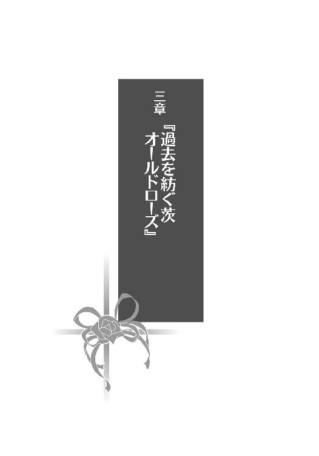

| 安達としまむら3 (電撃文庫) | |
| 入間 人間 | |
| (2014) | |
本書（電子版）に掲載されているコンテンツ（ソフトウェア／プログラム／データ／情報を含む）の著作権およびその他の権利は、すべて株式会社ＫＡＤＯＫＡＷＡおよび正当な権利を有する第三者に帰属しています。
法律の定めがある場合または権利者の明示的な承諾がある場合を除き、これらのコンテンツを複製・転載、改変・編集、翻案・翻訳、放送・出版、公衆送信（送信可能化を含む）・再配信、販売・頒布、貸与等に使用することはできません。
『今日の安達さん』
「しまむらー！」と出したこともないような大声で呼んで、後ろからしまむらに飛びつく。しまむらに足を担がれて背負われるような状態になりながら、笑顔でしまむらを覗き込む。
しまむらも微笑んで、私に応えてくれた。
そんな夢を見た。
「.............................................」
両手で顔を覆う。
「.............................................」
死にたくなった。
誰がなんと言っても冬だった。肌に感じるものも、雲の様子もくまなく真冬だ。気を抜けば鼻が冷えるし、授業中にふとぼんやりしていると瞼が重くなるのも......そっちは季節問わずかもしれない。とはいえ冬場は特に、いくら寝ても微睡みやすい。冬眠したがっているのだろうか。できるのならそれも悪くないと思った。
そんな二月四日が、いつものように昼を下っていく。
ようやく今日の授業が終わって、教室内の乾いた空気が弛緩する。終わった途端、部活に参加するために駆けていく人もいて分かりやすく青春しているなぁと見送る。同時に、廊下の空気が教室に流れ込んできてその温度差に軽く身震いした。とても飛び出す気になれない寒さだ。
冬休み明けには夏休みのときと同様に席替えが行われた。そのくじ引きの結果、わたしは教室の中央から後ろの出入り口に近い席へと変わった。教卓から離れたのが地味に嬉しい、今までは欠伸をこぼしても先生に見咎められることがあったけど、距離が開けばそこまで厳しくならない。その代わり、今みたいに人の出入りの度に冬もお邪魔してくるのを感じなければいけないので落ち着かない場所でもある。
「......さてと」
今日はどうしようか。まっすぐ帰るかそれとも、安達に用があるのかと聞いてみるか。
二月に入ってから例によって、安達の様子がおかしくなっているように見える。まぁ安達がおかしくなかった時期は出会ってから一ヶ月かそこらの間に限定されているので、夏や秋以外は大体おかしいのかもしれない。なんという困ったちゃんなのだろう。
「あ」
目が合った。振り向いた安達が固まる。こっちも教科書を鞄に詰めかけたまま止まる。
声をかけあうには少し遠い距離の見つめ合いで対処に困ってしまう。戸惑っていると安達が目を伏せて前髪を弄りだしたので、こっちも教科書を詰めるのを再開する。
安達との距離感もなかなかどうして難しいものだった。
放課後や昼休みはこういった視線を感じることが多い。授業中はさすがにこっちを振り向いてばかり、ということはないけれど。代わりに一人で気難しそうにしている。そして唐突に赤面したり教科書に顔を突っ伏したり忙しなく髪を撫でたり、忙しそうだった。安達は丁度、わたしと入れ替わるように席が中央へと移ったのでその様子が自然と目に入ってくる。頭が左右に動くので、後ろの席の女子が板書を写す際に若干苦労しているみたいだ。
「ヘイSHIMA！ HINOだぜ！」
なんか陽気なのがやってきた。その浮かれ具合に負けじと、肌には日焼けまで見える。確かに日野じゃなくてHINOという感じだ。どういう感じだ。お正月に家族と海外へ遊びに行ってきたらしいけど、しかし、真っ黒だ。一人だけ真夏の時間を過ごしているようである。
「なにその中途半端な外国挨拶」
頭の中もこんがり焼けて外人さんに染まってきたのだろうか。
「いやぁなんかローマ字にすればメーカー名っぽくなるかなと話していて」
そうそうと永藤が頷く。どんな話からそこに行き着いたのだろう。
「まーしまむらはひらがなのままの方がそれっぽいか」
「いや、そもそもひらがなじゃないんだけど」
そうそう、と永藤が適当に相づちを打つ。どっちに打っているかも分からない。
「ちなみに用はない。んじゃなー」
日野が手を振って教室から出て行く。吐息まで白むこの季節では、その後ろ姿が背景から浮いていた。そのこんがり日野を追おうとした永藤が思い出したように立ち止まって振り向く。こっちは青白い。眼鏡をくいくいと指で上げながら、わたしに尋ねてきた。
「投げとるかね」
「は？」
これよこれ、と永藤が右腕を軽快に振る。横に振ったそれと、ついでのように揺れる胸が目を引く。うーん......あぁ、ブーメランのことか。永藤、投げる、と来たらそれしかない。
「投げてるんじゃない......妹が」
確かそういう話だったはず。その妹がこっちを見ている、ような気がした。
「上達したら勝負しようと言っておいて」
「え、ああ、うん」
それだけ言って、永藤が日野を追っていく。困った言づてを残してきたものだ。
安達が永藤と並んでブーメランに興じる姿はちょっと想像できない。
永藤はブーメラン仲間を求めているなら、いっそのこと日野と遊べばいいのに。やってくれないんだろうなぁ、多分。永藤も日野の釣りには付き合わないし。
相手を全肯定するわけじゃなくて、だけどあの二人は仲がいい。いい関係だと思う。
「......海外かぁ」
少し羨ましい。わたしは海の外なんて行ったことがない。それどころか飛行機も乗ったことない。新幹線はさすがにある、とよく分からないけど心の中で防波堤みたいなものを作った。
廊下から訪れた、冬の塊めいた空気も途切れたのでさて、わたしも帰ろうかと席を立ちかけたところで机の前に人影が差しかかった。中腰で見上げるそれは安達だった。
「よっす」
「こ、こんち」
無理にあわせてくれた感じのぎこちない挨拶だった。今日は昼ご飯を日野たちと取ったので、安達の声を聞くのはこれが初めてだ。誘おうとしたらそそくさと逃げるし、安達。
日野や永藤と一緒なのは苦手みたいだ。分からないでもないけど。
わたしは日野たちと友達だけど、安達がそうとは限らない。
その安達がもごもごと、重そうに口を動かす。
「今日、暇？」
「うん？」
「遠出的な、違う、寄り道的なものをしないかな？ というか」
なぜ的な、をつけたがるのだろう。焦ったような言い方が少しおかしい。
「どこか行こうってこと？」
安達が小さく頷く。うぅん......寒いからパス、と一瞬言いかけたけどその断り方は冷たく取られるかなと考え直す。言葉を選ぶ、というところが人間関係で一番気疲れするところだと思う。わたしは頭のいい方じゃないから、ぱっぱと代理の言葉なんて思い浮かばない。
なんとかクエストの主人公みたいに、はいといいえでどうにかなってくれないものか。
「あ、忙しいなら別に、いいけど、全然どっちでも」
安達が手を振って予防線みたいなものを張ってくる。そういう過剰気味な予防は、相手との距離感を測りかねているときに生まれるものだった。嫌われたくないという気持ちが先行すると、前のめりな態度になってしまうのは分かるところがあった。
けどそんなことを言われると少し見栄を張るというか、悪のりしたくなる。
「そうなんだー、いやーよかった、実はわたし今日ゴージャスに忙しい......」
冗談を朗らかに飛ばそうとしたら安達がまったく笑ってくれないどころか目がきゅっと縮んでもう一押し攻めれば泣くんじゃないかあわやという様子だったので、内心慌てて切り替える。
「はずがないじゃないか。意地悪なこと聞くなぁ、安達は」
あははー、と取り繕う。それを受けた安達が「ごめん」と気まずそうに謝ってしまう。
......謝らせてしまった。いや、そんなつもりでもなかったのだけど。薄紙で顔を叩くように罪悪感が肌を掠める。こうなると、断ることは雰囲気からして難しかった。
「今のは噓ですすいません調子に乗りました。だから行こうと思います」
謝罪ついでに了承する。安達の強ばっていた表情が柔和なものとなり、肌まで潤ったように見える。安達は機嫌とか心情がすぐ表に影響する質らしい。分かりやすいのはいいことだ。
わたしは高校生になってから、少し分かりづらいやつになった。よくないなぁ、うん。
「どこか行きたいとこあるの？」
多分、ないだろうなぁと思いながらも聞いてみた。
「行きたいところはないけど」
「ないけど？」
続きがありそうなので促すと、安達がマフラーを嚙むように俯き、それから。
「お菓子とか、食べたいかも」
目は逃げているのに口もとが笑おうとして引きつっていた。なんて忙しい顔なんだ。
顔の上が→で、口が↑に動いていて、安達器用だなぁと感心してしまう。
「安達さんは甘いものを求めていると」
糖分を摂取するとその微妙な表情が改善されるのだろうか。
わたしの発言に、安達はなぜかびくりと肩を上げるような仕草が混じった。
「えぇと、うん、お菓子」
「甘くないお菓子？」
「うん、えぇと、甘いのでいいけど......」
安達が口を細かく動かして、最後が聞き取りづらい。
そして、なぜか微妙に嚙み合っていないように思える。でも希望は分かった。
モールに行けばお菓子ぐらいいくらでも売っている。甘いのが多く、甘くないのは少ない。
またドーナツでも一緒に食べればいいのかな。それはいいかもしれない。
振り返って悪くないと思える時間が増えてきているのは、素敵なことじゃないだろうか。
わたしはこれまで多くのことを忘れてきた。これからも大半を忘れていくだろう。
それでも残る僅かな記憶が、思い出として大切なものであればいいと思う。
そのためには、良い記憶というものを増やさなければいけない。下手な鉄砲もなんとやら。
そんなわけで、安達と放課後を過ごすことになった。
安達が挙動不審なことも含めて、いつも通りだった。
安達の自転車に二人乗りするあたり、わたしたちはまだ不良なのかもしれない。とりあえず髪が染まっている限り、妹に言わせると『ふりょー』らしい。その髪をどうしようかと最近悩んでいる。元の黒色が混じり出して、焦げたプリンみたいな色合いの頭になってきていた。
放っておくか染め直すか。中途半端はどちらにしてもよくないのだけど。
行き先を安達に任せて運ばれること二十分弱、着いた先は大型のショッピングモール。安達とクリスマスに訪れた場所だ。沈み始めた日の影響で、広い駐車場全体が薄暗く見えた。
駐輪場にはわたしたち以外にも制服姿がうろついていた。他校の生徒もいて、誰の吐息も白い。見ていると肌寒さを再確認するようで、上半身が震えた。こたつが恋しくなる。
でもすぐ帰るわけにはいかないよねぇ、と自転車に鍵をかける安達を見て思う。
モールの中に入ってから少し歩くと、安達がわたしの人差し指を摘んで、おどおどしながら持ち上げてくる。外よりもずっと暖かいモールと、安達の指の温度は似ていた。
「いい、かな」
手を繫いでいいかな、という意味のようだ。聞くようになっただけ成長......した？
赤い線が走るように頰が紅潮しているのは、気温の移り変わりのせいだろうか。
「どうぞ」
頷くと、安達の手がハサミのように開いてわたしの手を包む。握ったわたしの手を見つめて、それから慌てたように下ろした。手を繫ぐのはいいけど、安達の表情が硬化するのが気になる。真っ直ぐ前を向いて、というか首が強ばって曲がる様子がなくて、頰に触れればかちこちと音がしそうだ。目なんかまばたきしているところを見ないけど大丈夫だろうか。
「甘いもの食べに行くんだっけ？」
「うん」
安達がぎこちなく頷く。......首が曲がらないから気づいていないのかな？
「そこにドーナツ屋がありますけど」
いかがでしょうか、と指す。駅にある店とは種類が違うけれど、ここはここで美味しい。
生地の裏に砂糖が雪のように固まっている程度には甘いし。
でもドーナツ、安達と来れば次に訪れるのはヤシロな気もした。......来るかな？
安達は足を止めて、店を覗くように首を伸ばす。背伸びまでして、なにをしているんだろうと不思議に思いながら成り行きを見守る。安達に引きずられるように移動して、店の正面に回り込む。入り口脇にあるそのドーナツ屋は壁がほとんどなくて、カウンターの様子が外からでも一望できた。それは同時に、店員がわたしたちを見つめ返すこともできるということだ。
挙動不審な安達と、それに釣られるわたしへの視線を感じる。手を繫いでいるから余計に注目されているかもしれない。やっぱり変か、変だなぁ。つい顔を逸らしてしまう。
上映している映画を紹介する看板が斜め後ろにあって、それを上から下まで眺めている男女も手を繫いでいた。うん、あれが普通だ。それから、エディオンへ向かう親子連れも小さい男の子とお母さんが手を繫いでいた。お母さんは少しだけ身体が傾いて疲れそうだけど、あれも普通だ。対するにわたしと安達は、お手々繫いで仲良しこよしには少し大きすぎる。
「んー......」
思わず苦笑が漏れる。循環する空気がわたしたちには引っかかりを覚えて淀むような。場の空気に溶け込めていない感じだ。握られている手だけが生暖かく、自己主張を強めていた。
でも今更、色々となかったことにするのは無理なのだった。
人付き合いというものは始めるより、終わらせる方がずっと難しい。たとえば、今この場で安達の手を振り払えるか？ と考えれば、それはできない。手を繫ぐような流れの中でここまで生きてきたのだ。わたしの昨日も、明日も、流れに身を任せて進むしかない。
そこから大きく、外へ一歩踏み出すには相応の決意とか覚悟がいる。
そういう固いものは、わたしにないのだ。
「ない」と小さく呟いてから、安達がわたしを見る。少し不安そうな顔つきで。
最近の安達が向ける顔は大抵、そうだ。前はもっと冷静だったと思うけど。
「あんまりよくない、かも」
「そうなの」
どういうことなのか分からないけど、まずは納得してみる。うーん、今日も普通におかしい。
「和風のものが食べたいとか？」
「そういうのではない、というか」
そうじゃないんだよなぁ、とばかりに安達が頭を捻る。こっちが首を傾げたいよ。
「お目当てのところとかあるの？」
「え、いや、うん、ないけど」
こちらも軽く否定してくれる。じゃあどういう基準で和風を否定したんだ、と聞きたい。
今日は殊更、困った安達ちゃんだった。たまには分かりやすい安達になってもいいと思うのだけど。分かりやすい安達......なんでもハキハキ受け答えして......そんなの安達じゃないなぁ。
この微妙なふるふるしている感じが、わたしの知る安達だった。
目的があるのか、ないのか。はっきりとしないまま安達が歩き出して、それに付き合う。
「そういえばさ、聞いてみたいんだけど」
「なに？」
「わたしって髪を染めるか戻すか、どっちがいいと思う？」
横の髪を弄りながら安達に尋ねてみる。自分で考えても決め手がないので、周りの意見を窺ってみたかった。聞かれた安達がわたしを見つめる。頭から靴の先まで......別に足下まで眺めなくても答えられそうなものだけど。全体の調和とか、そんなことまで考慮しているのかな。
じっくり観察した後は安達が目を瞑り、両方のわたしを想像しているみたいだ。そこまで真剣に検討してくれなくてもいいのに、と思いつつ、無防備に目を閉じているので、悪戯できそうだなとこちらも色々考えてしまう。唇を摘んでタラコにする、頰を引っ張ってモモンガー、とかやってみる。......発想が小学生みたいになっていることに、少し恥じた。
一人照れている間に安達が目を開けてしまう。茶と黒の入り交じる部分を見て、困惑するように眉をへの字に曲げた。
「黒いしまむらって見たことないから、決めづらい」
「そりゃあわたしはいつもお腹真っ白ないい子ちゃんだからねー」
一瞬、こらって思ったけど冗談で笑い飛ばす。黒いしまむらって嫌な略し方するじゃないか。
ブラックしまむら。ホワイトしまむら。ブラックの方が語感いいかもしれない。
だからなんだという話だけど。
「ほら中途半端になってきたから、どうしようかなーと」
髪を梳くように持ち上げながら説明する。手のひらから流れ落ちる髪を、なぜか安達が手を伸ばして受け止める。わたしたちの手の間を、流砂のように髪がこぼれる。見ていてふと、砂時計が欲しいことを思い出した。買おうと何度か思い立って、その度に忘れてしまうのだ。
砂のように記憶がこぼれる......あ、上手いこと言ったかも。
それはいいのだけど、安達が手に載せたわたしの髪を熱心に見つめている。
「どうかした？」
食い入るように見ているので、髪に一家言でもあるのかと思ってしまう。声をかけられた安達はわたしの髪を放り出すようにしながら顔を引き、「なんでもない」と早口で答えた。
なんでもなくなさそうだったけど、と少し乱れた髪を直しながら言いかけた。でも、飲みこんだ。
結局、髪についての明確な意見は貰えないまま歩き出す。
ケンタッキーの前を通り、大戸屋の前を通り、しゃぶ菜の前を通って別の通りに出た。その右手側に、和風でない洋菓子屋を発見する。「ここでどう？」と安達に尋ねると、またその首が伸びた。なんだその癖、と少し呆れていると「うん、いいと思う」と、今度は安達も納得してくれた。判断基準を一度聞いてみたいところだけど、不安定な表情を見るに教えてくれそうもなかった。
店は黄色い看板にヒゲのお爺さんの絵がくっついている。名前はべ、べあー......べあーど？ びあーど？ と書いてある。生地の香ばしい、良い香りが喉の奥をくすぐるように流れ込んでくる。売り物はコロネにクッキーシュー、それにチーズケーキ。確かに和風ではないし、甘いものもある。安達の希望を満たしているだろう。
あとは期間限定と銘打って、チョコクリーム入りの菓子も販売しているみたいだ。暗い色合いで、隣に売っているかりんとうシュークリームと区別がつきづらい。安達の頭の向こうに貼ってあるポスターに目をやると、期間限定でチョコレート商品を売る理由が載っていた。
もうすぐバレンタインデーだからだった。
そうか、もうそういう時期か。妹に買ってやらないと、ケチケチの歌を贈られてしまう。今年はその横にヤシロまでいそうな気がする、と想像して小さく溜息をつくと、安達が蟹歩きを始めた。大股で、わたしの手を握ったまま迂回するように回って、反対の位置まで移動する。
当然、わたしもくるりと回る羽目になる。
安達の手が少し汗ばんできていた。それから、また首を伸ばしてわたしの後ろを、さも偶然ですよーと訴えるような顔つきで覗いた。
振り向いてみても、さっきまで見ていたポスターぐらいしかない。
そのバレンタイン限定商品のポスターを凝視しながら、安達が口を開いた。
「バレンタイン」
声を裏返して目が飛んだまま、宣伝を読み上げる。
「と、書いてある」
「あるね」
相づちを打つと、安達がしゃっくりをし始めた。ついでに目が泳ぐ。ターン早いなー。
「そんな時期なんだ、ね」
ひっく。冷静を装うにも、しゃっくりがそれを許さない。
さすがにここまで分かりやすいと、わたしでも察することができた。
「バレンタインがどうかしたの？」
指摘してみると、安達がものの見事に狼狽する。
目と一緒に舌が回って、螺旋が描かれるようだった。表情がサーカスのように賑やかだ。
「え、あ......その、別に大した、ことじゃなくて」
ひっく。度々しゃっくりが挟まって、言葉がぶつ切りになる。
そういう話を振るために誘ったのだろうか。ドーナツ屋でダメな理由はそのあたりにあったみたい。ややこしい、いや回りくどいなぁと言うべきか。今の位置替えも合わせて。
まさか贈りたい相手がいるのだろうか。実は彼氏持ち？ いや、それはなさそう。今までそんな存在の影も見えていないし、そもそも安達がわたし以外といるところを見たことがない。
......ないのか、わたし以外に。
と、なると。
「わたしか？」
消去法で出た答えをぶつける。安達がびくりとして、そのまま仰け反って転びそうなほどの動揺を見せる。咄嗟に握っている手を引いて転倒を防ぐと、安達が足を滑らせてわたしに寄りかかってきた。わたしの胸もとに安達が収まる。結果として抱き留めるみたいになってしまう。
安達の香りが、洋菓子の香りと共にふわりと漂った。
「.............................................」
そのまま安達が動かないので、どうしたものかと悩む。
安達の方が背丈あるので、収まり悪いなぁ。大きいものを抱えているようで据わりもよくない。安達は目を見開いたまま固まっている。そしてやや間を置いて、うわ、凄い。耳が真っ赤になったけれど、その過程がまるで、侵食するように赤色が迫り上がってきた。そこまで激しい移り変わりを見た経験はない。そして目がどうなっているんだというほど、激しく跳ねる。
安達が私の腕を押しながら、感極まったように身を引く。その直後にハッとしたように顔色を変えて、頭を抱えるように苦悩する。それから、いやいやと否定するように頭を激しく振った。バネ仕掛けの玩具みたいな落ち着きのなさに少し引く。
挙動不審に加えていつまでも店の前にいては営業妨害になるので、一旦離れる。横に足を広げて、蟹のように歩いて距離を取った。当然、忙しい安達も連れて行く。洋菓子屋の向かい側は和風の定食屋で、ディスプレイの中ではマグロ祭り中だった。その明かりに照らされて、これはこれで風情に欠ける。
それでもバレンタインの張り紙から離れた影響か、安達が少し落ち着いたようだ。
今日の目的とかなにを言いたいかとか、かなり不自然な流れで明らかになったところでどうなるかなと静観していると、安達が重そうな唇を開いた。
「十四日に、しまむらはなにか、用事ありますか？」
「ないですけど」
やっぱり、わたしみたいだ。クリスマスのときと同じ流れだし。
安達の様子が目に見えておかしくなるときは、こういうときの前触れらしい。
わたしは今日、安達を一つ学ぶ。
「ないなら、十四日に、遊ぼうという......」
自分でも偶然を装うのは無理があると分かったのか、言葉が尻切れトンボとなる。
口が要領を得ないままもごもご動いて、瞳だけがわたしに助けを求めるように揺れる。
鼻の上に加えて、手の甲まで真っ赤に染まっていた。赤さがマグロ祭りに負けていない。
安達マグロって、マグロの種類にありそうな気もした。本マグロとかメバチマグロ的な......馬鹿なこと考えてないで、わたしからなにか聞かないと事態が進展しないみたいだ。
「えーと......チョコが欲しいのかあげたいのか、どっちなのかな」
そういう問題か？ と思いつつも聞かずにはいられなかった。
安達は目を白黒させながら、人差し指を絡めてくるくると回す。
「くれ......あ、ううんどっちも......で、こう、交換的な」
両方希望とは意外に欲張りだ。まぁでも、なにがしたいかは大体分かった。
「んー」
友チョコかぁ。妹には買ってあげたことがあるけど、あれは少し違うか。
日野と永藤あたりなら毎年やっていそうだけど、わたしと安達も？ 日野たちの立場に置き換えて、自分たちの様子を想像してみる。わたしが日野で、安達が永藤に収まるとして......ダメか、あの二人みたいにすんなりとできそうにはない。年季の差が歴然だった。
安達とはもっと長い付き合いにならない......と、考えてみたけど安達と何年ぐらい一緒にいるのだろう。高校卒業まで？ いや下手をすれば二年生に進級して別のクラスになったらそこで途切れることもあり得るのかな。そういうことは今までに何度かあった。
小学生のときは他の教室に入るということが、大きい壁のように抵抗あるものだった。教室にいつも先生がいたからだろうか。自分の居場所のように感じられなかったから、居心地が悪かったのかもしれない。そのせいで疎遠になっていった友達の名前は、もう思い出せない。
高校生になるとそこに面倒くささというものが加わって、尚更腰が重く......いや待った。思ったけれど、教室が別になっても安達からやってくるような気がする。そうなると今までとあまり変わらなくて、その変わらなさを想像するとどこか落ち着くものがあった。
なんだかんだと、安達と過ごす時間も長いわけで。そうなってくると○○が安達だ、というイメージ的なものが固まりつつあるのだけど、友チョコをやってみたいというのは安達っぽいなぁと思う。
隙あらば手を繫ごうとすることといい、安達は繫がりに飢えている節がある。人となにかを共有することに慣れていないからこそ、憧れるのかもしれない。なんでも家庭環境のせいにする気はないけど、母親との冷えきった仲を見る限り、原因の一つであるのは確実だった。
わたしは別に安達のお母さん役を務める気はないのだけれど。
「でもこういうのは当日にパッと渡すからびっくりして面白くて、事前に分かっているとなんだか新鮮みが薄いような感じがしない？」
クリスマスにサンタが来ると予告されて、その上プレゼントの中身まで事前に知らされているようなものだ。わたしは希望が叶うより、その驚きを与えてくれる方が心弾むように思う。
欲しいもの、というのが昔から少なかったせいだろうか。
一方の安達はわたしの意見に対して、緩く首を振った。縦ではなく横だけど。
「私は分かっている方がいい。あると分かる希望なら、信じられるから」
「......そんなものかな」
うん、うんと安達が小さく二度頷いた。そんなものらしい。
わたしにはいまいち馴染みのない感覚のようだった。
「それに、まだ問題は山積み......」
安達がぼそぼそとなにか言ったけど、首を引っ込めるように話すので聞き取りづらい。
問題ねぇ。安達はいつも問題だらけで、こっちも釣られて疑問がいっぱいになりそうだよ。
......ただ。
安達は日常を走る流れの中から、踏み出そうとしてくる。
踏み出す方向はなぜかいつもわたしに向いている気がしないでもないけど。
その決意とか覚悟は大したものだなぁと、時々感心してしまうのだ。
だからわたしは、安達の望みにこう応える。
「いいよ。今年はバレンタインをやっちゃおうか」
わたしにとって、毎日というのは灰色が延々と、縄のように続くもので。
だけどこの日、二月四日。
そこから始まる十日間は灰色の毎日に少しだけ、彩りを与える。
おまけ「肉屋来訪者その４」
「ちょっと持ち上げてみていい？」
放課後に永藤の家のこたつでごろごろ転がっていたら、その永藤にわけの分からないことを言われてしまった。さっきからこっちを見つめて、むしろ目が若干飛んでいたのだけれど。
「なにを？」
「日野」
「なぜ？」
「できそうだから」
永藤は至って真面目そうだ。分からん、こいつは本当にどういう思考でそうなるんだ。
「起きるのめんどい。引っ張ってくれー」
手を伸ばして横着する。すると永藤が本気に取って腕を引っ張り、わたしをこたつから引きずり出す。室内も暖房は機能しているので寒いというほどではないけど、寝転んでいると床に留まった寒気が霜のように身体を覆ってくる。
「起こしてくれー」
手をびたんびたんと上下に動かしていると、永藤がわたしを縦に引っ張る。縦横にそれぞれ引きずられてｘ軸とｙ軸を修正されたわたしが見事、他力本願に立ち上がる。
「立った、わたしが立った。ぐぇ、立ち眩みと耳鳴りが酷い」
人が不調を訴えてよろめいているのに、永藤がわたしの脇の下に手を入れて、本当に持ち上げ始める。いきなりだったので、浮いた足をじたばたさせてしまう。高い高いとでもするように、永藤がどんどんとわたしを持ち上げていった。そうなると、永藤より目線が高くなる。
新鮮ではあるけど、耳鳴りのせいかぼぅっと、意識が飛びそうになる。
永藤の腕が震え出す。おぉ、ぷるぷるしている。そして限界が来たのかあっさり下ろした。
自分の二の腕を揉んで労りながら、永藤が言う。
「意外と重かった」
「なに失礼な感想を述べてんだ」
低くて重いなんて最悪じゃないか。今降りたときすとんだっただろ、どすんじゃなくて。
「で、あんたなにがしたかったの」
「いや日野ならできそうだったから」
「あーもういい」
本当にそれ以上、なにもないのだろう。永藤に二重、三重の底なんてない。
こたつに入り直すと、永藤も一緒に入ってきた。それから眼鏡を外す。
永藤はわたしと二人きりのとき、眼鏡をかけないようにしている気がする。
理由は聞いたことがない。今のやり取りのようにきっと、単純で謎な答えしかないだろうし。
こたつ机に突っ伏して、卓上カレンダーを息で震わせて遊んでいると十日後の存在にふと気づく。バレンタインデーだなーと思い、永藤に聞いてみた。
「そういやー、今年もチョコいる？」
小学生の頃からチョコ交換するのが当たり前になっていて、途中から珍品チョコ探しが主軸になって迷走していた時期もあったけど最近は無難なものに落ち着いた。カレーとハンバーグが大好物な永藤ちゃんは、単純な味でないと喜ばないからだ。
どうせ贈るなら、相手が喜んだ方がいいに決まっている。
「甘いの好き」
「ほいほい。じゃー今年もなんか買ってくるか」
大抵は一緒に行って一緒に買って、一緒に食べてはいお終いなんだけど。
バレンタインなんて、そんなものだ。
『今日の安達さん』
「あだ、ちー」
ちーの発音にこだわるしまむらを想像したら、なんだかいいなぁと思った。
......授業中になにを考えているのだろう。
家に帰って自室に戻ってから、真っ先にベッドに転がって頭を打ちつけた。
しまむらを家の前まで送ったのは覚えているけど、そこから先の記憶が夕日で焼け付いたように判然としない。よくもこれで事故に遭わないで家まで帰ってこられたと思う。
今日は本当に冬だろうか、と不思議になるほど頭が熱い。耳も痒い。打ちつけた頭の周りを埃が舞い上がって、その透過した色を見て夕焼けに気づいた。
今の私は、その夕日に負けていないほど赤いかもしれない。
思い返す度、自分の挙動の一つ一つに恥じ入ってしまう。頭を打ち、足がばたつく。
そろそろ起き上がれるか、と頭を上げたけどまだ背中がぐんにゃりとして頼りない。
あと五分ぐらい必要だと倒れ直す。自然、うぅうううと唸っていた。
日頃は無関心な両親も、今の私を見たらさすがに心配しそうだ。
「......我ながら、不自然だったけど」
極まりなかったけど結果として、自分の望む方向に事態が動いた。
先月はいないと思っていた神様は、本当はいるのかもしれない。でもその神様は意地悪で、私がより悩む方向へと誘導するのが好きなのだろう。予定が決まったからこその苦悩もある。
「......チョコレート」
掛け布団の柔軟剤混じりの匂いを感じながら、呟く。
恐らくこれから、私の頭をどろどろに溶かしてしまうお菓子の名前を。
誰かに渡すなんて初めてだ。貰うのも......多分初めてだ。小さいとき、親に買ってもらったことはあるけどそれは数えなくていいと思う。入れたところでどっちみち、なにも変わらない。
それを望んだのが初めてであるという事実には、なんの影響もない。
まだ一週間以上先なのに、いや逆に、色々と準備するならそれでも足りないかも。
手作り、いや手作りは重いかな。重いような......重い。そもそも、料理経験なんてない。作れるのだろうか。勉強、練習？ いやでもやっぱり、重い。クリスマスのときみたいにしまむらの好みに沿って既製品を用意した方が......いい。いい、と思う。いいよね、いやでも。
これが最初で、最後かもしれないと考えると後悔のないように、と思ってしまう。
だけど『絶対に後悔しない方法』なんて、誰も知るはずがない。
なにが正解なのか、と早くも頭が痛くなってきた。こんな調子であと十日。大丈夫だろうか。
本番を迎える頃には、シロアリにやられた角材みたいにスカスカになっていそうな気がする。
「手作り......手作り。その前にしまむらの好みとか、聞かないと......」
多分誰も知らないので、本人に聞くしかなかった。だけどあまり聞きすぎるとこっちの気合いの入り具合が露わとなってしまうから、加減が難しそうだ。本当に難しそうだ、と今日のぎくしゃくした振る舞いを思い返して鼻の表面が熱くなる。そんなに意識するようなことじゃないよ、とうそぶいて高ぶりを冷ます。
あくまでこれは友達との......そう友チョコ、みたいな、あれなんだし。
だから料理自慢の方向にでも持っていかない限り、一から作るのは重たい、ような。
逆にしまむらの手作りなら、欲しいなぁと思う。凄く欲しいなぁと、切望している。
私が本当の意味で望む関係。
私からだけ特別なのではなく、しまむらからも特別であってほしい。
違いが欲しかった。私だけのなにかを人間関係に欲していた。
けれどどうやればいいか、思いつかない。特別なの下さいって要求した時点で、用意されたものは特別なんかじゃない。自発的であることが前提条件だ。
ならばさりげない会話でしまむらをそういう方向に導く......さりげない会話というのがまずもって不可能だ。最近の自分の醜態を省みて、それぐらいは理解している。さりげなく話すことを毎回必死に考える有様なのに、肩の力を抜いて遠回しに、なんて器用な真似はできるはずもなかった。いつも全力投球で、その全力も身体が緊張でがちがちだからすっぽ抜ける。
格好悪いぞ、私って。今更だけど本当、自己嫌悪だ。
寝返りを打つように頭を振って、舞い上がる埃に退廃を感じる。
私が本当に求めているものはチョコレートよりずっと柔らかい。
それこそ、摑めないほどに。
バレンタインだって、それに怖々触れるための過程でしかないのだ。
二月五日（水）
授業中もずっと、しまむらとチョコの間を夢現のように往復していた。
ちょっと危ないだろうか。ちょっとかな......ちょっとだと思う。でも授業というのは往往にして退屈なもので、席位置の関係でしまむらの姿を見ることも叶わないとくれば、暇つぶしには頭を働かせるしかなかった。仮に暇じゃなくても考えていそうだけど。
気づけば放課後まで時間が終わっているこの感覚に、内心で焦る。この調子だと十日なんてあっという間に過ぎてしまいそうだ。昔なら、有り余る時間に溺れていた私なら喜んで受け入れたのに今はそうもいかない。私は大きななにかを得て、だから、端に追い詰められている。
引き出しの中身を片づけながら振り向くと、季節感を無視して小麦色に日焼けした日野と、こっちは若干眠たげに目を細めている永藤がしまむらに一言二言挨拶して教室を出て行く。しまむらはあの同級生たちともチョコの受け渡しをするのだろうか。しまむらの場合、貰えばお返しするだろうけど自分からは提案しないだろうなぁと思う。あとはよく分からないけどあの宇宙服を着た子も想像する。最近はしまむらの周りで見ない......気もするけど、あの子は一体なんなのだろう。色々な意味で。
他にも、私の知らない誰かとそういう約束をしていることだってあり得た。私が知っているしまむらは本当に一面でしかない。いやその一面すら満足に摑みきれていない。なにしろ摑み所のない性格だから。事なかれ主義ともまた異なり、引っかかりが非常に少ない。
その側に留まろうとしてもするする、すり抜けていってしまう。
私は、しまむらが別に、他の子とチョコレートの受け渡しをしても構わない。いや構わないというかそもそも、私に口出しする権利があるのかなという感じで、ないよなと分かっていて、けれどもそう言いながらその場面を目撃してしまったら心穏やかでいられそうもないわけで。
なんだか目が回ってきたので、深呼吸して一旦間を置く。なにを私は盛り上がっているのだ。
教室に座っているだけで息苦しくなっているあたり、自分が考えているより危ない症状を患っているかもしれない。人間はこうして病の進行に気づかず手遅れになるのかなぁと、そんなことを考えてしまう。
実際、強がっているけどしまむらが他の相手にチョコレートを渡しているところを見たら酷く落ち込むと思う。いやむしろ泣くかもしれない。つまり本音を言えば嫌ってことになる。
......認めていくと、自分の嫌なところが次々に引っ張り出されてくる。こうして表面に浮かんでくるアクを取り除かなければ、人付き合いは耐えがたい味になって敬遠されてしまう。
私はちゃんとアクを除けているだろうか。そうでありたいと、常々思ってはいる。
そして叶うなら、しまむらの『アク』を指ですくってみたいとも。
そんなことを思いながらもう一度振り返ると、そのしまむらが教室からいなくなっていた。もう帰ってしまったらしい、と慌てて鞄に教科書の残りを詰める。しまむらから私の席へやってくることはあまりない。それが少しもどかしい。
鞄を摑んで足早に廊下に出る。しまむらの後ろ姿がなかったのでちょっと走る。走っている最中に廊下の冷え込みに遅まきながら気づいた。順番がしまむら、季節と逆転していた。
階段を降りたところでしまむらを見つけた。寒さのせいか、少し背中が曲がっている。袖を引っ張って、鞄を持つ手の指先まで袖口の中に隠そうとしていた。そのせいで肩が出っ張っているように見える。
その背中に近づくと足音か勢いか、なにかを察してしまむらが振り向いた。
「おや安達」
どうかしたの、と目で尋ねてくる。私は冷静に、と意識しながらゆっくり口を開く。
考えれば、今日、学校の中で声を出した覚えがなかった。
「しまむらって、どんなチョコが好きかな、って」
割と自然に聞けたように思う。聞けた？ 聞けたよ、多分。こうやって自問する癖がつき始めているのはそれだけ、自分の行動に疑問がつくせいだろう。そして自然とはいうものの、口の端が少し硬いのを感じる。
「チョコか......あんまり食べないから、そうだなー」
しまむらが廊下の奥に目をやりながら考え込む。あまり深い意味で取らなかったみたいで、そこに安心する。返事を待っていると、「よくないな」と独りで納得して頷いた。なんだろう。
「まぁ甘いのは大体好きなんだけど」
「うん」
チョコは大体甘く作ってあると思う。これはハードルが低いのか、絞りづらいと取るべきか。
「ミルク系のとか好きかも、食べやすいし」
一応とばかりに、しまむらが付け足してくれた。
「そうなんだ」
言われてミルクチョコレートを思い浮かべる。その色合いは、しまむらの柔らかい茶色の髪と似ているかもしれない。それと、しまむらがなにかを好きと語るのは初めて聞いた気もする。
よく分からないけれど少々、感動めいたものに浸ってしまう。
会話が途切れて独特の間が空いた後、しまむらがこちらを窺ってくる。
「それだけ？」
「......それだけ」
また沈黙となる。私たちの横を下校する生徒が通りすぎていく。
「そっか」
「うん」
「よし帰ろう」
見るに見かねてという雰囲気でしまむらから動いてくれた。
多分、寒いから早く帰りたいのだと思う。
校門まで一緒に歩いて、何事もなく別れた。
そして曲がり角まで来たところで自分が歩いていることに気づき、駐輪場に引き返した。
背景や他のものから浮いているなぁと感じながらも、片づけられないものがある。
ブーメランのことだ。夜も深まってきた頃、棚に飾ってあるそれを手に取る。しまむらからのクリスマスプレゼントを無下にしたくはないけれど、利用するのも難しい。
しまむらは、これを片手に外で遊び回る私を期待していたのだろうか。さすがにそこまで性格把握されていない、とは思わない思いたくない。悩み抜き、おもむろに投げてみる。軽く投げたそれがクローゼットにぶつかって軽い音を立てながら床に落ちた。......うぅん。
拾いに行くと、腰を屈めたところで点けっぱなしにしておいたテレビに目が行く。一目見た途端に「うわ」と反応してしまった。シャーマン田岡と名乗る厚化粧の女性が音楽に合わせて踊っている。踊っているというか、歌舞伎みたいに長い髪をぐるぐる振り回していた。
小さなテレビの中で暴れていると、髪の端が外まで飛び出してくるのではと思うほどだ。他の出演者らしき人たちが横で出番を窺っているみたいだけど、まったく寄せ付けようとしない。
存在感凄いなぁと感心する。
その後の、踊り終わって肩で息をしているところは隠せばいいのに。
シャーマンなんとかが独り騒がしいばかりで、結局これはなんの番組なんだろうとその続きを中腰のままつい見ていると、どうやら占い番組みたいだ。それも恋愛専門と謳っている。
......なんだか冒頭の展開も含めて、非常に信用のおけない番組だ。でも恋愛専門、という部分に思わず反応してしまう。いや私としまむらは別に、恋愛とかじゃないけど。ないけど。
ない。でも、見る。
毎日放映している番組なのか、明日の占いという限定的な内容を紹介している。順番は山羊座からで、水瓶座、魚座と続いていく。どういう根拠があって好き勝手言っているのか、とその内容に呆れながらも、自分の星座までは待って聞こうと視聴を続ける。ちなみにシャーマンは汗だくとなって、化粧が崩れてきていた。本人がシャーマンの本職に奉られていそうな顔だ。
『......続きまして、天秤座のあなたは恋の波乱の予感！ 周囲への監視をお忘れなく！』
「......えぇ？」
天秤座の視聴者こと、私としてはあまり愉快ではない占いだった。恋とか無縁だけれど、だけれど、波乱とは穏やかではない。この場合はしまむらと私、どちらに波が来るのだろう。
しかし監視って、さらっと使っているけれど物騒というか、剣吞な響きだ。そんなことしていたらその人の追っかけみたいじゃないか。私は当然、違う。まったく関係ない。そもそもこんな占い当たらないと思うから、気にする必要もなかった。
『バレンタイン期間中の特別キャンペーン！ 期間中の番組の最後に発表されるキーワードを集めて、素敵なプレゼントを貰っちゃおう！ 今日のキーワードはＤ！』
全星座の占いを発表してから、番組の宣伝が混じる。Ｄらしい。そうなのかという感じ。
番組の最後と言いながらすぐに発表しているのはあれ、と思ったけど。
それから誰が決めたのか知らないけど、星座同士の相性表も映し出される。
天秤座と相性いいのは、双子座と水瓶座。でも一番いいのは牡羊座らしい（ただし異性に限り、同性では最悪と注意書きが記されていた）。
根拠がどこにあるのかは分からないので、信用する気はない。ないけど。
「.............................................」
しまむらの誕生日っていつだろう？ こんな番組を本気にするわけじゃないけど、少し気になる。双子座か水瓶座。双子座か、水瓶座。最悪、牡羊座以外。なんとなく、念じる。
冬休み明けの席替えで、いくら念じても効果がなかったのに私はまた、繰り返す。
番組が終わってからようやく冷静になり、馬鹿馬鹿しいと頭を搔いて恥じる。
こんなもの、当たるはずがないのだ。くだらない。
二月六日（木）
「.............................................」
「あの、安達？」
側に立つ私に、なにか用かとしまむらの目が動く。そろそろ限界だった。
「なんでもない」と席に戻る。それからすぐ担任が来たので、ぎりぎりだった。
「.............................................」
「安達？」
昼休みもしまむらの側に来て、見つめてみる。食べているパンの味はまるで分からない。
波乱は今のところ起きていない。強いて言えば、しまむらにちょっと不審がられている。
「なにか欲しいの？」
お茶か、パンかと机の上のものを手にとって見せてくる。
その手首には青色のミサンガがあった。しまむらはあまり装飾品をつけないので珍しい。
それはいいけれど、物欲しそうな目はしていないつもりだったけど誤解されてしまったみたいだ。「あ、大丈夫......」と、もそもそ食べているこちらのパンを見せた。それから、これは昼休みの間に聞こうと決めていたので、質問してみる。
勿論、信じているわけではないけれど。
「しまむらって、星座はなに？」
言いきってから気づいたけれど、誕生日を聞いた方が自然だったように思う。
もし、しまむらがあのテレビ番組を知っていたら誤解......誤解でもない、いや、誤解かな、かなかな......一人で勝手に混乱しているのを知らず、しまむらが小さく首を傾げた。
「星座......何座になるのかな、四月生まれだけど。十日ね」
四月十日と聞いて、頰がげっそりとするような感覚に陥る。
しまむらの誕生日を知ることができたのは嬉しいのだけど。
その日付は、牡羊座だった。同性だと相性最悪、と書かれていたあの星座だ。
「.............................................」
「安達？ おーい」
「ちなみにわたしは牡牛座だ」
にょきっといきなり生えた日野が便乗してくる。脇から顔を出されたしまむらが「おわっ」と目を白黒させた。その後ろでは、永藤がうろー、うろーと左右に揺れている。
『永藤は？』と聞かれたがっているのが分かりやすく伝わる動きだった。
落ち着いたしまむらがその意図を汲んで永藤に尋ねる。
「永藤ちゃんは何座かな？」
「見た目からして乙女」
永藤は鼻を高くして得意げだった。
「お前とわたし、明らかに逆だと思うんだけどな」
日野が永藤の胸を触ろうとして叩き返されていた。いつもやっている気がする。
牡牛座と乙女座は確か、相性が良かったはずだ。......あの占い、信用できるかも？
そうなると私としまむらも相性最悪に......いやいや。いやいやいや。それはない。
相性が最悪の相手と仲良くなりたいなんて、思うはずがなかった。
「なんで星座なんて聞いたの？ 星占いみたいなやつ？」
「え......えぇっと」
しまむらに突っ込まれて返答に詰まっていると、思わぬところから助け船が来た。
「星座相性がいいと補助魔法の成功確率も上がるからだな、うむ」
「お前は急になにを言っているんだ......」
永藤がいきなりなにか言い出して、日野が不思議がる。しまむらもそっちに注目して視線を外してくれたので、質問を逃れることができた。永藤に助けられた形になる。本人はまったく意識しての発言じゃないだろうけど、内心で感謝の言葉を浮かべた。
それから結局、放課後まで監視......もとい注意を払っていたけど、いつものしまむらと、いつもの私だった。この調子だと波乱なんて起きそうもなく。波は穏やかそのものだった。
やっぱり、占いなんてそんなものだな。どこの誰が言い出したかもはっきりしないのだから、相性がどうとかなんていうのも信じなくていい。......とは言うけれど、占いを全否定しているわけでもない。ああいうのは、信じたい情報だけ糧としていけばいいと思う。
占いとは、そうして前向きになるための『魔法』だから。
チョコレートを知らないまま選ぶなんて、できるはずもない。そのことに気づいた私は家に帰った後、着替えてスーパーに行くことにした。入店する際に少々の敷居のようなものを感じるのは、スーパーに入店する機会がほとんどなかったからか。普通の家では、子供は母親に連れられてお菓子のコーナーを覗いたりするのだろうか。そうした記憶がない私は、子供の頃にどんなおやつを食べていたのか。新鮮で冷たい水ばかり飲んでいた気がする。
財布の中身を見て買い物に不都合ないことを確かめてから、チョコレートを物色する。広い店内で探すまでもなく、バレンタイン特設コーナーとポップが飾られていた。その棚の側で便乗するように雛あられを売っているけど、恐らく効果は期待できないと思う。
しまむらの好みということで、ミルクチョコレートを選んで手に取っていく。ホワイトチョコもあるけれど、こっちはどうなのだろう。迷った末、メールで質問してみた。
返信が早く来なかったらどうにもならないとそわそわしていたら、期待に応えるようにすぐ返信してくれた。内容は、『おいしいよね』。好きだって意味だとは思うんだけど。
「......好きって言うの、好きじゃないっぽい」
しまむらは、周りに自分を知られるのを避けたがっているみたいだ。
私もその周りの一部である事実に、溜息を吐く。
気落ちしながらも、じゃあホワイトも、と手に取って足していくと結構な量になっていった。買うのはいいけど、これ、全部私が食べるのか......全部。血液が甘くなりそう。
葛藤しつつも数は減らさないまま、チョコの束を持って移動していると、レジの側で長身の女子とすれ違う。学校は違うみたいだけど制服姿でスーパーを出歩いて、なにより人目も気にせずにやーっとしていたので、つい目で追ってしまった。
人の振り見て、じゃないけれど私も油断するとあんな顔になっていないだろうか。特に授業中とか、大丈夫、大丈夫だと思う、大丈夫......と頰をこねながら不安になった。授業中、急に一人で笑い出していたら危ない人みたいだ。いや、みたいどころか完全に危ない。でもしまむらが急にくすくす笑っていたら、あぁなにか凄くいいことあったのかなぁと、私なら気になってしまう。......そういうことじゃなくて。うん、その、気をつけよう。
頰を軽く叩いてから、大量のチョコレートを抱えてレジに持っていく。そうして手で運んでいた間は深く考えなかったけど、精算を済ませて袋をがさがさと揺らす地脈めいたチョコレートを覗き込んで、頰を搔く。
後先を考えないで山ほど買ってしまったけれど、食べきれるかな。
むしろこのまま袋ごとしまむらにあげてしまうとか......いやいや。
その方が喜びかねないしまむらという存在に、私は想像だけで打ちのめされそうだ。
しまむらに喜んでほしい。しまむらに、私を特別に思ってほしい。
望みと願いは山脈のように高く、遠く。私の眼前に広がるのはどこまでも荒野だった。
意識したわけじゃないけど部屋で時刻を確かめたとき、丁度昨日の占い番組が始まる時間になっていた。明日の占いなんてするぐらいだから、今日も放映すると思う。
「.............................................」
苦情を言ってやろうと思い、テレビの電源を入れる。チャンネルが昨日そのままだったため、すぐにあの振り乱した長髪が画面いっぱいに映った。今日もそこから始まるみたいだ。
「今日は大外れだった」
踊るシャーマンなんとかに文句をつける。勿論、シャーマンは気にしない。そもそもこのシャーマンは、番組中に一言も喋らなかった。前座みたいな扱いなんだろうか。
シャーマンの盆踊りみたいな動きが終わってようやく、本番に入る。
せっかくだからと、今日も最後まで見てみることにした。
しまむらの星座こと牡羊座は『欲しいと思ったら素直に手を出してみよう』で、天秤座は『髪型を変えて意中の相手に別の魅力をアピール！』となぜか丸文字で出ていた。
「髪型......どんな？」
髪を摘む。いつも普通に下ろしているだけで手はほとんど入れていない。髪型を変えて、別の魅力......しまむら、気づいてくれるかな？ 占いなんて信じないけど、と足の指を重ねる。
今日のプレゼントキーワードはＡ。前回がＤと、メモ書きしなくてもそれぐらいは覚えられる。プレゼントの内容が明かされていないけれど、番組の合間に露骨な商品宣伝があるので、それの売れ残りを放出するのかなぁと予想している。ミサンガとかペンダントとか。
開運効果がある（かもしれない）商品の数々......なんてものが今時、売れるのだろうか。
疑わしいけれど、本当に効果があるのなら、そういうものにでもすがってしまいたい気持ちは分かる。私がしまむらに抱いているものはどこか、無謀めいていて。神様がどうにかしてくれない限り、埋まらないものもあるんじゃないかと常々、不安だからだ。
......私みたいなのが引っかかるのかな？
気を引き締めて生きよう、と頰を二回、軽く叩いて目をこらした。
二月七日（金）
これぐらい変えればしまむらもすぐに気づいてくれそうだった。
鏡の前で色々と弄った頭の出来映えにようやく納得する。ヘアピンをつけたり、リボンを結んだり小道具も試してみたけど地味か、おかしいかの両極端に偏ってしまう。分けたり曲げたり捻ったりと弄くり回した末、ポニーテールに落ち着いた。いつ買ったか覚えていないやつだけどシュシュで髪を束ねて、位置を調節する。完成してから、鏡に映る自分を眺め回す。
自分より、色々な髪型のしまむらを見てみたい。
そんなことを考えている自分に気づいて赤面し、洗面所から離れた。学校行こう。
でもこのまま学校に行くのかと考えると、ちょっと恥ずかしくなってくる。髪型なんかいきなり変えて、意識の変化を周囲に示しているみたい、というのは自意識過剰だろうか。ただしまむらに『どうしたの？』と聞かれたときの対応は考えておくべきだと思った。最近の私は挙動不審すぎると自覚はあるのだ。
理由、理由と自転車をこぎながら言い訳を思いつこうと悩む。なんとなく、気分でと言っておけばいいだろうか。しまむらが髪を染めた理由もそんなものだった気がするし。
問題はそれを、自然に言えるかどうかだ。私はそこでよくつまずいている。
教室の席に着いてからは頰杖をついて固まる。頭を振ると束ねた髪が揺れて違和感があった。
横の髪が後ろにいっているせいか、耳が外の風を敏感に捉えてしまう。それも落ち着かない原因の一つとなっている。これでしまむらになにも言及して貰えなかったら、さんざんだ。
早くしまむら来ないかな、と入り口に注意を向け続けた。
そしてようやく入ってきたとき、時間ぎりぎりだったからしまむらはこっちを見ないまま席に着いてしまう。すぐに私の頭に気づくだろうけど、話を聞きに席を立つわけにもいかない。
感想は休み時間までお預けだ。もどかしくも安心するという、矛盾に苛まれる。
いつもなら授業の間の休み時間はただ座って待つだけとなるけど、今日は空いた時間に携帯電話を弄ってチョコレートの画像を検索していた。今日は夢の中でもチョコレートを見た記憶がうっすら残っていて、頭の中までどろどろの茶色に染まっていきそうだった。
昨日スーパーで買った大量のチョコレートは、今日からお昼ご飯の代わりとして食べていくことにした。味を確かめるために買ったのだから、全部自分で消化していく必要がある。幸い、私は同じ食事が続いても平気な方なのでこうした偏食にも耐えられると思う。
チョコレートの味を確かめて、どんなものをしまむらに渡せばいいのか吟味する。残り一週間でできることはそれが限界だろう。しまむらの意識になにかしらを働きかけるのは半ば諦めていた。むしろバレンタインに持って行けただけでも大健闘に思う。それだけでも案外、いやきっと、特別なことなんだろう。
しまむらに特別を求める気持ちに噓はない。だけど求めてばかりでは、いずれ愛想を尽かされるかもしれない。偏りをなくすために偏っては本末転倒だった。
私から示せるものも大事にしなければいけない。......でも示していくと、手作りという方向に辿り着いてしまう。人間が気持ちを表すためには手かお金をかけるぐらいしかなくて、私にはお金に頼る方法もある。アルバイトで貯めたお金は手つかずだ。だけど高級なチョコレートなんて渡すと、しまむらはかえって引いてしまうかもしれなかった。
参考に、あくまで参考と言い訳を重ねながら手作りチョコで検索してみる。凄いヒット件数が出てきて、作り方のページが溢れかえる。この時期は特に盛り上がっていそうだ。色々と見て回って、当たり前だけど包丁を使う場面は多くないので、案外いけそうに思える。ちょっと練習すれば見てくれぐらいはなんとかなりそうだった。問題は美味しく作れるか、という一点だ。しまむらの性格的に、手作りで味がいまいちなチョコレートよりは味の整っている市販チョコレートを喜びそうな気がする。よっぽど特別な相手でもない限り、それが普通だと思う。えぇそれじゃあ意味ない......ない、ないよねと頭を抱えそうになる。
「あ、ピコピコしてる」
いきなり顔の横で声が聞こえて仰け反る。椅子の上でお尻が半分ほどずれて腰に負担をかけながらも留まる。電話の画面を覗いてきたのは......永藤、だった。後ろから私の電話を覗き込んで、その姿勢は過剰に前屈みで、細めた目が波打つようだった。
授業中は眼鏡をかけているので、視界は良好じゃないのだろう。チョコレートの画像を見て永藤はなにを感じるのか。そもそも永藤がなぜ声をかけてきたのかも曖昧だ。
気安く声をかけあえるような友達ではないと、思うのだけど。
顔を離した永藤が、「んー」と首を捻る。なんの用だろうと困惑が広がる。
待っていると、永藤が私に質問してきた。
「ピコピコって表現は古いかな？」
私に聞くようなことだろうか、と思いながらも答える。
「あんまり聞かないけど」
「そうだよね」
永藤が反省するように俯く。......分からない。一体なんなのだ、このクラスメイトは。
ここは相方に引き取ってもらうしかなかった。
「日野は？」
「寝てる」
指差す方に目をやると、机に突っ伏して腕の垂れ下がった日野の姿があった。頭だけを机に載せて、無防備な寝顔をさらしている。なんというか、自由な寝方だった。
短い休み時間をめいっぱい活用しているようではある。しまむらはどうなのかな、と振り向くとしまむらも私みたいに携帯電話を眺めていた。チョコレートの画像を見ているわけではないと思うけれど、しまむらも少しぐらい、バレンタインのことを考えてくれているだろうか。
しまむらのことだから当日に買って、はい渡すで終わるかもしれない。
特別なものを期待するなよと。そう言い聞かせる一方でクリスマスはちゃんと選んできてくれたし、と一度見た希望の再来を願っている自分もいた。しまむらが私のために動いてくれるなんて、そうそうあることじゃない。もしかしたら、あれで最後かもしれなかった。
その貴重さが、特別さが時間を経てしまむらと向き合うにつれて深く理解できる。
未だに、なんでブーメランなのか分からないけど。
永藤は目つきが悪いまましまむらのいる方角を一瞥した後、「がんばれよー」と私の肩を叩いて席に戻っていった。やる気のない応援だけど、そもそもなにを応援されたのかが分からない。バレンタイン、は永藤が知っていると思えないので心当たりがなく、けれど確かにがんばらなければいけない時だった。気を抜くとあっという間に当日となってしまいそうで、普段とあまりに異なる時の流れに翻弄されるばかりだ。
あと十日、があと一週間になるまでの時間は短い。
私の時間はきっと、しまむらに盗まれている。
家に帰ってからもぽーっとしていた。思い出して、頰が自然と上へ盛り上がる。
開いてしまう口もとを手で覆って隠しながら、肩が上下する。
夜も更けてきた中で、それに反発するように光に満ちる。
髪型に言及されたのは昼休みのときだった。色々と話したし、色々なしまむらを見た。
だけどそうした記憶は、『これかわいいじゃん』とポニーテールの先端に触れてきたこと、そしてその後に『いつもの安達もいいけどね』と言われたことにすべて持って行かれた。かわいいと言われたのは初めてじゃないけど、チャイナドレスは、衣装だ。髪の毛は、私だ。今回は私が褒められたのだ。いつもの私まで評価されて、それを喜ばずにはいられない。
意外といけるじゃないか、占い。シャーマンなんとかを見直す。
いや多分シャーマンなにもしていないけど。またあの占い番組が始まる。
明日の牡羊座は『振り回される一日、コマのように華麗に回って！』で、天秤座は『のんびりとした休日、日々の積み重ねを大切に』と、恋愛占いとは思いがたい内容だったけれど、毎日色々起こるわけない、ってことかも。確かにそんなに出来事が続くと言われたら少し怪しい。
今回のキーワードはＮ。今日は復活したシャーマンが叫んで締めていた。
踊り続けて、体力がついてきたのかもしれない。
二月八日（土）
土曜は昼からのバイトに入ることが多い。今日も例外でない土曜日だった。
それはいいのだけど、冬でもスリットの入ったチャイナドレスはどうなんだろう。季節感より見栄えを重視して、まるで私が自分から足を見せつけているみたいだ。縫って足が露出しないようにしてしまいたい。バイトの時給が上がるわけでもないのに、なぜ私は毎回着替えないといけないのか。食べ終わったランチの皿を厨房に運びながら、惰性で続けているアルバイトに疑問を抱く。あるに越したことはないけれど、貯金、どうしよう。
貯まる一方でまったく使い道がない。浪費するよりはいいけれど、使わないのも意味ない気がする。ただ、バイトを始めた動機がそもそも、有り余る時間を有効に使おうというものなので辞める気はなかった。
しまむら一家はあれ以来、一度も来ていない。ホッとするような、物足りないような。
恥ずかしい思いはしたくないけれど、ちょっとした秘密のようなものをしまむらと共有したい......そんな欲張りな感情がせめぎ合っていて、思わずドレスの裾を引っ張る。
このドレス、集客効果があるのだろうか。ランチタイムでやたらに賑わう店内を忙しなく巡りながら、湧いた疑問を深く考えないよう努めた。はっきりと効果が出るなら、着る理由ができてしまうかもしれないからだ。
店が休憩時間に入ってから、手近な客席に座り込んでぼんやりとする。あとは簡単に掃除してから着替えて帰るだけだ。ホッとする反面、家や家族を思い浮かべると落ち着かないものもある。私は本質的に自分の家が好きじゃないんだろう。
「.............................................」
しまむらは休日、なにをやっているのだろう。前に聞いてみたことがあるけれど、『寝てる時間が多いかなぁ。あとは......妹の相手する、とか』とはっきりとしない返事だった。多分、今日も暇していると思う。それなら、しまむらの家に遊びに行ってみようか。
しまむらの部屋で、前みたいに足の間に座って、テレビを観て......。
今思えば、あれ、もの凄く距離が近い。今だったらそこまで近づける気がしない。その前に逃げるか暴れる。近いといえばこの間、転びそうになってしまむらに抱きついたときだ。
あれは、ほんとに勿体なかった。
慌てて離れてしまったのを今でも悔やむ。あのときも後悔していたけど、時間が経つと余計に色濃いものとなる。しまむらの胸もとに、鼻まで埋まっていたのに。
胸に、鼻が。いや目もとも。確か額も。ようするに、顔面が大体。
思い返す。頭が風船みたいに熱で膨らんでいくのが分かる。
足をばたばたさせる。
ばたばたさせる。
二月九日（日）
あくまで物は試しのつもりで台所に立ってみただけだった。休日も両親はどこかに出かけているので、人の目を気にしなくていいのは助かる。親に見られて、たとえ無言でも『なにか変なことをやっている』なんて思われるのが嫌で仕方なかった。
水を汲むとき以外で、こうして台所の調理器具に向き合うのは初めてだ。
試しにチョコレートを作ってみよう、と思った。そういう休日があってもいい、と思った。
『天秤座のあなたは、はよ手作りチョコレート作って渡せばいい！ そうしろ！』
占いに影響されたのは、ほんの少しだ。あと、キーワードはＣだった。
あれ、そもそも占いかな？
......立っているだけで、できるかなぁと不安が広がってくる。
作り方を調べてみれば、砕いて、溶かして、固めればいいみたいなので私でもなんとかなりそうではある。ただそれは土台作りみたいなもので、その後の加工が肝要なところなのだ。そちらにはまったく自信がない。今まで、ご飯がなければ食べないという選択をしてきた自分を悔やむ。学校での調理実習もなぁなぁで流してほとんど働かなかったので、いやほんと、経験がない。それでも、色々と試してみたくはなる。これが最後かもしれないと思えば、尚更。
携帯電話で調べながら作業する。まな板の上でチョコをざくざく切って、鍋に入れて湯煎にかけて......と一度くらいは漫画で見たことのある手順をこなす。漫画では、恋する女の子が不慣れながら作って、形の悪さに自己嫌悪しながらも、みたいな展開が多い......気がする。私は、いや私は違う......しまむらのことを別に、好きじゃないか、というとまったくいやそれはあり得ない......のだから、そうなると......つまりこれはチョコレートだ。チョコレート。過程はどうでもいい。
ろくに腕がないのに、集中力まで欠けるようなら本当にお粗末なものができあがってしまう。
雑念は捨てて、滞りがちな手だけを動かそう。
「.............................................」
たとえば、自分に腕や経験がないことを踏まえてのもしもの想像だけど、私が名人級のチョコレート菓子を作ってしまむらに渡したら感激して、『きゃー安達すごーぃー』で、ぎゅぅっと......なるか？ いや絶対ならない。どうなればそうなる。そんなしまむらは私の頭の中にしかいない。いや頭の中にいてもらっても困る。油断するとそのしまむらが私の口から出て、赤裸々に語り出すかもしれないからだ。最近、そういうときが多々ある。緩みすぎだ。
「......それっぽくなったかな？」
ゴムべらで混ぜたチョコレートを眺めて、その色と香りに達成感を得る。なにかを作って上手くいった（ように見える）のはこれが初めてな気もする。あとは冷蔵庫で冷やせば......いいのかな？ 検索してみる。......てんぱりんぐ？ をしよう、と書いてある。ああ、そうだ、よく分からないけどそれ用のパウダーも買ってきていたので流し込んで、残りのチョコレートを入れて、少し冷やしてから混ぜる。で、いいはず。え、温度計でちゃんと温度を測る？ そんなものは用意していないので、うん、まぁ、私が食べるやつだから、いいや。
混ぜ終えてから、型に流し込み、冷蔵庫に入れる前に携帯電話で撮影してみる。偉業というほどではないけど、初めて作った料理？ だ。してみる。もう一枚ぐらい撮ってみる。撮った後に写りを確かめてみると、どれも角度が違うくらいで大差ない。なんとも面白みがないな、とチョコレートより早く冷め出す。
これを面白くするには......しまむらだな。しまむらに画像を送ってみよう。
撮った画像を全部送ってから、『どう？』と聞いてみた。なにか少しぐらい返事がないだろうか、とわくわくする。
十分待った。
椅子に座って震えながら二十分待った。
テーブルに頭を押さえつけて三十分待った。
返事はなかった。......深呼吸してから、当たり前だと納得する。
私だってこんなもの送られても困る。時間をおいて冷えたのはチョコレートだけでなく、私の頭もだった。反省も兼ねて台所の隅っこに、膝を寄せて座り込む。冬で、日陰で、凍えるほど寒いはずなのに、頰が定期的に熱を帯びるせいで寒さを感じることができなかった。
そして冷蔵庫でとっくに固まっていたそれは。
「......これは......」
単にチョコレートを溶かして、固め直しただけなのではないだろうか。
むむむ、と皿の上に出したそれと睨めっこする。
トッピングもしていないし、できないし、これ以上の発展は望めない。なにしろ材料を他になにも用意していないから。チョコレートを作るとき、チョコレートだけあればいいという安直な発想に留まって、視野を広げられないのがいかにも素人だった。試しに食べてみると、やっぱり単なるチョコレートだった。むしろ市販品より口当たりが悪い。味が一際いいわけでもなく、形も悪いし、初めから分かってはいたけど真心で化学反応は起きない。
心はそこまで万能じゃなかった。
これから毎日練習して、十四日までに上等なものを仕上げられる自信はない。それにそんな様子を両親に見られるのも憂鬱だ。これで一人暮らしだったら練習に踏み切るだろうけど。
結論としては、市販のものを買った方がいいとなる。味気ない答えかもしれないけれど餅は餅屋。贈り物をするときは相手に喜んで貰うことを第一とするべきで、そうなると優先するのは自分の思いの表現なんかじゃなくて、味になる。味気ないけど味が大事。......上手くない。
そうなると、どこか評判のいい有名所を探して買わないといけない。通販だと十四日に間に合うか怪しい日数しか残っていないので、いっそ名古屋あたりに出て買ってもいいかもしれない。しまむらと一緒に買いに......これは一人で行った方がいいのかな。
なにを貰えるか分からないのがいい、みたいなことをしまむらが言っていたし。
「......失敗したかも」
バレンタインの前の休日は今日が最後だ。明日からはずっと学校が続く。名古屋まで電車一本とはいえ往復には意外と時間がかかるし、チョコレートを選ぶ時間も必要だし......となると、本当は今日、行っておくべきだった。こんな休日、あってはいけなかった。
どうしたものか。いっそ、学校を休んで買いに行くことも考えていいかもしれない。
あれ、でもこういうチョコレートって当日に買って渡すものかな？ あれ？ どう？
と、色々考えるのはいいのだけど。
結論の向こうに控えるのは、残された山盛りのチョコレート。
「.............................................」
まだしばらく、チョコレート食が続きそうだった。
占いが百パーセント当たるなら予言であり、そもそもそこまでは期待していない。じゃあ次にどこに注目するかといえば確実でないにしてもどれくらい当たるか、ということだ。
今のところ、この占い番組は半々ぐらいだ。占いで半々なら結構凄いけれど、数回の統計で答えを出すのは早計にすぎる。というわけで今夜も観ているのだった。
シャーマンなんとかは今日出ていない。実はレギュラーじゃないのかな。冒頭の三分ぐらいを他の人が喋り立てて埋めているのだけど、結構しんどそうだ。......というかこれ、生放送？
明日はどうだろう、と体育座りでテレビを眺めていると『すれ違いにどっきり★』が牡羊座で、『言いたいことははっきり伝えておこう！ いつ死ぬか分からないしね☆』が私だ。
堂々とそんなことを言い放った人が画面の奥に連れ去られるようにフェードアウトしていったのはさておき、伝えたいこと。......思い浮かべていくと、ぽん、ぽん、ぽんと赤い花が顔の周辺で弾けるように気分が高揚する。しまむらの返事も想像したら、頭がすぐに茹だった。
寝間着の上から膝をわちゃわちゃ搔く。身体のどこかが痒いのに場所を特定できない。
そういう大げさな盛り上がりを、あぁ、こいつ参っているなぁと冷めた自分が部屋のどこかで見ている気がした。それはきっと、この部屋に長く暮らした昔の私なんだろう。
昔と今では、私はすっかり別人だ。......いや、そうでもないのかな。他人との関わり方、家族との希薄な関係。どれも昔から変わっていない、無味無臭な私のままだ。
しまむらと関わるときだけ、別の私が表で好き勝手やっている。
その私は失敗が多くて、落ち着きもなくて、見るに堪えないぐらい狼狽して。
それでも、嫌いになれない。愛おしくすらあった。
占い番組に戻ると、今日のキーワードはＯだった。今までのと合わせて少し考えてみたけど、バレンタインと関連しているようには到底思えない。恐らく、意味はないのだろう。
どうせ大した商品でもなさそうなので、忘れることにする。
それよりも、と布団に入ってからも延々、伝えたいことについて悶々としていた。
あるけれど、そりゃあいっぱいあるけれど。
世の中にはたくさんの壁があって、分厚くて、区切られていて。
その言葉の数々をしまむらに届けるには、勇気以外のものが必要なのだ。
二月十日（月）
私はしまむらと出会って良い方向に導かれた。
それは間違いない、と信じる。少なくとも前向きにはなったし、むしろ前のめりに倒れそうになっているときばかりな気もするけれど、毎日が明るくなったのは事実だ。
しまむらは私の太陽だ。......言っていて我ながら恥ずかしくなる。
でも、そういう希望のようなものに向かって生きられるというのは、人間の生き方としてはかなり上等なものではないかと思う。少なくとも私にとってはそこに幸せのようなものが感じられて、それ以外に得るものが人生にあるのか？ と昨日、夜遅くに思って寝つけなかった。
太陽に近づけば眩しくて、熱くて、とても辿り着くことはできない。
それでも光を求めて伸びていくのが、地上の生き物だ。
私は、光を見つけられて良かったと思う。
改めてそうした感謝を伝えようと決めた。それが私の伝えたいことだ。
......別に妥協していないし、ごまかしてもいない。本当だ。
寝不足ながらも朝の教室の入り口でしまむらを待っているけど、こんなときに限ってしまむらが遅い。いやしまむらは大抵遅いけど、その間に教室に入ってくる同級生から奇異の目を向けられる。見つめ返すとすぐに萎縮したように顔を逸らしてくれるので、不良という認識は有効に機能していた。ただ、声をかけられることもあった。日野と永藤だ。
「あだっちーなにしてんの」
「ちっちーはなにがしたいのだ」
永藤もなにが言いたいか分からない。もう私の原型がない即席のあだ名に「あぁちょっと」みたいに俯いてごまかすしかなかった。でも、まったくごまかせなかった。
「あーしまむら待ちか」
「そうかそうか」
一瞬で見透かされて（永藤は多分違う）、かぁっと頰が熱くなる。そんなに分かりやすいだろうか......分かりやすい、やすいな、うん、と最近の自分を振り返って反省する。反省している間に日野たちは自分の席に向かっていった。
こんなに挙動不審で露骨な私と普通に接してくれるしまむらは、凄い。大物だ。
単に興味がないだけかもしれない。寂しい。
そうして待ち続けて、しまむらがやってきたのは本当に時間ギリギリだった。
入り口の脇に立つ私を見て立ち止まり、不思議そうに首を傾げる。
「どうしたの安達」
今日は珍しく、欠伸をこぼしていない。目も潤んでいなくて、乾いていた。
こっちも喉がからからに渇いているけど、ここは元気よく挨拶しないと。
「お、おはよー」
極力明るくを意識したら声が裏返った。嫌な汗が背中に浮かぶ。
頰骨と皮が嫌な擦れ方をしているのが、感触で伝わってくる。
「おはよう......なにか用事あり？」
「ちょっと太陽のこと、で」
「は？」
しまむらが眉をひそめる。なんだそりゃあという顔で、まったくもってその通りだった。
そのまま言ったって私が恥ずかしい思いするだけだ。きっと聞いたしまむらも恥ずかしくなること請け合い。だからもっと詩的な部分を除いて、分かりやすい感謝を表さないと。
感謝......えぇと、感謝、感謝は、ありがとうだ。
「あ、ありがと、ー」
汗の加速と共に意識まで吹っ飛ぶ。
こうこうこうですよという過程をすっ飛ばして、お礼だけになってしまった。
「いやそんな、お礼を言われるほどでも......えぇ？」
途中まで付き合ってくれたしまむらが、急に困惑を露わにする。
少しでも気を抜けば、こっちは泡を噴きそうだった。
「そういうわけで」どういうわけだ。しゃかしゃかしゃかとぎこちなく退散する。逃げる。目の端がお湯に濡れたように熱い。へひ、へひと引きつった口から奇妙な声が漏れた。
「え、なになに」というしまむらの呟きが背中側から聞こえて、耳まで熱くなる。
振り向いて弁明したい。いやしたら絶対今より酷くなる。だからここはぐっと堪えて振り向かず、席に着いて頰杖をつく。指を頰に食い込ませて、引きつるそれをなんとか真っ平らにしようと試みる。伝えたいことは伝えた、と自分を納得させようとしたけど無理があった。
......なんというか。
言葉が出てこない、相手の顔を見られない。明るいか、いや明るくない、忙しい。
明るくなったというより、バカになったんじゃないのか、私。
その答えは今のしまむらの顔に書いてありそうなので、見ないように目を瞑った。
今日の占いに関しては、はっきり伝えようの『はっきり』が実践できていなかったので私の落ち度だ。今思い出しても、あの硬い身体の動きにどんよりとなる。なんだあの生き物。
落ち込みながらも、テレビの前に座り込むのが習慣になってきた。
私はしまむらにどういった行動を取ればいいのか決めかねている。
そういう私の指針となるから、この番組もなかなかありがたいものがあった。
「あ、シャーマン出てきた」
元気に頭を振って登場してきた。その踊りを途中で止めて、「昨日は風邪引いてめっちゃ痛かったので頭が回せませんでした」と、出てこなかった理由を説明してくれた。別にそんな事情を知りたくはない。説明した後、また頭をぐるぐる回す。風邪じゃなくて、動きが激しすぎて頭痛を発症していたのではないだろうか。昨日の分まで、取れちゃうんじゃと思うほど頭が回転して、髪が風を切っている。早く占い言ってよ、と焦れったくて床を踏む。
結論だけ言うと、天秤座は『運命の王子様との触れ合いにどきどき！』とか言っていた。
運命の王子様。心当たりがまったくない、とうそぶいて、身体を捻る。
今日のキーワードがＵと発表された頃、ようやく現実と向き合う。
いやでも、しまむらは実際女の子だし。私だってそうだし。......王子様？
私としまむらの場合、王子様ってどっち？
性格から考えると、やっぱりしまむらが王子？ 私は女々しい？ のか？ いや女々しくなかったらおかしいけど、女だし。しまむらだって女の子だ。髪もふわふわで、肌綺麗で......。少し不思議なところも含めて、私よりよっぽどお姫様している気がする。
しまむらに王子様的な要素を求めてはいないような......ないならないで、まずいような。
頭が混乱してきた上に、動悸が激しくなってくる。
触れる前からどきどきしているけど、それで占いは当たっているのか、いないのか。
どっち？
二月十一日（火）
「というわけだから、安達も来ない？」
「......永藤の家に？」
「うん」
しまむらに誘われた先が永藤の家というちぐはぐさに、整理をつけるのに時間が必要だった。
あと、しまむらの後ろに立っている日野と永藤が腕を組んでふんぞり返って、ちょっと偉そうだ。多分その二人が言い出したのだけど、放課後に一緒にゲームをやらないかと言ってきた。
「ゲームって、私、よく知らないんだけど」
家にゲーム機もないし、友達の家で遊ぶなんてこともなかった。
なにより、私と永藤って友達かな？ という意識が根底にある。
「無理にとは言わないけどね」
しまむらも大して期待せずに誘ったみたいで、すぐに折れる。まだ断ってないけど、実質断りたい気持ちが大きいけれど、だけど、ちょっと待ったと安堵をせき止める。
しまむらと日野と永藤が、三人で遊ぶ。
私の知らないところで、知らない笑顔を浮かべているしまむらを想像して。
「あ、いいや。やっぱり、行く」
しまむらと一緒なら、と思わず言いかけたのを慌てて飲みこむ。後ろに日野たちがいるのに、なにを迂闊なことを口走ろうとしているんだ。日野たちが「よっしゃ、面子揃った」と数あわせの確保に喜ぶ。それを背景にして、しまむらが私を気遣うように目を覗き込んできた。
そういう顔を見ると、しまむらってお姉さんなんだなぁと感じる。
「いいの？」
私の心境を見透かすように重ねて窺ってくる。
「うん」
しまむらと一緒なら、ともう一度その最たる理由を、口の中でだけ呟いた。
というわけで放課後に、永藤の家へと向かった。日野の自転車には永藤が、私の自転車にはしまむらが二人乗りしたけれど、小さい日野の肩にしがみつく永藤という構図は傍から見てアンバランスだった。その点、私としまむらは私の方が背も高いし、自然......だと思う。
しまむらの手は握ると大きく、温かく感じるのに、私の肩に載せているときは華奢で、小さく思えてしまう。今は私がしまむらを支えているからだろうか。そう考えると少し誇らしい気持ちになって、でもいやいや、そんな小さいことでなるのか子供か、とも恥じてしまう。
......そういえば、占いに王子様との触れ合いが......肩に、しまむらの手が。
「おわややや」と運転の乱れにしまむらが動転したのは、その直後だった。
永藤の家は前に聞いたとおり精肉店だった。店の表には永藤の父親らしき人が立っている。帰ってきた娘を見て、「お、いつものと上客と知らないのがご一緒だな」と声をかけてきた。
いつものが日野で知らないのが私なら、上客がしまむらだろうか。しまむらを窺うと、「いや母親が楽したいときに買いに行かされるとか、まぁ」と言葉を濁しながら説明してくれた。
しまむらは母親と仲いいなぁ、と感じる。妹とも上手くやっているみたいだし。
私がそこに肩を並べられる日は、来るのだろうか。
店の裏側の入り口から入ると、日野が自分の家のように動き回り、古そうなゲーム機を用意する。コントローラーは二つで、二人で交代して使うみたいだ。抽選の結果、私と日野がコントローラーを一緒に使うことになる。しまむらと一緒じゃないのが残念だけど、それが今回で良かったと安堵もしていた。
これが、二年生になってのクラス替えだったら目も当てられない。正に暗黒だ。
店の奥が住居スペースになっていて、こたつもある。寒がりのしまむらはあっという間にこたつに入り込む。永藤もそこに続いて、日野は専用らしい座布団をテレビの前に持っていった。
ゲームというのは双六みたいなもので、実際サイコロ振るし、それでゴールを目指せばいいみたいだ。最初に持っているお金が一千万円と出ていて、えぇ、となった。一千万円持って出発しろ、って誰がくれたのだろう。太っ腹なんてものじゃない。それだけ貯めるのに今の時給だとどれくらいバイトする必要があるのか計算しながらサイコロを振る。画面の中で転がったサイコロが、６を上面に示した。
「幸先いいじゃん」
こたつに入って折った座布団みたいになっているしまむらが褒めてくれる。顔が机に突っ伏して頰が盛り上がり、ぐにゃーっとしている。......これはこれで、かわいいかも。
しまむらと向き合う形で、永藤も同じ姿勢で潰れている。こっちの潰れ具合には「おめーはおっぱい潰していればいいのよ」と日野が言及していた。永藤が珍しく、ムッとした顔つきになる。でもすぐにまた顔が潰れて、そのままの姿勢でしゃかしゃか手を動かしてコントローラーを探す横着に出る。見るとしまむらも同じように、しゃかしゃかと腕だけが動いていた。
......しまむらの表情が幼く見えて珍しいので、いいんじゃないかなと思った。
「うぅん......」
目的地に向かって進んだら、一千万円どころか青いマスに止まっただけで何千万円と貰えた。一時期のジンバブエドルみたいな単位の釣り上がり方に目を剝く。他のみんなは気にしていないから、これが普通らしい。このゲームを長々続けていると、お金の感覚が麻痺してきそうだ。
目的地として選ばれた場所は新潟で、東京からは近い。三回ぐらいサイコロを振ったら、もうその駅が見えてきた。あそこを通過ではなく、ぴったり止まればいいのだなとサイコロを振る。四が出ればいいのか、と思いながら結果を見てみると。
「あ、ぴったりになった」
「おぉ、最初あだっちーかよ」
日野が肘で小突いてくる。確かに最初に着いたけど、いいことあるのかな......あ、なんか凄いお金が貰えた。このお金を貯めていくゲームみたいだ。目標金額とかがあるのかな。
「安達が今のところ一位か、ほほー」
潰れたままのしまむらがもにょもにょと頰を変形させながら呟く。......かわいい。
でもルールをまだ把握できていないので、一位だと言われても感動できない。
知らないから、分からなくて。困惑の中で、情動の風はいつの間にか過ぎ去る。
足りなかった。様々な経験が不足して、歪に形成されて。
私は、他の人より分からないことが多いのだなと理解する。
七時ぐらいに解散となって、少しホッとする。
日野はまだこの家にいるみたいなので、家を出たときはしまむらと二人きりだった。その二人きりというものに安心感を覚えてしまうのは私の方だけだろう。奥から光が漏れる、仄明るい店頭に目をやると脇の柱に色んな広告が貼られていた。世界一周船旅、政治家のポスター、そこに紛れて以前に上映された映画の宣伝も混じっている。王子様然とした男性がお姫様に引きずられているという絵で、ぼーっと見つめている間にその首から上が私たちになる。
漠然と想像すると、私の手を引く女性側がしまむらになる。やっぱり性別にこだわらず、そうやって自分を引っ張ってくれる存在にしまむらを投影してしまうのだろう。しまむらに手を引かれて、二人でどこまでも歩いていけたらと思う。......私って、少し危ないだろうか。
寒気にハッとさせられたのは、幸いだったかもしれない。
気づけば温もりは過ぎ去り、身を切るような冷たさと、霧のようにしっとりした暗闇に包まれてしまむらの輪郭がぼやける。
そのしまむらに、ここは言わなければと自転車を動かしながら前に回った。
「あの、送って、いこうか」
もう少し、はきはきと喋れないものか。背筋のぐんにゃりした声しか出てこない。
「遠回りになるけどいいの？」
ぶんぶんと頭を振る。しまむらに近づくことのなにが遠回りというのか。
「じゃあお言葉に甘えて」と、しまむらが来たときと同じように自転車の後ろに乗る。肩に載せた手に力が入ったなと思ったら、しまむらが私の顔を覗き込んできた。
「しかしきみは初期と随分性格が違うなぁ」
しまむらが丸い目で、しみじみと呟く。
「......言わないで」
そのすべての原因であるしまむらに言われなくても、自覚しているから。
シャーマンが踊って占いが始まる。それがこの番組のすべてだ。
踊る必要はあるのか分からない。でも占いとシャーマンはなんとなくそれっぽい。なにが。
『距離を埋めたいなら自分から動こう！ 受け身は×！』
明日の天秤座は自発的に動かないとダメらしい。安っぽい人生の格言みたいだ。ちなみにしまむらは『面倒見の良さに振り回されそう』だった。確かにしまむらは面倒見のいいお姉ちゃんな性格だけれど、雑誌に載っている普通の占いみたいだ。
ひょっとしてこれ、占いを担当している人が安定していないのではないか。
ちなみに今日のキーワードはＧだった。明日で最後らしい。もう最初のワードなんて覚えていないので、なんの意味もなかった。それよりも、と足の裏を摑んでダルマみたいに転がる。
自分から動けなんて。それができるなら初めからやっている、と言いたくなる。
それに動いていないわけじゃない。私は私で必死になっている。
だからこそ知りたいのは、動けばいいじゃなくて。
どういう風に動けばいいのか、教えてほしいのだ。
二月十二日（水）
「......来なかった」
朝から放課後まで定期的に振り向いて確認したけど、斜め後ろのしまむらの席には誰も座ることがなかった。私が来てしまむらが教室にいないのは稀なことだ。湯気のように喧噪が次々立ち上がる中で、携帯電話を確かめる。
『今日休み？』
昼休みに送ったのだけど、返事は来ていない。昨日は元気だったけど、急な体調不良で寝込んでいるのだろうか。......お見舞いに行く？ 前にしまむらも来てくれたことがあるし。
受け身ではいけないらしいし。
ただ返事がないので、しまむらが家にいるのかも確証がない。だから行っても無駄足かもしれない。しまむら母と出会して気まずい時間を味わうかもしれない。色々と不安がつきまといながらも一度決めたら、自然に動き出していた。ぱたぱたぱたと、足音が軽い。
きっと自転車のペダルも、今日は軽快に回るだろう。
その予想通りに滑らかに回った車輪が私をしまむら邸へと運ぶ。最後に携帯電話に返信がないのを確かめてから、呼び鈴を押す。少し待っていると、と、と、とって軽快に廊下を駆ける音が聞こえてくる。足音は軽く、しまむらにしては元気が良すぎる気がした。いやそれは失礼だろうか。
「はーい！」
扉を開けて勢いよく飛び出してきたのは、水色の頭だった。
開けた扉の風に乗るように、胞子のような水色の粒が私を包む。
「はーい？」
手を上げてにっこりしたまま、首だけを傾げる。
「おぉ、あなたは安達さんでしたね」
「そう、だけど」
咄嗟に名前が出てこなかったけれど、あの宇宙服を着た女の子だった。今日はワンピースだけど、肩出しの。季節感というものがまるで備わっていない感じだ。
なんでここにいるんだろう。後ろを覗いても、他に誰も出てくる様子がない。
「しまむらは？」
「お昼寝してます。だからしーですよ、しー」
人差し指を唇に当てて、口を噤むことを促される。いや、そっちも結構うるさかったけど。
それにしても、お昼寝。風邪とかじゃないみたいでそこは安心する。単なるサボりだったみたいだ。そのサボりに、この女の子は関係しているのだろうか。前後の状況が摑めない。
「そーだ、丁度いいですね」
ぽん、と女の子が私の足を叩いてきた。
「わたしはそろそろ晩ご飯の確保に行かなければいけないのです」
「はぁ」
「ので、ここは任せました」
女の子が裸足のまま外に出て、走っていってしまう。自由すぎるその背中を、呆気にとられながら見送った。任せると言われても、どうしよう。しまむらを見ていればいいのかな？
それなら、大体いつもと変わらない。......私、ひょっとしてしまむらのストーカー？
「いや違う、違うはず......ちょっと、偏っているだけ......」
「よく考えたらお前が出ちゃだめだわ......」
廊下の奥から、ぶつぶつとなにか言いながらしまむらが出てきた。目を擦った後、玄関に立つ私と目が合い、しょぼくれていた瞳が光を宿した。こっちも独り言を打ち切って背を伸ばす。
「あれ、安達じゃん」
明らかに寝起きのしまむらが、意外なものを見る目になる。俯くように頭を下げると、しまむらが自分の服を引っ張って見下ろす。上着を脱いだ制服が皺だらけになっていた。少し気にする素振りは見せたけれど、「ま、いっか」とそのままこっちにやってきた。派手な寝癖も指摘した方がいいのだろうか。
「ヤシロは？」
「晩ご飯を確保しに行くって出ていったけど」
「ああそう。気ままなやつだな......で、安達は？」
なにか用？ としまむらが目で尋ねてくる。
「今日休んだから、風邪でも引いたかと思って。メールしたんだけど」
反応してくれなかったことへの僅かな、拗ねみたいなものが混じってしまう。それには気づかないしまむらが部屋の方へ振り向いた後、「あぁごめん。鞄に入れっぱなしで気づかなかった」と謝ってくる。謝られてもほんの少し、まだ唇を尖らせていた。
学校に来ないでさっきの子と遊んでいたのかなぁ、と想像してしまったから。
「だから、お見舞いだけど。寝ているとこ、起こしちゃったかも」
「お、安達ちょういいやつ」
しまむらが笑いながらからかってくる。それからその手が、私の頭に伸びてきた。
びくりと足の裏が跳ねながらも、その小さな影を頭の上に受け入れる。
指のお腹がまず髪に触れて、それから温まった手のひらが私の前頭部を包む。
こういうときのしまむらの手は、やっぱり大きく感じる。
髪を梳くように指が流れるだけで、心臓と歯ぐきがばくばくと悲鳴を上げた。
「あ、つい。ごめんね」
しまむらが手を引こうとする。感じ取って、占いの言葉を思い出して、前に出る。それでプラスマイナスゼロ、しまむらの手は依然、私の頭の上だ。俯いているのでしまむらの反応は確かめられないけど、無言だ。私も唇を嚙むように堪えていて、声が出ない。そのままジッとしていると、やがて言葉がないまま、しまむらの手が私の頭をもう一度、撫でてくれた。
このために私は来たのだと思う。それまでの理由とか、思いとかそんなものは全部かなぐり捨てて、後付けの意味にすべて上書きされてしまえばいい。理由に順番なんてなくてもいい。根幹に根ざしていなくとも、因果関係などねじ曲げて成立させてしまえばいいのだ。
熱くなっていく頭の奥で、私はここにいるという意味を強く確かめる。
他の人に頭を撫でられても頭の上がごちゃごちゃして気に障るだけだと思うのに。
なんでしまむらに触れられただけで、私は火だるまのように熱くなるのか。
言葉が意味を成さなくなるのか。
その答えは、たった二文字で表すことができるようだった。
この占いとも期せずして長い付き合いとなった。
途中からあまり考えていなかったので的中率というものは分からないけれど、占いというものが多少なりとも私の毎日に変化を生んだのは確かだった。占いの良し悪しというのは、それを聞いた人たちをどれくらい動かせるかにあるのかもしれない。
もっともこの占い番組が良いかというと、いまいちだと思うけれど。
今夜の星座占いは全編にわたって『チョコ買い忘れるなよ！』だった。もう占いでもなんでもないけど分かりやすい。それからすぐにどこかの店のチョコレート通販を紹介し始めるあたり、分かりやすい。
恒例のキーワードもこれが最後で、『今夜はＡです』として締める。その直後、シャーマンが、キーワードは全部自分が決めたと語り、その後も由来について延々と語り出したところで奥からスタッフ数名が走ってきた。暴走気味のシャーマンを画面の外に運ぼうと取っ組み合いになり、好きだからいいだろ文句あるかこのやろとスタッフやら共演者やらに抵抗しながらもそのまま吞まれて退場していった。
去り際に外れたカツラだけが床に残されて広がっている。
無言でそれを回収した共演者が笑顔を浮かべるのがシュールだった。
肝心のプレゼントというものがなにかを見る前にテレビを消す。メッセージがどうのこうの、と話していたけれど最初の方のキーワードなんて忘れてしまったので、どのみち応募できない。
というかそろそろ、見ている場合ではなくなっていた。
今日の占いの通りに。
二月十三日（木）
気づけば十三日だった。
日曜日にチョコレートを作ったのと、しまむらに頭を撫でられたのは覚えているけど、その他はほとんど記憶にない。忘れたいことの方が多いような気もしたけど、気のせいだ。
もう明日にはバレンタインとなってしまう。光陰矢の如しとは正にこのことだった。昔は遅くてどうしようもなかった時計の針が壊れたようにぐるぐる回っている。釣られて目もぐるぐる回って動転してしまうのが最近の問題といえる。......それはいいとして。
忘れていたことがもう一つ。
今日は、夕方からバイトだった。
「.............................................」
どうしよう、とチャイナドレスで店の入り口に突っ立ちながら焦る。チョコレートをまだ購入していない。今日買いに行こうと思っていて、バイトの存在をまるっきり失念していた。授業中にふと思い出したのは幸いだったのか、不幸の始まりなのか。チャイナドレスのスリットを隠すのも忘れて立ち尽くし、どうする、どうすると混乱を深めていく。
目と体内時計は潤滑に回るのだから、頭もそれぐらいぐるぐるしてくれないものか。
こうなると当日、出たとこ勝負しかない。どこかへ買いに行って、しまむらに渡す。それしかないのか。あ、でもしまむらと一緒に出かけられるのはいい、いいと思う。うん。
学校に持っていって渡して、はい終わりよりはずっといい。
問題は当日に買いに行くとなると行列があったり、そもそも売り切れたりしているのではないかというのが心配だ。行列はいくらでも並ぶけれど、売り切れはさすがにどうにもならない。
もし買えなかったら......他のお菓子でもいいのか。チョコレートにこだわらなくても、いいのではないかと思う。大事なのはバレンタインにしまむらに贈り物をすること、そしてしまむらからなにかを貰うことだった。そう考えると、不安が少し薄れる。
でも一つの不安が解決しそうになると、途端、別の事柄が気泡のように浮かんでくる。
しまむらは、少しぐらいは明日を意識してくれているだろうか。忘れていないかな。そうだ、明日一緒に出かけたいなら予定を聞いて、約束しておかないと。勤務中に堂々と電話を弄るわけにもいかないけど、まだお客さんもいないし、とこそこそ店の奥に向かう。
奥の従業員用の部屋に、店長の姿はなかった。見ると裏の勝手口から出て、店長も電話していた。これ幸いと、鞄から電話を出して急いでメールを作成する。しまむら宛てに『明日予定空いていますか一緒に出かけませんか遊びに行けますか』というメールを送信する。
仕事中に確認できないので、要望を纏めて送ってからすぐ、表に戻る。店の表にお客さんはまだいなかったけれど、同僚の人の赤い車が従業員用の駐車場に入ってくるのが見えた。
その入り口の近くにかかったカレンダーが目に入り、十四日を見つめる。
祝日の予定みたいに、赤い字で、バレンタインデーと書かれていて。
明日なんだ。
意識すると落ち着きがなくなる。思わず足が踊りそうになるくらいに。
バレンタインを一緒に迎えるのは、少なからず特別のはずだ。返事は分からないけれどその日に一緒にいられるのは、クリスマス以来のイベントになる。わくわくも、どきどきもあって心臓が痛いほどだ。
勿論それは誰でもいいわけじゃなくて、相手がしまむらだからこそだ。
それならば、なぜしまむらなんだ、とどこかの自分が自分のどこかに質問する。
たとえば、もし体育館の二階にしまむらではなく、別の誰かがやってきていたら、私は別の相手を......す、き、いや好意的に受け入れていたのだろうか。想像してみるけれど、それはないだろうなぁと思う。多分ろくに話すことなくそそくさと体育館から逃げ出して、別の場所に独りで座っていただろう。
なぜしまむらとはあんなにも、隣同士でいられたのか。
それはしまむらが、う、運命の相手、だからかも、しれない。
喋ってもいないのに舌を嚙みそうだった。運命って。運命って！
「オ、マッカー」
入ってきた同僚のおばさんがカタコト調子で、挨拶代わりに私を揶揄してくる。
顔真っ赤なのか、と指摘されたその事実に目の奥が熱くなる。
「冬ですから、えぇと、寒くてあかぎれ的な」
「アチーヨコノヤロー」
紫のジャケットを脱ぎながら同僚のおばさんが暖房に愚痴る。
そうか暑いか。そうか過剰か。そうなんだ、それじゃあ。
私のいつか火傷するのではと思うほど熱い肌も、暖房のせいなんだろう。
かくして、明日が来たる。
金曜日はやっぱり、決戦の日かもしれない。
おまけ「ヤシロ来訪者その４」
「チョコレートをもらいにきました」
「......はい？」
昨日に続いて家にやってきたヤチーが、玄関先でそんなことを言う。
姉ちゃんと、その後ろにくっついてわたしも目を点にする。
「チョコレートがもらえると聞きました！」
ヤチーが腕をぐるんぐるん回して催促する。おぉ、わくわくで目がキラキラしている。髪と同じ色の目玉が、ヤチーの場合は比喩とかじゃなくて本当に光っていても不思議じゃなかった。
「なんの話、ってあーバレンタインのこと？」
「それそれ」
ヤチーが二回頷く。なんか頭の動きがすっごく軽く感じられる。
とりあえず頷いておこうかー的な。
「日付的には節分の方が近いと思うけど」
「じゃあそっちでいいです」
ヤチーがニコニコとしながら言う。いいのか。姉ちゃんも呆れている。
「誰から聞いたのやら......チョコなんて冷蔵庫にあったかな」
姉ちゃんが振り向きかける。でもその前にと、ばぇんばぇんと飛び跳ねているヤチーの頭を手で押さえた。
「落ち着いて待ってなさい」
「おちつくー」
口に出して、ヤチーがピンと背を伸ばす。それを見届けてから姉ちゃんが台所へ向かった。
わたしは視線を感じたので、そのままヤチーと向き合うことにした。
ヤチーは五秒ぐらいしか『おちつくー』しなかった。その大きな目がわたしに向く。
相変わらず、見つめていると、られると、どきどきするほど綺麗な目だった。
「しょーさんもチョコください」
「なぬ」
ヤチーが両手を器にして差しだしてきた。わたしにまでよーきゅーするとは贅沢な。
うーん、とその小さな手のひらを見つめて考える。見ると爪まで淡い水色だった。
まにきゅあ？
「ヤチーもくれるならいーよ」
「なぜですか？」
ヤチーが実に不思議そうに首を傾げた。一方的にもらえる日だと思っているらしい。
ほんと、誰から聞いたんだろう？
「バレンタインはそういうものだし」
「そーなのですか」
「多分ねー」
ぐるぐると腕を回す。ヤチーも回す。ぐるんぐるん。
「では次に会うときには用意しておきましょう」
「次って......」
一体いつになるか分からない。ヤチーの家も知らないし。
こっちから探すと絶対見つからなくて、でもいつの間にか、気まぐれに側にいる。
ヤチーは妖精さんじゃないのだろうか。
わたしの指に巻かれたヤチーの髪は、微かな水色を放ち続けている。
寝る前にふと目を引かれて見つめていると、いつまでも引き寄せられてしまいそうになる。
「あぁ寒」と愚痴りながら姉ちゃんが戻ってきた。姉ちゃんは家で一番寒さに弱い。
お母さんいわく、根性が足りないらしい。分かる分かる。
「マカダミアナッツが残ってた」
箱ごと持ってきたのは、先月に姉ちゃんが貰ってきた海外のお土産だ。
「おぉ、いいですねー」
飛びつくようにヤチーが箱を摑む。そして、取ったぞーって感じに両手で持ち上げた。
「しまむらさんにも今度お返しをしますよー」
「え、ていうか全部持っていくつもり？」
「わーい」
ヤチーがぜんぜん話を聞かないで、走っていってしまう。
チョコの箱を本当に嬉しそうに掲げて、てってけてってけ足が小刻みに動く。
「あららら......ま、いっか。三個ぐらいしか残ってなかったし」
それより寒いとばかりに、姉ちゃんがぶるっと身体を震わせた。
......次かぁ。わたしも用意しておかないとなぁ。
遠くに消えるヤチーを見送りながら、姉ちゃんがぼやく。
「みんなチョコを欲しがるな」
「みんな？」
首を傾げると、姉ちゃんが溜息を吐きながらわたしの頭を撫でる。
「あんたも欲しい？」
「もらってあげないこともない」
えへんえへん、と腰に手を当てて偉ぶる。
反ったお腹を指で突かれて、むせた。
えへんえへん。
『今日の安達さん』
いきなり、しまむらに足の大きさを比べようと言われた。
よく分からないままに靴を脱いで足の裏を重ねる。私の方が小さかった。
それを確認してから、そうかそうかとしまむらが去って行った。
......え、なに？ なに、なに？

二月五日（水）
安達のいかにも集中していない後頭部を、板書を書き写す際に眺める。左右にぐらぐら、抜ける寸前の乳歯みたいに頼りない。それがずっと続くのはある意味、安定しているのか。
こっちとしては少なくとも、授業中の黒板よりは見ていて飽きないものだ。
それから放課後、安達にどんなチョコが好きかと質問された。結構唐突な質問だったので、少し考え込んでしまう。ごでばのチョコしか食べてない、と冗談で言ったら安達だと本気で買いそうなので迂闊なことは言えない。無難に、ミルクチョコレートが好きだと答えておいた。
チョコを買う前に気を遣ってくれたのかもしれない。それならこっちも聞いておいた方がいいのかなと気づいたときには安達と別れてしまっていた。覚えていれば明日にでも聞けばいいだろうと、無理には追いかけない。しかしまだ随分と先なのに、安達は気が早い。
わたしからすれば十日先は立派に、遠すぎる未来だ。
時間の進み方がわたしと異なる安達を、少しだけ羨む。
時間の進みが特に遅いのはやっぱり、勉強中だった。長々とやっているなぁとわたしは思っているのに、時計を確かめると三十分しか経っていない、ということが多々ある。そうなるとわたしの集中力というものはすぐに霧散してしまい、だから仕方ないねと休憩に入る。
二階の勉強部屋にどうして小さなテレビが追加されたかはその、時間の進み方というものに関係しているのかもしれない。こういうものがないと、勉強しているだけでは時間の進みが遅すぎて退屈して、そのまま寝てしまうことが多い。
遅くまで起きていれば賢くなるわけでもないけれど。
机に突っ伏して腰回りの寒さを感じながらもテレビを眺めていると、長髪が舞った。
「あ、シャーマンだ」
冒頭から派手なのが踊っている。この人は他のテレビ番組にも出てきては意味の分からない発言を繰り返してスタジオの外に走り去る、というのが芸風だった。この人は地元、というか名古屋の番組によく出演するご当地芸人みたいな扱いなので、これも多分、名古屋系の番組なのだろう。ちなみにこの人、この間は『頭水色のやつを見た！ 宇宙人に違いない！』と騒いでいた。頭水色で、宇宙人とか。ははは、なんで頭水色だと宇宙人なんだ、関連性なさすぎ。ははは。......んん？
シャーマンが踊り疲れて鼻息荒くしている横で、他の共演者が番組を進行する。少し見ていて、それが占い番組だと判明した。興味ないけれど、自分の誕生月までは見ておくかとそのまま観賞する。ところがそれは星座占いで、少し困ったことになる。わたしの星座ってなに？
多分、羊か牛だと思うのだけどはっきりとしない。牡羊座は『忘れている思い出に注意。ラッキーカラーは青』で、牡牛座は『いけない場面を目撃、どっきり！』だった。どっちがマシかなぁ。
考えている間に番組が進んで、キーワードがどうとか話し終えたところで電源を落とす。
シャーマンの踊りは結構面白いけれど、占いに興味はないのでもう観ることはないと思う。
多分。
二月六日（木）
安達の視線を感じる。それはまぁ大体いつものことなのだけど、今日は授業中、振り向くこともなく安達の視線（のようなもの）を感じるということだった。凄いぞ安達。
今日なにかあったかなとか、心当たりを色々と探してみるのだけど注目に値するようなことはしていないはずだ。教室の席に着いてからずっと、というか授業始まる前は側に来てじーっとわたしを見ていたので、なにかはあるのだろう。さっぱり分からないけど。
昼休みも安達が寄ってきたので、そのまま一緒にお昼ご飯を取ることにした。わたしも安達も出来合いの惣菜パンだ。わたしは何度か、母が気まぐれで作ったお弁当を持ってきたことがあるけど安達はそういうのが一度もない。それと関連して、安達の食事姿は見ていると口を動かすのが面倒そうで、食事や味に興味ないのが伝わってくる。......なるほど、と安達の母親の顔や、娘への評価についてを思い出す。こんな調子でせっかく作った料理を消化されていったら、いくら相手が娘でも嫌になるかもしれない。最近の安達は挙動不審に偏ってはいるけれど無表情というわけでもないのだから、そういうのを表に出していければまた違った関係が見えてきそうなのに。安達家の事情に深く関わるような気は、正直ないのだけれど。
それよりも今の安達が気になる。ずっと見つめられてもなにも言ってくれないので、少し困る。違うとは思っていたけど、こちらのパンか飲み物が欲しいのか聞いてみたら否定されてしまったし。困っていると、安達の方から関係あるのかないのか判然としない質問をしてきた。
「しまむらって、星座はなに？」
妙なことを聞かれてしまった。星座と指定されても詳しくないので、誕生日を告げて判断して貰う。わたしは何座なのか尋ねたけれど、安達の反応は鈍い。そうこうしている間に日野たちがやってきて会話に加わっていた。
一瞥して確認するだけで指摘はしないけれど、日野たちがやってきたことに合わせて安達の表情が硬くなる。今もそもそ食べているパンと同じく、乾いた印象を抱く。
安達は、わたしと二人でいるときは緩んでいる。発している空気や気配をこちらに提供でもするように受け渡して、わたしと交わろうとする。だけどわたしたちの間に他の誰かが交じってくると、途端、安達は周囲に見えない膜のようなものを張って、空気ごと閉じこもってしまう。日野や永藤と空気を共有しようという意識がなく、踏み込まれるのも嫌がる。
安達は精神的な引きこもりだった。
そんな安達の表情が柔らかくなるのは、わたしと二人きりのときだけなのかもしれない。
......なんでそこまで心許してくれているかなぁ、と不思議になる。
なんだか本当に安達が妹に思えてきてしまう。うちの妹も身内以外には心を開かない傾向があるから、妹っていうのはそういうものって先入観があるみたいだ。
それはいいとしても、少し気になったので安達に尋ね返してみた。
「なんで星座なんて聞いたの？ 星占いみたいなやつ？」
「え......えぇっと」
安達が言葉に詰まって、目を逸らす。
誕生日ならともかく、星座を聞いてなんの参考になるのやら。
占いにでも凝っているのかな、と考えて思い出したのは昨日の占い番組だ。安達も見ていたのだろうか、いやでも他の人の運勢なんて気にするやつはあまり多くないと思う。
その後に永藤がわけの分からないことを言っている間に、安達がいつの間にか自分の席に戻っていたので、話はそれで終わってしまった。残るのは安達の視線めいた注目ばかり。
「.............................................うーん」
結局、わたしは何座なのだろう。
放課後だ、家だ、ゴロゴロ転がろうと着替えて予定を決めた矢先のことだった。
「肉屋でお惣菜買ってきて。あんたあそこのお嬢ちゃんと友達なんでしょ？」
「友達と丁稚奉公になんの関係が？」
「サービスしてくれるかもしれないじゃん」
じゃんじゃん、と母親が肩で押してくる。永藤にそんなことを期待するだけムダなのに。
という事情でやむなく外出したのが、偶然の始まりだった。拒否すると晩ご飯の食卓が寂しいことになるので、実質強制だ。自転車の鍵を持って家から出ると、丁度、妹が帰ってくるところだった。遠くの道に見えた妹に手を振ると、短い足でしゃかしゃか走ってくる。
こっちが家族共用の自転車を表まで引っ張り出したところで、妹が目の前までやってきた。
「ただいまー」
「おかえり」
そこで妹が鼻をすする。鼻と頰が冬風で紅潮して、アンパンマンみたいな配色だ。
「姉ちゃんどっか行くの？ どこ行くんだよー」
とぁー、と両腕を広げて通せんぼしてくる。
「晩ご飯のおかず買ってくるんだけど、あんた行く？」
「早く帰ってきてねー」
さっさと横をすり抜けて家の中に入ってしまった。面倒くさがりなところなんてわたしの真似しなくていいのに。まぁ、夜が近いのに妹一人で行かせる気はないけど。
もう一枚ぐらい上着を着てくるか迷っている間に自転車に乗ってしまったので、そのまま向かうことにした。下校中の小学生や中学生を追い越して、おにくのながふじを目指す。
自転車だと大した距離ではなく、程なくして到着する。店の表では永藤のお父さんが接客していた。娘経由で顔見知りなので、顔を見た途端に「よぉ」と挨拶された。その挨拶に反応してから、先客がこちらに振り向く。アッシュカラーの髪が緩やかに振られる。
わたしより頭半分ほど背の高い女子だった。ふんわりとした長髪が緩やかにカールして、その向こうで耳のピアスが光る。わたしの学校とは異なる制服を着崩していた。
女子はすぐに前に向き直る。その斜め後ろに控えて、少し距離を取る。
わたしと一緒でお使いかな。そんな女子高生が他にもいるとは思わなかった。
わたしも注文しようとショーケースの中身を指で追っていると、いきなりさっきの女子がこっちを向く。ぎょろんと、首の動きに合わせて目玉も慌てて見開いてきた。あまりに急な振り向きだったのでこっちもビクッとしてしまう。中腰で、なになにと状況を静観していると。
「しまちゃん？」
半信半疑といった表情ながらも、わたしの名前を呼んできた。
それも結構、親しげにあだ名で。
脳がぴりぴりと軽く痺れる。目の焦点がずれながらも、事態を把握しようと動く。
わたしをそう呼ぶのは小学生のときの友達に限定されて、となると。
過去と照らし合わせて、目の前の相手を特定していく。......あ。
「樽見かっ」
「そうそう」
昔の友達の名前に、相手が嬉しそうに反応する。間違いなさそうだった。
小学校のとき、一番仲の良かった友達だ。
こんなところで会うなんて。再会場所が精肉店って、女子高生っぽくないぞ。
わたしも注文を終えてから、改めて樽見と向き合う。......こっちはまったく気づかなかった。
今は立派な不良だって話だけど、本当かな。
「しまちゃん......あーいや、ちゃんって歳？ 歳じゃないか？ あぁうん、ちゃん」
え、そっちを残すのか。イクラちゃんみたいになっている樽見が「そうじゃないか」とすぐに撤回する。風の噂で聞くほど不良やっていない感じだなぁと、その困惑にホッとした。
顔見知りだからといきなり胸ぐら摑まれて財布を要求されることはなさそうだ。
「ま、しまちゃんでいいよね」
「そう、だね」
まだ目の前の女子が、昔の友達の樽見と完全に一致していない。
間に中学三年間を挟むだけで、こんなにも変わるのか。面影ないじゃないか。
その樽見がわたしを覗き込むように、間近で見つめてくる。
ジッと、顔や髪を見透かされるようで思わず後ずさりしそうになった。
「しまちゃん、けっこう美人さんになった感じ？」
「感じ、と聞かれましても」
そこではいそうなんですと即答できるほどナルシストじゃない。
「はいお待たせ」と、樽見の注文の品が出来上がる。包みを受け取った樽見が小さく会釈してから、わたしにも横目を向ける。背丈に大分差があるので、少し威圧感を覚えてしまう。
「またね」
樽見が緩やかに手を振って、そう挨拶してくる。
わたしは一拍遅れてから、「うん、また」と返した。
小さくあげた手のひらが、木の葉みたいに頼りなく揺れる。
「......また、かぁ」
指先をやわやわと曲げながら、その言葉への引っかかりに戸惑う。
どうなんだろうねぇ、実際。
なんて思っていたら樽見が引き返してきた。なんだろう、忘れ物か追加注文か。
ぼぅっとしていたら、樽見がわたしの前に立つ。あ、用事があるのはわたしの方か。
「電話番号聞いておいていい？」
横の髪を指で弄りながら、樽見がそんなことを言う。意外な要求だった。
「あ、うん。いいけど、って電話持ってきてないや」
「じゃあ」
樽見が鞄を開けて、筆記用具を取り出す。新品同様に表紙まで真っ白なノートの端を切り取ってから、鞄を下敷きにしてペンを走らせる。書き終えて、メモをわたしに差しだしてきた。
「これ、私の番号」
「うん」
自分の電話番号なんて覚えているんだなぁ、と変なところに感心する。
「帰ったらかけて」
受け取ってから、「分かった」と頷く。筆記用具やノートを手早く片づけた樽見が、
「あーそういうわけで、またね」
二度目なのできまりが悪そうにしながらも、同じ挨拶を交わす。
もう一回、まただった。
「......んー」
戸惑っていると、「あがったよ」と永藤のお父さんが包みを渡してくれる。受け取って、ついでにその向こうの人影に気づく。
「もうちょっと早く気づいてほしい、寒いから」
声が聞こえたので目をこらすと、永藤が店の奥から半分はみ出ていた。壁に半身を隠した永藤が、ずずず、と蟹歩きを交えて表に出てくる。表で接客している永藤のお父さんが、『お前出て来てもなぁ』とばかりの微妙な顔になっているのが印象的だった。
「永藤さんは見た。家政婦よりは控えめに見た」
眼鏡かけていないけど本当に見えたのか？
「見て楽しいものだった？」
「あんまり」
だろうねぇ。昔の友達に偶々会っただけだし。
「樽見、さっきの子、よく来るの？」
「さぁ。店番ほとんどしないし」
役に立たないどころか営業妨害するからな、と永藤父がその働きぶりを評した。
永藤は無言でお父さんの横顔を眺めてから、何事もないようにこちらに向き直る。
こいつが動揺とか狼狽するときってあるのかな。
「日野も奥にいるの？」
「こたつに刺さってる」
「そりゃ羨ましい」
「しまむらも上がってく？」
「早く帰ってこいって言われているから」
お惣菜が冷める前に、寒空の下を帰らないといけない。
「まいどー、また明日ー」と父親に言われたことを気にしてか挨拶してくれた永藤と別れて帰路に就く。樽見が歩いていった方向を一瞥してから電話番号のメモをしまい、地面を蹴って自転車を加速させた。
自転車のペダルを強く踏んでから、白い吐息と共に呟く。
「ビックリしたな」
口に出すと、本当に驚いているのかよく分からなくなる。
「そうでもないかな」
自問する度に心に冷気が入り込み、冷えきっていくような気がした。
吐息を嚙むように口を閉じると、車輪の回る音だけが夜の際を走る。
冬は虫が鳴かないから、外が取り分け静かで。伝わってくる空気を乱すものがなかった。
少し加速しながら、樽見との別れ際の挨拶を思い返す。
またね、って、またなんてあるのだろうか。それを樽見とわたしは望んでいるのだろうか。
昔は友達である理由がちゃんとあっただろうけど、今は、どうかな。
昔の友達の、『昔の』が取れるかは分からない。
ただ、こうも思う。
さようならよりは、よっぽど素敵な挨拶だって。
家に帰ってから、電話する前にメールが届いていた。安達からだ。
『ホワイトチョコは好き？』
「んー......おいしいよね、と」
舌の上に載るチョコレートを想像しながら返信した後、約束通りに樽見に電話してみる。樽見はすぐに出た。
『もしもし、しまちゃん？』
「うんそう。しまちゃんです」
そのちょっと恥ずかしい呼び方も、電話だと受け入れられた。
電話の向こうからは樽見の声以外にも色々、人の賑わいが聞こえてくる。
「なんか賑やかだね」
『今スーパーにいるから』
「スーパー？」
不良の行き先にしては健全だ。健全というより健康？
『ま、色々あって。そうだ、今度どこか遊びに行かない？』
若干唐突に誘われる。昔の友達に、という微妙な部分も踏まえながら、返事した。
「いいけど、そのうち」
『うん、そのうちで。それでいいんだ』
一人納得するような物言いをされても困ってしまう。言葉に窮していると、
『さっき言い忘れたことあったんだけど』
「なに？」
電話の向こうで樽見が息を吸うのが伝わってきた。そして、
『久しぶりに会えて嬉しかった』
目の前がぼやけた。目の焦点が合わなくなって、脳がごろごろぐらつく。
『......そんだけ』
ぼそりと付け足して、樽見から電話を切る。
「そんだけ、って」
切れてから電話に向けて言ってしまう。勿論、返事はない。自分からもなかった。
電話を置いてから、腕を組み、頰を少し熱くする。
そこまで素直に言われると、思春期高校生としては我がことのように恥じてしまう。
「嬉しい、と来たかぁ」
少なくとも向こうは、『昔の』を取り払っているらしい。
早くないか、簡単じゃないかとこっちが余分なほど葛藤してしまう。
友達ってそういうものだろうか。そんな分厚い友情、打ち立てていたかな？
正直そんなことないよなぁと、当事者として感じる。思うのだけれど。
「......うぅ、んと」
出会えて嬉しいなんて言われるのは、そう、悪くない。
悪くないものだった。
二月七日（金）
昼休み、珍しく安達が教室でなにかを広げていたので、お弁当でも持ってきたのかなと最初はそう思ったのだ。それなら一緒に食べるのも悪くないかなと、こちらもお弁当代わりのパンを持って安達の机に向かう。安達は俯いてもそもそとなにかを食べていて、こちらに気づいていなかった。机を挟んで正面に回ってから、机の上を覗いてみる。
「うわっ」
思わず声が出て、安達が気づいて顔を上げる。
机に広がっていたのは、市販のチョコレートだった。様々なメーカーのチョコレートがスーパーの袋からはみ出している。安達が齧っているのも当然のように板チョコだ。
「ひまむら」とチョコを嚙みながら安達が呟いて、それからハッとなにかに気づいたようにスーパーの袋を隠してしまう。驚くような食事ではあるけれど、隠す必要はないと思う。
確かに安達がそこまでチョコに傾倒しているとは知らなかったけど。
それから、その髪はどうしたんだろう。今日の安達は頭にポニーを飼っている。
「あれかな、勉強で頭使いすぎて糖分補給、みたいな」
「そ、そういうのだと思う」
話ちゃんと聞いて返事したのかと疑うくらい、間髪入れないで頷いてきた。安達の机に肘を載せながら屈むと、机の上にミネラルウォーターのペットボトルがあって、なんだか安心する。
そこはわたしの知っている安達だった。
知らない安達は......頭で揺れているあれかな。
安達の頭が左右にふらふらしている。その動きに合わせてポニーテールが揺れて自己主張する。まるで気づいてくれと言わんばかりに。勿論、すぐに気づいていたし注目もしてしまう。
授業中にもその跳ねる様が時々目に入るぐらい、目立つ変化である。
心境の変化でもあったのかな。髪を纏めている影響で露出した耳までぴくぴくしている。
「チョコ食べ過ぎると鼻血出るって本当かな」
ふと思い出して話してみると、安達が鼻に触れる。拭うように袖で拭いてから、血がついていないことを確かめた安達がこちらを見る。無言で見つめられてもちょっと困る。そのまま見つめ合っていると安達から先に顔を逸らして次のチョコの包みを解き始めたので、ホッとした。
安達がぱきんぱきんと板チョコを割って口に運ぶ様子を見ていると、少し食べたくなる。
「一欠片頂戴」と頼んでみたら丸ごと渡された。受け取ってはみたものの、惣菜パンと合わせて袋をひっくり返して、表示カロリーと睨めっこする。調子に乗ってコロッケパンを買ってしまったのは失敗だった。三桁の数字を足し算して、これは、と手に汗が滲んだ。
葛藤の向こうでは、カロリーなど気にしたことないような安達が黙々とチョコを食べている。その包み紙を見比べて気づいたけれど、どれもミルクチョコレートだった。
ミルク、チョコ......何日か前にそんなやり取りをしたような。
......うーん。ひょっとして、今日の安達の偏食はわたしのせいなのかな？
そしてその髪は、チョコをむさぼることへの決意の表れなのか。
だとするとコメントに窮してしまう。ちょっと気合い入りすぎじゃないか、安達。
バレンタインに一生懸命、と聞くと漫画の中の乙女な感じだけど。
その後も安達は黙々とチョコレートを消化し続けて、ついでに頭を振ったり、ポニーテールの位置を手で調節したりと首から上が大忙しだった。......感想、いるのかな？
簡単なことしか言えないから、言わなくてもいいかなぁと思っていたのだけど。
ありきたりで申し訳ないなぁと感じながら、手を伸ばす。
「これかわいいじゃん」
チョコレートを食べ終えて席を立つ際、安達のポニーテールの先端を軽く摘みながら褒める。
振り向いた安達が「え」と短く反応してから固まる。その頭を普段と見比べてから付け足す。
「いつもの安達もいいけどね」
見慣れていると安心感が違う。そういえば、わたしも髪をどうしようかな。
前髪を摘んで悩んでいると、安達がなにか言おうとして、でも言葉が出てこないのか口をぱくぱくさせるばかりとなっていた。耳と額が真っ赤で、アルコールでも入っているようだった。「どうしたの？」と聞いた途端、安達が脱兎となって教室から走り去る。
「おーい、授業......」
が、あるよー。それとチョコレートを置きっぱなしにしないでほしかった。
それから授業中も含めて、なんとか戻ってきたという様子の安達を観察してみたけど、ぽーっと意識散漫であるのは後ろ姿からも伝わってきた。そして鼻血を噴き出す様子はない。
あの逸話が噓なのか量が足りなかったのか、どっちだろう。
二月八日（土）
下が騒がしいのでなんだろうと一階に下りてみると、いつの間にかヤシロが上がり込んでいた。頭の上を滑ったりぐるぐるまとわりついて回転したりと、うちの妹と小動物みたいにじゃれあっている。その動きの度に、埃の代わりに水色の粒子が居間に拡散される。
廊下からその様子を覗いた母親が、「すげー髪」と呟いて台所に去って行った。適切な感想だけど、一言で終わらせちゃっていいのかお母さん、とも思う。
「退屈ですねー」
「うん」
ヤシロがぼやいて妹が同意する。バッテンを描くように重なって転がっていて、結構楽しそうに見えるけど。ちびっこ同士で遊んでいるのを邪魔するのもなんなので去ろうとすると、「あ」とヤシロがこちらに反応した。
「これはこれはしまむらさん。これはいいではないですか」
これはの多いヤシロが妹の下から抜け出してきて、寝転んだまましゃかしゃか走って寄ってくる。不気味だ。今日は宇宙服じゃなくて、緑のセーターとジーンズという男の子みたいな服装で、あまり似合っていない。誰かの服をそっくり真似したような印象だ。これならまだ、宇宙服の方が髪の色と違和感ない。
「映画を観に行きましょう」
「えー」
「いが」
わたしの戸惑いに妹が続く。妹も四つん這いでわたしの足下まで移動してきた。
「映画というのを観てみたいのです」
「あ、わたしも行くー」
妹が嬉々として挙手する。二人がきゃっきゃと喜んでいるけど、わたしは行くと言っていない。
少し考えながら窓の外を見て、快晴なのになんでこんなに寒いんだと鼻をすする。
「二人で行ったら？ 姉ちゃんこれでも勉強とか」
「あんたついてってやりなさい」
エキストラみたいに部屋の前を通行していった母親が命じてくる。
「ついでに昼ご飯食べさせてきて」
「......楽したいだけ？」
「悪いか」
悪びれない母親が再び去って行った。もち吉のあげせんべいの袋を持っていたので、部屋で転がりながらテレビでも観るつもりだろう。わたしも暖かい部屋に戻りたいのだけど。
「さー行きましょーしまむらさん」
起き上がったヤシロがわたしを摑んで引きずろうとしてくる。
「だから服を引っ張るなと。ばか、脱げるだろほんと」
ヤシロの額を押し返す。妹はともかく、こっちは昼ご飯をお世話する必要ないと思う。
妹はいきもの係らしいけど、こんな変な生き物まで飼わなくてもいい。
「はぁ......じゃあ、行こうか。着替えるからちょっと待ってて」
「お手伝いしましょうか？」
「いーらーん」
引っ剝がして部屋に戻る。朝から布団の中で転がり続けて、寝間着のままだった。
それがわたしにとっての、冬の普通の過ごし方である。
降りてくるんじゃなかったなぁと少し後悔しながら布団を片づけた。
それから着替えて、二人を近場のモールまで連れて行った。この間、安達と来た場所と同じだ。田舎なので基本、行き先に選択肢がない。繁華街まで出れば映画館もあるけれど、あそこはあそこでシャッター街となっていて今度はなにか食べる場所を探すのも一苦労だ。
ヤシロがわたしの手を取り、「にぎにぎ」してくる。小さい手で手のひらというより、指を握っている感じながらもわたしと手を繫ぐ。ご満悦といったようにわたしの手を引いてくる。
「んー......」
なんでみんな、わたしと手を繫ぎたがるのだろう。手を繫いでいると安心する？ それともわたしはそうやって繫いでいないといるのか不安になるほど、希薄な存在なのだろうか。
ヤシロに手を引かれながら歩いていると、残っている手に妹の視線を感じる。
「あんたも繫ぐの？」
差しだしてみると、「こ、子供じゃねーし」とそっぽを向いて拒否してきた。ならいいやと手を引っ込める。昔は人混みではぐれないよう、手を繫いで歩いたものだけど。そのまま歩いていると、妹が「ちょっともう一回出してみ」と催促してきた。偉そうにと頰をつねるついでに手を出すと今度は握ってくる。一瞬間を空けた後、人差し指を何度か折って妹の手の甲を叩いてやると「なんだよぅ！」と嚙みついてきた。「別に」と、その赤い顔を笑って流す。
両手が塞がってしまう。これで安達まで来たら腕をもう一本生やさないといけない。
いやむしろ、こんな場面を安達が見たら、なんというか、アレする。
「そして更にしょーさんとわたしが手を繫いで......」
「前に進めなくなるから却下」
輪を作ろうとしたヤシロを前に向かせる。いつの間に妹と仲良くなったのやら。
映画館は二階にある。エスカレーターを目指す途中、どこからか漂ってくる甘い香りを嗅ぎながらヤシロに尋ねてみる。ヤシロが笑っているだけでなにも考えてなさそうだったからだ。
「観たい映画とかあるの？」
「......？」
ヤシロが目を丸くして固まる。言ってること分かんないとばかりに見つめ返してきた。
「映画を観るのではないのですか？」
「うんそう、だからその映画でなにを観たいかという......」
嚙み合っていないことに気づいて、声が萎む。
ヤシロも目をくるくると回して、やがて得意げに返事してきた。
「映画とは種類があるようですね。さすがこの理解力、えへんえへん」
「......そうみたいね」
常識の偏りが酷いな、こいつ。演技しているようにも見えないし、いやはや、なんとも。
わたしの理解を超えたものは数多くある。きっとヤシロもその一つなんだろう。
「お、引率の先生みてーなのがいるぞ」
言い得て妙だな、と思いつつ、声をかけられた方に向く。
日野だった。日野なのだけど、最初、誰かと思った。日焼けしていなければ気づかなかった。
エスカレーターに乗りながらこちらを覗いてくる日野は、髪型はいつもと変わらないけど格好が違う。和装だった。浴衣ではなくちゃんとした赤い着物を重ね着している。面食らった後、あぁこれが噂に聞く家での格好か、と思い当たる。詳しくないけれど、そういう服を着るような家の子供であるとは聞いていた。
おやつがひよこ豆とか昆布といったものであるとも聞いたけど。
「日野さんではありませんか」
「姉ちゃんの友達？」
ヤシロと妹がそれぞれ反応する。「どっちもイエス」と日野が親指を両方立てる。小柄で肌が日焼けしきった日野が仰々しい和装に身を包んでいると、七五三やひな祭りといった行事を連想してしまう。格好が周りから浮いていて、イベント会場から抜け出してきたようだった。
変なやつとよく遭遇すると話していたけど、今は本人が十分、変だ。
「ちょっと待て」と、二階へ向かうはずだった日野が反転して引き返してくる。上りのエスカレーターを駆け下りるという子供でもやりそうにないことを実践して、一階へ戻ってきた。
度胸あるなぁ。逆ならともかく、それはわたしにできそうもない。
「つーかしまむら妹と会ったことなかった？」
服の乱れを整えてから、日野が妹に聞く。会ったかな？
「ない、と思う」
そう言いながら妹がわたしの後ろに隠れる。人見知りだからな、うちのやつ。
「わたしも忘れた。まぁいいや、そっちの宇宙人はあんまり宇宙人してないな」
日野がヤシロの洋服姿に言及する。そもそも宇宙人はあの宇宙服を着るとは思わない。
「これは世をしのぶ仮の姿なのです」
くっくっく、とヤシロは偉ぶっている？ けど髪の毛のせいであまり忍べていない。というかヤシロと日野が濃すぎる。私たち姉妹が地味姉妹として、逆に集団で浮いてしまうほどに。
「今日はちんちくりん共を連れて家族サービスか？」
「こっち家族じゃないけどね」
ぐりぐり、とヤシロの頭を撫でる。わひゃわひゃと逃げるヤシロから光が漏れた。
「そっちは......」
日野が視線から察してか、着物の端を持ち上げて説明してくる。
「用事の後、着替えるの面倒だからそのまま出てきた」
そんな格好で出歩く方が面倒な気もするけれど。裾とか汚れるし、踏みそう。見ていると日野はちゃんと裾を持ち上げているけど、気を遣いそうな私服だ。しかもこれで自転車に乗ってきたのだろうか。車輪の間に服が挟まって転びそう。
「家のお使い？」
「いや漫画買いに来ただけ」
あぁ、二階の一番奥の本屋に行こうとしていたのか。
「永藤は？」
「休みまで一緒じゃネーヨ」
ないない、と手を横に振る。
「あいつ部活らしいし」
「はー部活......」
がんばってるねぇとか無難なことを言いかけたけど、飲みこんで聞いてみる。
「永藤って何部？」
「知らん」
即答される。日野が永藤に関して知らないことなんてあるんだなと、意外だった。
永藤の部活姿を想像してみる。
あの愛着からするとブーメラン同好会なんて開いていてもおかしくない。
永藤しか参加していない気もするけど。
「それより、しまーはわたしの顔見る度に永藤は？ って聞いてないか」
「しまーってわたし？」
「お前」
「そうかな」
「そうだな」
よく分からない会話が続く。どっちも頭使ってないなぁと感じた。
「ま、よし！」
会話が面倒になったのか、日野が納得して打ち切ってくる。
いいのか。本人が晴れ晴れとしているので水は差さないけど、こいつも大概変わっている。
価値観は人それぞれなんて言うけど、ここまでそれぞれすぎると相手のことを考えての行動にはなんの意味もないように思う。思いやっても、意図がなくても一緒にいれば一つか二つは相手と『あ、嚙み合っているな』と感じられることがある。
その偶然による一致が、人間関係の醍醐味というやつかもしれない。
「で、しまむらたちはどこ行くのさ。岩盤浴か？」
一緒に上りのエスカレーターまで乗ってから行き先を質問してくる。
しまーがあっさりしまむらに戻っている。
「映画を観に来ました！」
ヤシロが答えて、なぜかその後にちょっとキリッとしている。そこまで誇ることじゃない。
「ほーん、映画か。たまにはそれもいいかな」
日野の立ち方が意識して変わる。目的なく突っ立っていたのが一本芯を持って、エスカレーターの上に立ったように見えた。
「日野も来るの？」
「いやー映画って本当にいいものですね」
「漫画はどうした」
「わたし文学少女だからそういうの読まない」
この間、釣り漫画を普通に読んでいた日野がうそぶく。
ま、確かに見た目は文学書いていそうな人ではある。枕草子とか。
二階へと上がる頃には、温度の変化による肌のむずがゆさも収まり、代わりに妹と繫いでいる手が熱く感じられてきた。ヤシロの方の手は涼やかなまま、一定の温度を保っている。
水色の髪に浮かぶイメージがそのまま触れてくるようだった。
「おぅしまむら、手が足りないぞ。わたしが握れん」
少し歩くと、日野がにやにやとしながら冗談を飛ばしてきた。手を増やせとは難儀な。
「繫ぎたいの？」
「いやぁまったく全然」
「ではわたしの手をどうぞ」
ヤシロが気を利かせて？ 余っている手を日野に差し出す。「親切が身に染みるねぇ」と日野がその手を取る。けれど三歩進んだだけで、「うーん、自分のペースで歩く方が楽だな」と、あっさりとその手を放してしまう。日野らしい意見だった。
昔は安達もそういうこと言いそうな態度だったんだけどなぁ。どこでスイッチ入ったのか。
妹はわたしを壁にしながらも、日野の格好が珍しいせいでちょろちょろと覗き見ている。日野もその視線に気づいて、妹を覗き込もうと回り込んでくる。妹は逃げようとしたのを取りやめて、おどおどしながらも日野を見上げた。そして率直に尋ねてみる。
「お姫様？」
「ふふふまーそう見えちゃう？ 見えちゃうかな」
日野が袖を振り上げるようにしながら得意がる。
「格好が格好だけにね」
わたしがその派手さに呆れ気味に言うと、日野の目が右から左へと泳ぐ。
「姫様といえばそんな夢を見たな」
「夢？」
「んー、あまり覚えていないけど最後は冬虫夏草になって終わった」
日野が直に目撃したものを語るように、遠い目をしながら言う。
説明が省かれているので、どこにお姫様要素があるのか分からない。
「それ、いい終わり方なの？」
「現実に戻ってきたからいい夢なんじゃね」
視野の広い解釈だった。夢の中身じゃなくて外側を評価するなんて珍しいと思う。
「ところで日野さんはなぜ焦げているのですか」
ヤシロが日野の肌を間近で見つめて不思議がる。
日焼けを焦げていると表現するのは......間違っていないような、的外れのような。
取りあえずこんがりとしているのは事実か。
「大気圏突入の摩擦でこうなった」
日野が平然と噓を宣う。いやいや、噓も相手を選んでつかないと。
「チキュージンの科学力もまだまだですね」
わははは、とヤシロが勝ち誇る。ほら信じた。絶対信じると思った。
「噓だからね」
妹の方に釘を刺しておく。妹はむーっと唇を尖らせて「分かるわ」と怒ってきた。
サンタをまだ信じているやつなので、一応言っておかないといけない。
「じゃ、その科学力のすげーところを見せてやるか。映画観て驚くなよ、宇宙人」
自分で作ってもいないのに不敵な日野が、ヤシロを挑発する。
こういうのを、虎の威を借る狐......なにか違うかな？
三百円均一の店や靴屋の前を通って、なんとかシネマと英語で堂々書かれた場所に到着する。看板が全体として赤く、受付の方は青く薄暗い雰囲気に統一されていた。前は何度か通りかかったけど、映画を観に来るのは実のところこれが初めてだ。看板の英語を読めないちびっ子組は取りあえず「わー」とか適当に感心している。わたしも恥ずかしくない程度にきょろきょろと、館内の様子を確かめる。上映スクリーンは12もあるとのことだった。
「しょーさん、さんでーというのを知っていますか」
ヤシロが妹にひそひそ調子で話しかける。さんでー？ 日曜日？ 漫画雑誌？
それと、しょーさんってなに？ 妹の名前は抄子ちゃんとかではないのだけど。
「しらーん」
「こうですね、画面からがーんと、どーんと出てくる感じの......」
がーん、どーんと飛び出す......あぁ、３Ｄのことかとようやく理解する。
ひょっとして、３Ｄ映画が観たくて行こうと提案したのだろうか。
得意げに説明するヤシロの視線がちらちらと売店へ向くのは見なかったことにして。
新作だけでなく、季節柄かバレンタインに関する恋愛映画も上映されているみたいだ。
その上映スケジュールを日野が眺めて、「あ、そうだ」となにかを思い出す素振りを見せた。
「帰りにチョコ買っていくか」
隣で聞いていて、誰に渡すのだろうと少し考え......るまでもないか。
「永藤にあげるの？」
「あげるっていうか、その場で一緒に食べて終わり。毎年そんな感じ」
ないないよー、と日野が力を抜いた両手を横に振る。
毎年買っていると聞いて、少し興味が湧いた。
「ふぅん......なんで永藤にチョコ買うの？ 毎年恒例ってやつ？」
「なんでって、永藤が喜ぶから？ チョコ好きだし」
日野も改めて考えたように、微かに首を傾げながらも迷いなく答える。
あっさりというより、素直な動機だった。自然というか、肩肘張らないというか。
とにかく、わたしと安達の間にあるぎこちないものとは雲泥の差を感じた。
「そんなものかな」
「そんなものじゃないの」
日野の軽い肯定に、そうかもしれないと納得する。
わたしも安達も、なんだか物事を深くしようとして足が重くなっているみたいだ。
「でもそういう話、ここでしない方がいいよ」
「なんで？」
甘い話を聞きつけてアリがやってくるから。
「チョコレートと聞きまして」
ほら来た。ヤシロが日野の前でニコニコしている。
それを受けた日野は冷静にヤシロの頭に手を添えて、「こき」優しく向きを変える。
「こっちのお姉ちゃんに買ってもらいなさい」
日野がこっちのお姉ちゃんことわたしの方へ行けと促す。いやわたしはもうあげたから。
「しまむらさーん」
「えぇいねだるな」
抱きつこうとしてくるのを押し返す。負けじと顔を押しつけてくる。なんだこいつは。
数分後、結局おねだりに負けて、売店でキャラメルコーンを買ってしまった。チョコレートじゃなくても甘ければなんでもいいらしい。妹の分まで買ってしまったあたり、わたしは弱い。
「......いい、映画を観ている間は騒がないこと。急に声とかあげないように」
席に着いてから、上映が始まる前にヤシロに注意する。早くもキャラメルコーンに夢中なヤシロが「はいはい」と生返事する。他に注意することは、とその手を見て思いつく。
「拍手もしないこと」
「はい、はい」
「ちがう、もっと真剣になるのだ」
なぜか日野が横から口を挟んでくる。しかも熱血気味に。
ヤシロは「だいひょぶでふ」とか返事をしているけど、常に無重力空間にあるように、常識に囚われていないからこっちとしては不安だ。妹は、まぁ大丈夫だろう。変に注意して嚙みつかれたくないので信じることにする。
選んだ映画は宇宙に関するもので、ヤシロの希望通りに３Ｄだった。
こういうのもホラー映画って言っていいのだろうか。観ていて、息苦しくなる。
詳しくは語らないけれど、普段は意識しない身体の重みを心地よく感じた。
上映も終わり、映画館から出たところで、先に出ていた日野がわたしをまじまじと見つめてくる。主に、映画館を出てからまた妹たちと繫いでいる手元に目が行っていた。
「なに？」
「意外とお姉ちゃんしてるな」
「まぁ日野よりはね」
ちびっ子たちと繫いでいる手を、肩をすくめるように掲げる。
ヤシロは意味を理解していないのか万歳して、妹は恥ずかしがるように渋い顔となる。
「日野も兄弟いたんじゃなかった？」
「兄貴が四人ぐらいいる。年離れているし家にいないのもいるしあんまり話さないけど」
最後の方は説明が投げやり気味になっていた。詳しく語りたくはないのだろうと察する。
なんだか色々と複雑な家らしい。わたしが深く関わることはきっとないけど。
「ま、そいつはさておいて。偶にはこういうのもいいものだ」
腰に手を当てながら、日野がそう締めくくる。
だろ？ って唇の端を緩めた顔で同意を求められた気がして、笑いながら肩をすくめた。
その後、昼ご飯は日野が奢ってくれた。
金銭的な感覚ではなくそうした気遣いに触れることの心地よさに浸って。
悪くはないと、そう思える一日だった。
二月九日（日）
布団の上に寝転んでいても一階がうるさくならないので、今日は来客もないようだった。賑やかなのも時々は悪くないけれど、毎日付き合うのは少し疲れる。そういう日の次、取り分け日曜日はあまり動かないで過ごしたいものだった。
布団に転がりながら読んでいるものが教科書なあたり、わたしも相当な優等生である。サボった分のツケが回ってきたという事実に目を瞑れば親が感涙してしまうぐらいだろう。
あと二ヶ月もすれば二年生になる。それまでに同級生と同じ位置まで追いつかないといけない。冬休みを挟んでその背中は見えてきたけれど、期末試験も視野に入れて速度を緩めるわけにはいかなかった。それでも根を詰めていると、体育館の二階を懐かしむときもある。
冬が明けて、春が朝焼けの光と共に伸びていくように。
屋上も暖まっていけば、わたしたちは再びあそこに集うのだろうか。
「......いやぁ、ないかな」
休日に教科書と睨めっこしている自分を省みて、少なくともわたしはもういいやという気になっていた。安達と会いたければ他にもっといい場所がいくらでもある。卓球だってやりたければどこでも行けばいい。一つの場所にこだわる必要はなく、だからこそわたしは安達と一緒に二年生になろうと思ったのだ。
携帯電話が部屋のどこかで鳴る。どこに置いただろうと机の上を探してみるけど見当たらない。すぐに鳴り止んだのでメールだろうけど、どこだどこだと部屋の中を巡る。一通り回って見つからなかったので、止まって考える。この休日に弄った記憶がないので、もしかしたらと鞄を開けるとやっぱりその中にあった。金曜日から鞄の中に入れっぱなしで、今まで一度も鳴らなかったなんて、寂しい高校生活である。冗談はさておき相手を確かめると、半分ぐらい予想していたけど安達だった。
残り半分の予想は携帯電話の会社から送られてくる宣伝のメールだ。
安達から送られてきたメールには本文がない。画像が送付されているだけだ。
なんだろうと受信して開いてみる。画面に映ったのは、茶色いどろどろしたものだった。
「......チョコレート？」
の画像みたいだ。湯煎にかけて溶けたチョコレートが型の中を満たしている。
「ふむ」
なるほど、これはチョコレートだ間違いない。......えぇと。それで、なに？
説明が不足して、なにを意味するのか読み取れない。
また安達からメールが送られてくる。今度も画像付きで、再度チョコレートだった。
やっぱり無言で送信してくるので、これが一体なんなのかという答え合わせにはならない。むしろ謎を山積みにしてくれる。まさか節約のために画像だけでバレンタインを済ませようと思い至った......わけはないか。安達に電話して聞いてみようか、いやでもなんとなくそれは負けた気になる。悩んでいるとまた別角度のチョコレート画像が......新手のいじめかな？
わたしは現国の成績が芳しくないのだから、こういう読み取り系の問題はやめてほしい。
安達の顔さえ見ることができたら、大体のことは分かりそうだけど。
『どう？』と最後にメールが来たけど、どうなんだろうねぇ、これは。
いつかわたしは安達という迷宮の出口を見つけるために、奮闘しなければいけない気がする。
入り組む階段を、どどめ色の歪曲した廊下を走り続ける自分が、頭の中を忙しなく動き回る。
それを追いかけ続けて、次第に頭に熱が籠もって。
「......うー、んー」
めんどい。
二月十日（月）
「あ、しまちゃんじゃん」
なんてすれ違った相手に声をかけられたので、誰だろうと振り向いてみたら、誰なのか分からなかった。少なくとも高校の同級生ではない。それなら朝方にわたしと逆の方向へは走っていかないはずだ。休み明けで、まだ寝ぼけを引きずる目を擦ってから真剣に相手を確かめる。女子で、同い年くらい......あ、多分だけど分かった。
「お、久しぶりー」
小学生のときの友達だった。名前は、えぇと......名前は......まずい、さっぱり思い出せない。
焦りつつも、ここは笑顔を崩さないで切り抜けるしかないと判断する。幸い、昔の友達は怪訝な顔をすることなく、笑顔で引き返してくる。自転車に乗ったまま地面を蹴って逆走してきた昔の友達がわたしの横に並ぶ。髪型も変わっているし当時は制服なんか着ていなかったし、化粧だってしていなくてと外見はほとんど別人なのに、なんとなく分かるのが不思議だ。
「わー、髪の色ちょっと薄くなったねー」
「歳取ったからね、はははー」
朗らかに笑ってから昔の友達の肩を押す。
「老化じゃねーよ」
「あんまり似合ってないね」
正直な感想が降りかかる。言葉のペンキでも盛大にかけられたようだ。
似合ってないかぁ、と茶色の髪を探して摘む。家族もそうだし反対意見ばかりだ。やっぱりこのまま黒色に戻してしまってもいいかもしれない。だけどもしそうなるとほら、あれだ。安達と髪の色がかぶる。そうなると全体的に地味な絵面と......わたしはなに言っているんだ？
絵面ってどういう視点だよ。そこまで客観的になれるほど、わたしはわたしを辞めていない。
「しまちゃん、連絡取ってる友達とかいる？」
「んー、いないなー」
「そうなんだ。それっぽいよね」
どれっぽいんだ？ 的外れで、取り繕っただけのような感想に苦笑いしか浮かばない。
昔の友達を前にして表面上は穏やかでも、やっぱりどこか、違和感を覚える。
昔は受けた言葉が、返す言葉がすべて心に響いて弾んでいた。だけど今は心の表面に触れると、水の粒みたいにべちゃりと潰れるようだった。継続は力なりっていうけど、人間関係もそういうものだなぁと切に感じる。定期的に手入れしなければ、中身がすっかすかだ。
「そういやさぁ、樽見って子覚えてる？」
「樽見......あぁ、うん」
ちょっと前に会ったよ、とはなんとなく言い出せなくて曖昧に返事する。
「こないだの休みに駅で見たんだけど、背がめっちゃ伸びてた」
「へー、背がねぇ」
そういえば高かったな。足も長そうだったのでどちらも羨ましい。
わたしの返事が興味ないと取られてか、友達との間に無言の時間が流れる。その間から逃れるように、お互いが軽く手を振った。学校へ行くという予定に助けられて。
「それじゃあねー」
「うん」
ばいばい、とそちらは口に出さないで友達と別れる。でも、もう会わないだろうなぁとは感じていた。相手も物珍しいから声をかけてきただけで、たとえばこれで毎日すれ違うようにでもなったら挨拶する理由すらなくなってしまうんじゃないかと。そう、思ってしまう。
昔の友達っていうのは、そういうものだ。当時は嚙み合った歯車のように綺麗に回っていた私たちの時計が、今では別々の時間を指し示している。重なるためには何周必要なのだろう。
墓地に差しかかり、墓石に刻まれた名前を眺めて、樽見という漢字を宙になぞった。
駅で見たり、肉屋の前で会ったり。生活圏が遠く離れているわけでもない。
わたしの知覚する『世界』に、まだいるんだなぁ。
また出会ったら、今度はどんな気分になるだろう。
わざわざ会いに行くような気はないけれど、まぁ、もし出会えたなら。
想像して、生まれる気持ちはいつものように、そこに辿り着く。
悪くないと。
結局、大概の行動も結末も、その言葉に帰結する。
「......そればっかりだな、わたしは」
『悪くない』も、悪くないけど。
いいものだ、と思えるときがわたしにもいつか来るだろうか。
二月十一日（火）
人間はゆっくりダメになるのが最大の欠陥だ、と誰かが言っていた。
急激ではなく、緩慢。目に映らない底から、ゆっくり腐敗する。
だから大抵、手遅れになる。
「らしいよ」
「そーなんだー」
こたつ机に突っ伏したわたしと永藤がなんか言っている間に、安達が目的地に到着してしまう。安達はルールをよく知らないと言っていた割に、むしろ知らないから一直線の方針なのかさっきから連続で目的地に一番乗りしている。安達はよく分からないなりに喜んでいるようで、目と口もとの明るさが増していた。そして、気づけばわたしが最下位となっていた。
こりゃいかん、と突っ伏した身体を起こす。こたつでダメになっている場合ではない。
放課後、珍しく永藤の家に来ていた。永藤の家は精肉店を営んでいて、店の表にはお世話になったことがあるけれど中まで入るのはこれで二度目だった。揚げ物を調理する音と香ばしい匂いが家の中まで入り込んできて、お得なような、お腹が空くようなと反応に忙しい。
前はお茶を飲んでからすぐ帰ったけど、今日はゲームに興じて長居していた。
今日の昼休みに、日野たちに『桃鉄で遊びたいから来い』と招聘されたことでこうなっていた。招聘ってそんな意味だった？ うんまぁいいや。
「まーこれも地理のお勉強ってことで」
テレビに一番近い場所に陣取る日野は片膝を立ててゲームに臨んでいる。発起人だけあって真剣だ。まぁ日野は言い出してなくても勝負ごとには真剣だろうけど。逆に永藤はわたしと一緒にこたつ机の上で潰れている。潰れたまま手を伸ばしてわちゃわちゃ動かすという横着ぶりだ。潰された虫がしゃかしゃか、足だけを動かしてもがくような......想像したら気味悪くなった。しまむら店長ことわたしの番が回ってきたので、考えもなしにサイコロを振った。
安達と日野、わたしと永藤がコントローラーを共有しているため、必然、座る位置もそのように固まっている。こたつをわたしと永藤でほぼ占拠しているけど、安達や日野は寒くないのだろうか。安達はわたしの斜め左に、日野は斜め右に座っている。最初は安達に遊び方を教えていたけど六年目ともなって大体理解したらしい。カードは全然使わないけど。
「性格の悪いやつが強いらしいから、しまむらはきっといいやつなんだなー」
現在二位のひの和尚が嫌みを飛ばしてくる。その理屈で言うと安達が一番性悪ということになる。その安達が振り向いて、少し目を泳がせた後に言った。
「しまむらは、性格いいと思う」
「ありがとよーさ」
安達なりに慰めてくれたみたいだ。ちなみに安達は社長で、永藤はロボだ。ロボって。
ながふじロボは妨害カードを手に入れたらどんな状況でも即座に使ってくる。有効な状況とか場を見据えてとか計算抜きに使いまくるあたり、暴走ロボって感じだ。指定できるカードだと絶対に日野を選び、効果が出れば親の仇でも討ったようにはしゃぐ。極端なロボだ。
別に二人で遊べないゲームではないのだから、わたしたちを誘う必要あったのかなぁと思わなくもない。わたしと日野たちは一応友達だと思うけれど、安達は日野たちと友達だろうか。
正直、安達は友情というものを感じていないだろう。今日もわたしを挟まないで日野が誘ったら断っただろうし。安達は量より質を優先する性格なのだろう。
わたしとしてはこういうのも案外と楽しくて、悪くないのだけれど。
それからもわたしはなぜか最下位をひた走り、安達はなんとなく一位と二位を行ったり来たりして、そうこうしている間に時計が七時を回ったので解散することにした。
「続きはまた今度な」
「そのときまでデータ消えてなかったらね」
「うむ、カセットはそれが怖い」
日野と永藤がそんな話をしている。わたしはこんな古いゲーム機、今日初めて見た。
本体の表面が黄ばんでいて、日野たちと一緒に歳を取ったんだろうなぁと感じる。わたしの部屋にそういうものはあっただろうか。どれもこれも交換して、思い出は埃と共に片づけられてしまったように思う。わたしは昔からの積み重ねというものがなかった。
じゃあここにいる今の自分は、なにを積んでできあがっているのだろう。
外に出ると、夜の冷気に手足が締め付けられるようだった。寒いを通り越して痛い。
吐息の白さが見えないほどの濃密な夜景色に浸っていると、「あの、送って、いこうか」と安達に聞かれた。送っていくもなにも、安達とわたしの家は正反対なんだけど。
「遠回りになるけどいいの？」
確認したけど安達の頭がぶんぶん縦に振られたので、お言葉に甘えて自転車の荷台に同乗することにした。安達の方がよっぽど性格いいじゃないか、と日野の話を眉唾に思う。
「しかしきみは初期と随分性格が違うなぁ」
走り出す前に、顔を覗き込みながら安達に言う。昔の安達と、こんな時間まで一緒にいるところはあり得なかったからだ。以前はもっと淡泊で、交わす言葉も重苦しかった。
「......言わないで」
安達も自覚はあるらしく、恥じ入るように声が小さい。
別に悪い方向に変化したわけではないから、堂々としていても......いや、ちょっと挙動不審になった、かな？ それは悪くないの、か？ ちょっとどころかかなり、かな？ ま、いいか。
二月だけあって、七時は完全な夜だった。真夏の十二時よりも深く、沈むような暗さを有している。ぽつぽつと灯りが浮かんでいるもののさすがは田舎、遠くの道を覗いてみれば暗黒が蛇の背中みたいに続いている。その暗闇を、頼りないライトで切り裂いて安達とわたしが行く。
「安達もそこそこは楽しめた？」
前もこんなことを聞いた気がするな、と既視感に囚われつつも尋ねる。
「うん」
正面を向いたままの安達の肯定は、冬の風に吹かれてぱりぱりと乾いているようだった。
......んー、まー。わたしは安達の母親じゃないし。
本人が納得しているなら、それでいいんじゃないかな。
「しまむら。三日後、えっと」
運転しながら顔を上げてわたしを見るの、やめてほしいんだけどなー。
これは絶対前にもこんなことあったけど、堂々とよそ見運転する安達に顔が引きつりかける。
「ん、忘れてないよ。チョコレートね」
そういえばまだ買っていない。当日に慌ただしく用意するよりは、余裕を持って商品を選んできた方がいいだろう。明日か明後日あたりの放課後に買って、渡して......うん、それだけ。
正直、安達が期待するほど盛り上がるかなぁと不安になる。渡すもの分かっているし。
ただ、チョコレートは甘い。食べる前から大体味を知っていて、けれども食べたくなるときは確かにある。
安達の言うとおり、見えている希望にも意味はあるのかもしれなかった。
二月十二日（水）
この調子なら一時間目の授業に間に合うだろうと、墓地に差しかかったところで足を緩める。
走って火照った肌が強い冬風に晒されて、凍りつくように温度を失う。日付の変わる頃から風が強くなり出して、そのまま朝を迎えてしまっていた。外に立っていると風の音が上空を駆け抜ける。幼い頃のわたしはそのぶぉうぶぉうが、雲同士の擦れる音だと思っていた。
わたしも安達みたいにバイトして、家族共用じゃない自転車でも買おうか。息を整えながらそんなことを検討する。現状では家族共用と言いつつ、母親専用となっているからだ。
遅刻しそうなときぐらい使わせてくれればいいのに、『寝坊する方が悪い』と正論で押し切られてしまった。寝坊と分かっているなら起こしてくれればいいのに、意地が悪い。ようするにどこまでも自分で責任を持てということなんだろう。干渉されるよりはそっちの方がマシか。
だからこの結果も、そこから生じる偶然もすべてはわたしのものなのだ。
墓地に隣接する小さな公園に、目立つ頭を見てしまった。吹きすさぶ風に煽られて、後ろで結んでいた髪が蝶の羽のように羽ばたいている。水色の鱗粉まで飛んで、実にそれらしい。
ヤシロが体操をしていた。いっちにーいっちにーと脇を伸ばしている。勿論一人で、墓地側を向いて暢気に身体を動かしている。見ていて、変なやつという感想しか浮かばない。
相手は気づいていないし素通りも考えたけど、こんな時間にランドセルも背負っていないやつを見て見ぬフリはさすがにできなかった。一時間目の授業の時間が迫っていることは理解した上で、それでも公園に寄り道する。ヤシロはすぐにこちらに気づいた。
「しまむらさんではないですか」
ヤシロが走り寄ってくる。うぇぇ、肩と足丸出しのワンピースで平気そうな顔だよ。試しにその丸い肩を触ってみると、雪に触れるように冷えきっていた。そりゃそうだ、当たり前だ。
だけどその表面はすべすべとして、鳥肌の一つも立っていない。
「なにかご用ですか？」
「用はないけどね」
わたしも人のこと言えないけれど、こんな時間にこんなところにいていいのかな。
「あんた学校行かないの？」
「はっはっは、なにをおっしゃりますか。わたしは大人なのでそんなものないです」
「大人、ねぇ」
ふんぞり返っているヤシロを持ち上げて、たかいたかーいしてみる。
「わぁ」とじたばた暴れてヤシロが喜ぶ。大人じゃない。
「あんたそんな歳から不登校なんて、不良道まっしぐらね」
うちの妹より軽いやつを左右に揺らす。振る度に粒子が浮かび、強風に流れていく。そうすると、普通は見えない風の流れがはっきりと目で追えるようになって、少し面白い。
「わたしは六百八十歳くらいですけど」
「はいはい、そーなのね」
宇宙人というのは六百八十年生きても、うちの妹より小さいのか。
そんな長い時間生きていたら、わたしなら寿命より退屈で死んじゃうよ。
ヤシロを下ろす。『もうお終いですか？』という表情を向けてきたので、お終いと口の中で返事する。
「じゃ、わたしは学校だから。じゃあね、ばいばい」
手を振って別れることにした。小さい子を放っておいていいのかなぁとためらいはあるのだけれど、付き合っているような余裕もない。それでも後ろ髪を引かれるものはあって、公園を出たところで振り向く。こっち見ていた。前を向く。ちょっと走ってから振り返る。こっち見ていた。
「......あーもう」
引き返す。だてにお姉ちゃんやっていないな、と中途半端な責任感に自己嫌悪する。
戻ってきたわたしを、ヤシロがにんまりと出迎えた。
「このにんぽーはなかなか便利ですね」
「忍法？」
「にんぽー、じっと見て振り向かせるの術」
にんにん、とヤシロが手を重ねて忍者っぽいポーズを取る。おい六百八十歳、と言いたい。
「忍法じゃなくて、わたしがすっげーいいやつだから戻ってきただけ」
「そうですね、しまむらさんはすっげーいいやつです」
冗談だったのだけど素直に評価されてしまって、言葉に困る。そして恥じる。
「感謝しなさい」
「かんしゃー」
抱きついてきた。ごまかすために求めた横柄な感謝にも乗っかってこられて、手の打ちようがなくなる。わたしのお腹に額をぐりぐり押しつけてくるヤシロは純真、いや無邪気。髪の色みたいに心が透き通っているのだろう。そういう素直さに苦いものを覚えるのが、十六歳という半分大人、半分子供の在り方なんだろうか。本来美徳である真っ直ぐさを受け入れがたく、口や目が自然と細くなってしまう。これ、なんでだろうなぁ。
「こんなとこにずっといるのは嫌だけど......どこに行ったものかな」
わたしだって制服を着ているわけで、喫茶店に連れ込むのも問題がありそうだ。顔見知りとはいえ実際のところ赤の他人である、そんな子供を連れ歩いていたら誘拐犯とでも思われかねない。ヤシロの家にでも送ればいいのかもしれないけど、聞く前からこいつの家なんて行けそうもない気がしていた。宇宙人説を信じているわけじゃないけれど、なんとなく。
行き場がない、となると自然に体育館の二階を連想する。あそこに至ったのも、学校の中で人目につかない場所を探して流れ着いたからだった。
「しまむらさんの家に行きましょー」
ヤシロが抱きついたまま提案してくる。わたしの家、かぁ。母親も出かけているだろうし、いいんだけど。帰ったらきっと、もう今日は絶対に学校へ行かないだろうなぁと予感する。
「しょーさんはいますか？」
「しょー、さん......妹のこと？」
そうですそうです、とヤシロが期待に満ちながら頷く。いるわけないでしょ。
「学校だよ、学校」
「おぉう」
ヤシロが大げさに残念がる。その動きで仰け反って離れてくれたので、足も自由になる。
墓地とその向こうに続く学校への道を一瞥してから、頭を搔いて。
「まぁいいか、たまには」
自分の行動に責任を持って、堂々とサボることにした。
視界の端にちょこちょこ、水色が映り込むのがなんだかおかしい。
せっかく寒空の下を走ってきたのに、わざわざまた引き返す。
面倒くさがり、寒がりのわたしにはどっちも堪えるはずなのだけど。
「......はぁ」
溜息の向こうで。不思議と、悪い気はしなかった。
上着を脱いでからつい布団に入り、制服のまま寝転ぶと後が大変だと思いながらゴロゴロした結果、いつの間にか寝てしまっていた。一緒に布団に入っているヤシロも寝息を立てている。
せがまれて腕枕していたせいで、肘から先が痺れてしまっていた。しかしこれ、六百何十歳の寝顔じゃないよ。眺めている間に、段々とまた瞼が重くなっていく。目を閉じても、暗闇の向こうに水色の輝きを見る。
そのまま寝るとふわふわ、明るい夢が見られそうだった。
それからまた、どれくらいの時間が経ったのか。
玄関のチャイムが鳴って、寝ぼけながらも微かに目を開く。でも布団から出られない。
一方、ヤシロの方は敏感に起き上がって、すぐにくるくると動き出す。
「しまむらさんはおねむーですか」
「むー」
「わたしが出ましょーか？」
「そぅー？ じゃ、よろー」
「よろーされました」
てってってとヤシロが玄関に走っていく。妹よりは気が利くなー、と感心した。
へらへら笑いながら寝返りを打って、再び寝入りそうになったところでようやく、ヤシロが出ては問題になりそうなことに気づく。新聞勧誘でも問題だし、お隣さんからの回覧板でも問題だし、誰なら問題ないのか分からなかった。仕方なく起き上がり、わたしも玄関に向かう。
頭がまだ半分眠っているみたいで、首の後ろから背中にかけてが重い。
目を擦りながら部屋を出ると、玄関には制服で、学校帰りと思しき安達が立っていた。
「あれ、安達じゃん」
意外な相手が訪ねてきたものだ。出る前に服を確かめると、懸念したとおり皺だらけになっている。「ま、いっか」相手は安達だし。着替えることなくそのまま安達を出迎える。
そういえば水色頭のあいつはどこに行ったんだ。表にも出ていないみたいだし。
「ヤシロは？」
「晩ご飯を確保しに行くって出ていったけど」
「ああそう。気ままなやつだな......で、安達は？」
なにか用、と目で尋ねる。安達は前髪を弄くりながら、少し早口に言う。
「今日休んだから、風邪でも引いたかと思って。メールしたんだけど」
メール、と言葉を反芻しながら振り向く。電話はどこに......鞄の中か。
「あぁごめん。鞄に入れっぱなしで気づかなかった」
そこまで話したあたりで背中や頭の重荷がようやく取れて、目も冴えてくる。開けっ放しの玄関からふき込む冷たい風が、頭の埃を払い去ってくれたようだ。すぐにその冷たさが嫌になるだろうけど。
安達は、なんだろう。下唇が尖って少し拗ねているようにも見えた。
メールの返事がなかったからかな？
「だから、お見舞いだけど。寝ているとこ、起こしちゃったかも」
「お、安達ちょういいやつ」
妹を褒める感覚で、その頭に手を伸ばしてしまった。安達の前頭部に手を添えて、指で髪を梳く。腕枕に使っていた右手は未だ感覚が喪失して、安達の髪に触れてもその質感が伝わってこない。少し勿体ない気もした。
安達は触れた瞬間、びくりとなったけどその後は俯いて大人しく、されるがままだ。
「あ、つい。ごめんね」
子供扱いしたことに反発される前に、手を引っ込めようとする。けれどその引っ込めた手にあわせて安達が前屈みになる。わたしの手に吸いつくように、安達の頭が寄り添ってきた。
もっと撫でてほしいという意思の表れだろうか。
試しに少し撫でてみると安達の動きが止まって身を任せるようにしているので、そうみたいだ。そういう姿を見ていると、安達がわたしになにを求めているかが分かる。
寄りかかって、受け止めてくれるものだ。
それは以前、体育館の壁だった。わたしたちの間でその空気を共有して、場所を変え季節を巡り、いつの間にかその対象がわたしへと移っていた。......どうしてそうなった？
「......んー、まー」
安達は恥ずかしがっているように顔を伏せて、でも動かないし。
小難しいことは分からないけれど、右手の感覚がじわじわ戻ってきて。
安達が甘えんぼうであること、それをわたしが受け入れていること。
それはこうやって、指先が感じるとおりに確かなものだった。
二月十三日（木）
一日中面倒を見た駄賃としてヤシロのせいにしてしまうけれど、そんな事情があって昨日は買い物に行けなかった。行くとすれば今日の放課後しかないのだけど、どこへ買いに行こうと体育の授業中に悩む。スーパーの板チョコはおやつであり、贈り物の情緒に欠けるわけで。
チョコレートの話だった。妹には板チョコ一枚でも十分だろうけど、安達にはそうもいかない。気がする。おやつと贈り物の意識の違いが、少しのこだわりを求めているように思えた。
バレーボールが目の前を行き来する。わたしと安達は見学中で、日野と永藤がコートの中を動き回るのを目で追っていた。日野はともかく、永藤は本当に無闇に動くだけでチームにほとんど貢献していないのが、傍から見ているとよく分かる。眼鏡かけたままやればいいのに。
安達はわたしの隣に座っている。体育館の黄色く、少し粘つきのある床に二人で座っていると蟬の鳴き声を幻聴で聞き取りそうだ。安達を横目で見ると顎が上がり、体育館の二階にその目が向いていた。安達も意識する場所は同じみたいだ。
ひょっとすると安達はまだ、あそこに帰りたいと思っているのかもしれない。
だけど今、あの場所にこだわればわたしたちは凍えて身動き取れなくなってしまう。
季節は巡る、わたしたちもその流れに乗る。それでいいじゃないか、と今は思う。
安達の視線に気づかないフリをして顔を戻した後、放課後の予定を立てる。
買いに行くとすれば書店の近くの洋菓子屋だろうか。通りかかるといつも駐車場がいっぱいなので、人気あるのかなと安直な印象を抱いている。妹の誕生日のケーキもあそこで買ってきていたはずだけど、味については甘いぐらいの漠然とした感想しかない。
電車で名古屋まで出ればデパ地下でよりどりみどりだろうけど、わざわざ行こうとまで考えるのは、わたしの怠惰な性格では難しい。安達は喜ぶかもしれないけれど、いや喜んでくれるのは素晴らしいことだけど、うーん......と踏み込みに、ためらってしまう。
近所の洋菓子屋で済ませようと決めたあたりで体育が終わり、昼休みとなる。昼ご飯は朝、通学途中に買ってきたコンビニの惣菜パンだ。安達も似たようなものなのか、パンをもそもそ齧ってからミネラルウォーターで流し込んでいる。安達の方が無味無臭の食事風景に感じられるのは、後ろ姿の存在感がどこか薄いからだろうか。
安達とは一緒に食事を取ったり、取らなかったり。安達がこっちに来る確率は五割くらいだろうか。学校生活なんて毎日似たことの繰り返しなのに、安達はどういう心境の違いが生じて席を立つか決めているんだろうと少し興味があった。気分のいいときはこっち来るのかな、それとも逆？
考えていると、鞄の中で電話が鳴る。学校にいる間は電源を切っているので鳴らないはずだけど、今日は切り忘れていたみたいだ。誰だろうと電話を出して確かめると、樽見だった。
アッシュカラーの髪を真っ先に連想する。
かけてくるとは想像していなかった相手なので、少し驚く。教室内の騒々しさを確認してから、廊下に出る。廊下の奥、壁に寄り添いながら電話に出た。
「はいもしもし」
服を挟んでも、壁の冷たさに背中が冷える。太ももの裏が貼り付いたときはひえっ、とか言いそうになってしまった。
『しまちゃん、今日暇？』
名乗るのも省略して予定を尋ねられてしまう。今日、暇。そう来ると、これは。
「放課後のこと？ ちょっと買い物に行くつもりだけど」
『それ付き合っていい？ あ、他に行くやつとかいる？』
大体、想像したとおりにことが進んでいく。
一緒に遊ぼうってことだろうけど、また、いきなりだなぁ。
どうしよう。
『昔の』友達なんだよなぁ。今の樽見をわたしは知らない。
でも逆に、昔は友達でもあったのだ。それも一番、仲良しの。
小学生のときに見てきたものが目の端をちらつき、それが後押しとなった。
「他にはいないし、いいよ。待ち合わせはどこにしよう？」
『駅の中でどう？ ドーナツ屋の前とか』
「んー、分かった。じゃあ放課後だから......四時の半ぐらいに、うん」
そう約束して、電話を切った。切ってからも画面を見つめて、顎に手をやる。
こんなに早く、電話がかかってきてまた会うことになるとは思わなかった。
「会うのか......」
自分の選択に微かな戸惑いがあった。
小学生のときはいつも一緒にいて、日野と永藤ぐらいの仲の良さだったから、おかしくないような......困るような。時間という溝があると、埋めるためには言葉を尽くすしかない。
聞くこと話すことは、あるだろうけど。まぁ、なんとかなるかなぁと楽観的に締める。
それよりどうせ駅に行くなら、ついでに名古屋まで出て覗いてきてもいいかもしれない。
理由が一つだと動けない。二つあれば合理的だと誤解して動ける。......なにこれ。
教室に入ると、安達がわたしを見ていた。手を振ってみる。少しぎこちないけど振り返してくれたので、よし、と達成感を得る。なにかが解決したわけではないけど妙に満たされた。
そのまま悪くない気分で席に戻ると、永藤が人の惣菜パンをぱくついていた。
もくもくと、慌てず騒がず咀嚼して味を確かめるように難しい顔をしている。
「おい」
「ちょっとソース濃いよこれ」
「なに普通にもしゃもしゃしてんの」
人の席に座って味を勝手に批評してくださる永藤を押して席を奪い返す。ヤシロみたいなことするんじゃないと言いたくなる。奪い返した惣菜パンを確かめると、「うわ、結構本気でかじってる」パンがげっそりしていた。爆発の衝撃で削れた島みたいに、三日月型となっている。
その代わりのように、メンチカツが半分置いてあった。永藤が無表情に解説してくる。
パンの真ん中に口を突っ込んだせいで唇の横にソースがくっついていた。
「このお肉屋さんのお惣菜を挟むと、もっと美味しくなるよ」
「露骨な宣伝をありがとう、うちのお母ちゃんに言っておくから」
しっし、と永藤を払う。日野のもとへ小走りで戻っていた永藤が、「わたしの分も取ってきた？」「ばっちりよ」と指に摘んでいたパンの切れ端を日野の口に運んでいた。
あいつらは......襲い返しに行ってやろうかと首を伸ばしたけど、もう食べ終わってなにも残っていないようだった。
一週間ぐらい前に食べたんだけどね、と思いつつメンチカツを齧る。あいつらのことだから変なもの入れてないだろうなと嚙んでから警戒したのだけど無難な味で安心する。齧りながら見ると、日野と永藤が指相撲に興じていた。なんだあいつら、とその忙しなさに呆れながらも、少し笑ってしまう。そうしていると安達がこっちに振り向いてきたので、また手を振ろうとしたら、それを見越したように安達から先に振ってきた。何度見ても安達の手の振り方は少しぎこちない。右に向かうときは早いのだけど、切り返しで戸惑うのが見られた。
安達のどこか不安定な性分をそのまま表しているようで面白い。
わたしはそれを指摘するように、滑らかであることを意識して手を振り返す。
普段の無味無臭な昼休みより、少しばかり心が跳ねる。
日野と永藤、そして安達が同じ教室にいて、時々遊んで。
それもあと二ヶ月弱で終わる。その先に、わたしはどんな春を見つけるのだろう。
なんで冬にバレンタインやるのかな、と考えてしまうほどにこの時期の外出は憂鬱になる。由来とか文化というものが背景にあるのだろうけど、他には夏だとチョコレートが持ち運びで溶けるからかもしれない。そもそもチョコレートに限定する理由もないのだけれど。
一旦、家に急いで帰ってから自転車に乗って、駅へ走る。こういうところで二度手間になるからやっぱり、自転車で通学できるようにしておいた方がいい。今年の春休みは短期のアルバイトでもしてみようか。その方面では先輩である安達に相談してもいいかもしれない。
小、中、高と入り交じった学生の帰宅する流れに逆らって、駅へがーっと走って、ドーナツ屋の方へ急ぐと樽見はもう着いていた。制服だけど鞄は持っていなくて、わたしと安達が以前にドーナツを食べていた場所で待っていた。こっちに気づいて、脱いでいた靴を履き直す。
「よっす」
「こんばんわー」
あ、まだこんにちはの時間だった。言い間違えたけど引っ込めず、口を噤む。
立ち上がった樽見と一緒に、側のエスカレーターに乗る。まだなにも説明していないけど、樽見も名古屋へ出る方向で考えているみたいだ。その背中を見つめて、微かに違和感を抱く。
なんだか、知らない人といるみたいだなぁと。
「なに買いに行くの？」
「チョコレート」
「チョコレート？ なに、しまちゃん彼氏いるの？」
樽見が興味津々とばかりに尋ねてくる。むしろそっちの方がいそうなんだけど。
「いないよ。友達に渡すのを買いに行くだけ」
返事しながら、そんな話が出る歳になったんだなぁと感じる。
思い出と現実が背を比べ合えば、必ず思い出が負けてしまう。
それに対する寂寥感が、軽く胸を突いた。
「ふぅん」
「うん」
会話がぼて、ぼてと飛ぼうとして失敗する小鳥みたいに弾まない。間を飛び交おうとする意思はどちらにもあるのだけれど、羽は閉じたままだった。月日に固められてしまっている。
二階へ上がって、券売機で切符を買いながら、安達を思い浮かべる。
他の友達といるところを安達に見られたら、アレそう。
またアレそうだと思った。
元から駅を利用することは少ないけど、夕方に駅の改札を通ることは輪をかけて珍しい。名古屋の学校に通う高校生たちと途中の階段ですれ違う。それを見た樽見が足を速めだしたので、わたしも早歩きで追いかける。名古屋行きの電車が上に来ているのを察したようだった。
階段を駆け上がると、まもなく発車するとアナウンスする電車が停まっていた。手近な出入り口に二人で入る。早足で中央まで踏み込んだところで、背後の扉が閉じられた。
「ギリギリだったね」
「うん、ぎりぎり」
樽見が乱れた髪を直しながら、息を整える。わたしも服の肩のずれを直した。
走り出した電車に合わせて前を向くと、向かい合わせとなっている座席が一つ空いていた。樽見と顔を見合わせる。どちらもすぐに動こうとしない。
「座ったら？」
「しまちゃんが座れば？」
お互いの顔を見つめ合い、固まる。声と目が端に寄っていくような、微妙な空気が間を通る。
「じゃあ......わたしが、座ろうか？」
「うん......」
譲り合うというより、遠慮し合うという余所余所しさが勝っていた。もし二つ空いていたら、わたしたちの間はもう少し上手く回ったのかもしれない。座っても、どこか浮つく。
側の手すりを摑んで、樽見がわたしの正面に立つ。顔を覗き込まれるように、少し前屈みだ。
こういうとき、わたしは樽見とどんな話をしていたのか。
昔を参考にしようとしても、なにも浮かんでこない。好きなお菓子？ 遠足？ アニメ？
意識がバラバラになって記憶の欠片を探そうと奔走するけれど、気が散るばかりで。
やむなく無難に、近況について聞いてみることにした。
「高校生だよね」
「制服ほら」
樽見が制服の袖を引っ張って笑う。バカな質問したなぁと、あはははと笑う。
「しまちゃんも高校生かぁ」
「そりゃそうでしょ」
同い年だし。面白みのない確認が終わって、お互いに言葉が詰まる。
話が終わってしまいそうになる。にじり寄る沈黙は、安達との間にある空気と似て非なる気まずさを含んでいた。安達と無言が続くと空気は淀む。けれどその空気は換気ができるものだ。対して樽見との間には、年月を経て酸化しきった液体を混ぜている感覚が生まれていた。
それは、本当は捨てて取り替えなければいけないのに。無理に、昔のものを維持するような。
「学校ちゃんと行ってる？ 不良って噂を聞いたけど」
「そこそこね。しまちゃんは、なんか中途半端な頭だね」
樽見がわたしの髪を摘む。茶色と黒色をそれぞれの手で一本ずつ。虫の触角みたいに宙を舞うそれを、わたしも目で追う。茶色と、黒色。今のわたしと、昔のわたし。
「しまちゃんって、小学生のときは私のことなんて呼んでた？」
樽見がより前屈みになりながら、そんなことを聞いてくる。
覗き込むその顔と質問に、少し、どきりとした。
過去に触れようとする手に、小さな棘が刺さる。
「さぁ、忘れちゃった」
本当は覚えていたけど、妙な照れ隠しを優先してしまう。
そのせいか言い方に気を配ることができず、声は軽薄なものだった。それを受けた樽見が、一瞬、口と目をぽっかり空けたような反応を見せる。わたしも似たような顔となって失敗を悟り、唇が凍ったように固く閉ざされる。樽見はわたしの髪を放してから、目を瞑る。
瞑ったまま、
「しまちゃん、昔とけっこー変わったな」
「......そうだねぇ」
ご指摘通り、それが一番の問題かもしれなかった。
変わったどころか、昔の自分なんて別人にしか思えない。
底抜けに明るくて、人懐っこくて、バカで、自由で。
奔放さはヤシロによく似ていたように感じる。
目の前の樽見は、そんなわたしを期待していたのだろうか。
だから正直、ぎこちない。少し違うけど、安達になった気分だった。
現実は思い出ほどしなやかに変化しない。
樽見が背を向けて、電車の外を眺める時間が延々と続いてこの電車Ｕターンしてくれないかなぁと無茶なことを考え出したところでようやく、名古屋に到着する。快速で二十分弱のその時間が、嫌いな授業の三倍は長く感じられた。関節がすっかり重力にやられて、身体が重い。
心労という見えない雪が肩に積もっているようだった。
無言で電車を降りる。電車の外には大量の人が列を作り、その横を通ると様々な匂いがした。
嫌な匂い、少し甘い匂い。そうした複雑なものは改札を通ることで、より増していく。
デパートへ向かう途中の金時計を見上げて、樽見が言った。
「何年か前にこの時計のとこで殺人事件あったの覚えてる？」
「え、そうなの？」
初耳だった。思わず金時計を見上げて、それから目を下ろす。待ち合わせの人で賑わうそこには死体も、血痕も感じさせない活気がある。上書きできるものなんだな、と感心した。
「うん、あったわけ。都会は怖いね」
「まったくだ」
頷いて、田舎者がデパートに入る。帽子や鞄の売り場の前を抜けて、下りのエスカレーターに乗る。樽見が前で、わたしが後ろで。そこに、分からないけど違和感のようなものがあった。
地下は以前来たとき同様にたくさんの人で賑わっていた。照明も異様なほどに明るくて、それがまた居心地の悪いものとなっている。アテもなく歩き始めて、甘い香りに誘われるようにお菓子売り場の方面へと向かった。樽見もわたしもきょろきょろするばかりで、なにか喋ることを見つけようとしない。掘り返せば過去にいくらでもありそうな話の種は、冬の固い地面に阻まれてその芽を出せそうもなかった。こんなはずじゃなかった、という気持ちを感じる。
樽見からそれが伝わってきて、わたしは。顔を、逸らすばかりだ。
洋菓子売り場に入ってから、どこで買ったものかと悩む。安達の好みを結局聞いてこなかったので、なにを基準に選んだものか。少し考えた末、長蛇の列を参考にすることにした。人がいっぱい並んでいるところのチョコレートなら美味しいだろうという、正しいような、安直すぎるような選択だ。樽見は買わなくていいなら並ぶ必要あるのかなぁと思ったけれど、わたしの後ろに続く。付き合わせて申し訳ない気持ちになる。......それを口に出して言えないところが、なんとも他人行儀めいていて......あぁでも、他人なのだなと納得してしまう。
行列の喧噪の中、冬をそのまま握り込んでいるように冷たいのがわたしたちだ。
長々と並んでチョコレートを買い終えると、お互い、それだけで吐息が深々と漏れる。
肩が凝って、頭の一部が重いような。普段使い慣れていない筋肉を無理に動かしたような重みだ。人間関係の不慣れな部分に触れすぎた疲労を、お互いに分け合っているようで。
そんなものしか共有できない自分と樽見が、少しもの悲しかった。
黙々と歩いてエスカレーターに乗って地下から戻っても、紙袋が擦れる音を聞くばかりで。
丁度正面に見える、駅の外に設置された、宣伝用の電光掲示板を見つめる。
「.............................................」
今はなにも映っていないその真っ暗な掲示板の向こうに、紫色の空が広がる。
これからどこ行こうとか、寄り道しようとか、いくらでも言えるはずなのに。
わたしの視線は左右に逸れることもできなくて、言葉が出てこない。
樽見はこちらの言葉を待っている。多分、昔のわたしを待っている。
それが多分、そもそもの間違いだった。
今のわたしから出る言葉は、寒さから逃げたいとして出てくるような、つまらないものだ。
「じゃあ......帰る？」
「うん......」
いたたまれない、というのはこういうときに使うべき表現なのかもしれない。
本当はもっと、色々楽しみにしていたんじゃないかと思う。
色々と、なにかが起きるはずだったんじゃないかと思う。
だけど現実にあるのは、億劫にすら感じる重い空気ばかりだった。
どちらが悪いのだろうと問えば多分、わたしなんだろう。
旧交の温め方を知らないで、寒さに震えてばかりだ。
そのままどこにも寄ることなく、真っ直ぐ改札まで引き返す。こんなに早く買い物が終わってしまうのは正直、予想していなかった。樽見と向きあっていた時間より、チョコレートの行列に並んでいた時間の方が長い。夕飯いらないと母親にメールしなかったのは、こうなることを想像していたわけではないのだけれど。結果的に、正しくなってしまう。
振り向くと樽見が頭を搔いて、少しだけ疲れたように目を瞑っていた。
昔の友人に失望されているようで、案外、辛いものがあった。
それを見なかったことにして改札を通り、階段を上って、電車に向けて真っ直ぐに進んだ。
「.............................................」
右を向くと夜が見えて、左を向くと黄昏の終わりがわたしと車内を引き裂く。
帰りの満員電車に揺られながら、わたしは薄暗がりの向こうに思考の灯を掲げる。
人は過去になにを見出すだろう。
幸せだった世界、純粋無垢であった自分、忘れてしまいたい傷。
色々な足跡が見えてくる。どれもわたしにだってあるものだった。
だけどわたしの過去は茨で繫がっていた。触れると、未熟な自分に傷つけられる。
引き寄せようとすれば、手のひらは、今の自分はきっとずたずたになる。
取り立てて嫌な思い出はないけれど、昔の自分が今とあまりに違いすぎて、直視したくない。そういう意味でわたしは保守的というか......意外と自分が好きなのだなぁと自覚する。今の自分を変えたくなくて、過去の恥も知らず振る舞うような自分を忘れたくて。
思春期全開な自意識だな、と冷静なフリをして自嘲した。
そうしていると、電話が鳴る。電車の中は騒々しいけれど、口を噤んでいたから聞き取ることができた。安達からのメールだった。なんだろうと、樽見から電話を隠すようにしながら確かめてみる。
『明日予定空いていますか一緒に出かけませんか遊びに行けますか』
なんだか急いで送ったという感じで、前のめりの内容だった。安達が慌てて携帯電話を操作する姿を想像すると、つい少し笑ってしまう。その声に反応して、樽見が振り向いた。
「急に笑ってどしたの？」
「ん、いや、うん......」
なんでもない、と口もとを隠しながらごまかす。なんとなく、明かせなかった。
それがわたしと樽見の今の関係を表しているように思えて。
だから安達に、『いいですよー』と、すぐ返信しておいた。
それが今のわたしの繫がりなのだから。
電車がわたしたちの町に戻ってくる。先に樽見が降りて、わたしがその後ろに続く。結局、歩くときに横に並ばなかったなと気づいた。安達なら、わたしの手を握るために横に並びたがるところだ。昔は樽見とも並んで歩いたのに、今は、一直線だ。
一列で、人混みに紛れたら他人同士になってしまいそうな......そんな間柄だ。
改札を抜けたところで、樽見が振り返る。その横を過ぎていく人の流れに吞まれてしまいそうになりながら、かつての親友が軽く手を上げた。
「じゃあ......じゃあね」
なにか迷った素振りを挟んで、樽見が短い挨拶を口にする。
わたしはその後ろ姿を、立ち止まったまま見送る。
これでいいのだろうか、とずっと続く自問が電車のようにわたしを揺らしていた。
なにかが間違っていた。どこかで一つつまずいていた。わたしは、それに気づく。
間違いは、正しておいた方がきっと後悔しない。
思い出は成長しないけれど。わたしは、わたしたちは。
「うーむ」
煮え切らないものがある。
「うーむむ」
はっきりとしないものがある。
「うーむむむ」
そういうときどうすればいいか、分かっているのに唸るばかりで。
熱が、迸る。
「うーむむむむ！」
はっきりしないやつだ、と側頭部を叩く。思いっきり叩いて目の前がぐらぐらして。
そこでようやく、わたしは自分がなにをするべきかを見定める。
あやふやなものをじっと見つめても確かな答えは出ない。こちらもふらふらと不確かになって、同調することで初めて見えてくるものもある。追う。強く、踏み込む。
その背中が見えなくなる前に、わたしは茨を強く摑み、それを引き寄せた。
傷つくことを厭わず、めいっぱい。
「たるちゃーん」
棘の刺さる痛みはなく、けれど頰は熱くて、心臓も跳ねて。
声は、届くだろうか。かつて大好きだった友達に、親友に。
多くのものが流れていく、人混みを挟んで。
一歩、遠ざかる。どんどん、離れていく。聞こえていない。届いていない。
諦めかけて垂れ下がった腕に力を込めて、口の横に添える。
「たるちゃんっつってんだろうがよー！」
その大声を出したのはきっと、昔の自分だった。
わたしは今を捨てられない。簡単に人は自分を変えられない。
引っ張ってきた昔の自分が、少し表に顔を覗かせただけなのだ。
樽見が再会したときみたいに、激しく振り返る。
その驚いた顔に、今のわたしはきっと、笑顔を向けているのだ。
「またねー」
声が自然と高く、丸くなる。またといつかを無邪気に信じていたあの頃のように。
わたしは思い出す。
小学校で最後に別れたときも、すぐにまた会えると気楽に考えて、そう言ったことを。
覚えていたのだろうか。約束にも至らないような、軽い再会の願いを。
そして今も、あのときみたいに。
にかーっと。
満面の笑みで、不良少女が手を振ってくれた。
『またな』と。
昔みたいに、当たり前に約束されていた『また』を交換して。
次があるかは分からない。
本当の友情はとっくに錆びついて、崩れて。残骸の上にあるものが今日たまたま少し光っただけかもしれない。
それでも。
指先が痺れるほど。
良い笑顔だったと、素直にそう思う。
かくして明日、ようやく十四日がやってくる。
あー、長かった。
おまけ「肉屋来訪者その５」
日野は私の胸が好きなのだろうか。
「うーむ」
なにしろことある毎に触りたがる。いや叩きたがる。これがまた結構な勢いがあって痛いときもあるので未然に防ごうとはしているのだけど、実際のところどうなのだろう。
「うーむむ」
「さっきからなに唸って考えたふりしてんだよ、おぅおぅ」
向かい側に座っている日野が熟考する私に話しかけてくる。日野はいつも側にいる。
本人に聞いてみるのが一番簡単だ。でもなんでも聞いてばかりで考えない大人になってはいけない、と誰かに言われた気がする。いや漫画だったかもしれない。出所は忘れたけれど大事なことではあると思う。だから今回はおやつを食べる手を休めて考えてみていた。
私としては自分の胸が嫌いだ。人の視線を集めやすいのがどうにも気になる。
けれどもし日野が好きだというのなら、そうした価値観を改める必要があるかもしれない。
「うーむむむ」
「どうせ考えたって三秒ぐらいで忘れるのになー」
日野が失礼なことを言ってくる。いくら私でもそこまでパーではない。
その日野を見る。日野の胸は薄い。背も小さいし、私と正反対だ。一緒にご飯を食べる機会も多かったのに、なぜここまで差が出たのだろう。これは今度日野に聞いてみよう。
それよりも、考えなければいけないのは日野が人の胸を触ることについてだ。
結局、日野は私の胸が好きなのだろうか。
「うーむむむむ！」
「ほーらチョコレート行くぞー」
「んがー」
上を向いて口を大きく開いたら、なにを悩んでいたか大体忘れた。
『今日の安達さん』
しまむらにはどれくらいの頻度でメールを送っていいのだろう。
悩んで、考えて、迷っている間に送ってから二週間ぐらい経っていたので、送ってみた。
これぐらいが丁度いいのかもしれない。
毎回なので『またね、はいはい』と慣れてきた感があるのだけれど、寝られなかった。
カーテンの隙間から漏れる朝焼けに目を細めながら、自分を一言で表す。
「進歩がない」
頭を少し振るだけで脳が頭蓋骨にぶつかるように痛い。遠足の前日に寝られない子供みたいだ。全身を縛り上げるような気怠さ、重苦しさを感じて目を瞑る。暗闇の中、呼吸の音だけに浸って身体の感覚を無視する。肩があることを意識せず、頭の重みを忘れて、息を吐く。
何度も繰り返すと、不思議と身体の気怠さは和らぐ。それが終わってから、枕元の携帯電話を摑んだ。『いいですよー』というしまむらからの返信をもう一度確かめて、ベッドを降りる。
いつもより更に青白い自分を少しでも着飾るために、軽くでも化粧はしていかないといけない。その前に着替えて、適当にパンでも食べて、顔を洗って、と予定を立てていく。
今日は服に悩んだあげく、チャイナドレスという暴走に至らなくていいのが救いだった。
あれはあれでしまむらからの評判がいいので、頼まれたら着てもいいのだけど。
......というより、しまむらになにか頼まれたら大体断れない気がする。
ひょっとして私って危ない......危うい、いやそんなこと......ある、あるのか、あるかも......。ただでさえ頭痛が酷いのに、更に頭を締め付けるような疑問に苛まれて、吐き気がした。
出てみると、部屋と廊下の温度に大きな差がない。氷上に立つように床が冷えきっている。
こんなに寒いと。
「......大丈夫かな」
しまむらがこたつの中で冬眠して、出てこないんじゃないかと心配だった。
心配は冗談と本気が半分ずつだったけど、教室に入ってくるしまむらを見たことでそのどちらも雪解け水のように流れていく。しまむらを一目見ただけで胸に温かいものが流れていくのを如実に感じられるのは、冬ならではだった。もし教室に私としまむらしかいなかったら、こう、腕をぶんぶん振って挨拶でもしそうな気分だ。寝不足もすぐに気にならなくなる。
さすが私の太陽だ。......何回か使えば恥ずかしさも消せるのではと思ったけど、無理。
しまむらが席に着く前に、こっちに寄り道してきた。早くもか、もうなのかと肘を浮かせて身構えてしまう。恐怖に遭遇したように身を固めて待つと、しまむらが微笑み、「ちゃんと持ってきたから安心してね」と言ってすぐに離れていった。
「.............................................」
こんな人目につく場所では渡さないよな、うん。分かってはいたけど、お預けを食らった気分である。私はまるで、しまむらの犬だ。いや実際そこまでではないけれど、でも犬だったらしまむらに抱っこしてもらえたり、膝の上で丸くなったり......しまむらの犬でも不都合ない気がしていた。いやいや、いや、いやいや......。額に爪を当てて自省を促す。
今までは疑念だったけど、ここで確信する。最近の私はバカだ。
それから、授業が始まって少し経って振り向くと、しまむらと目が合った。
授業参観で、後ろにいる母親と目が合ってしまったときはこんな気分なんだろうか。ばっちり見つめ合ってから、顔を前に戻す。ぐりぐりぐりと、シャープペンがノートに○を描く。
目が合うということは、しまむらも私を見ていたということになる。
黒板との間にいるのだから見て当たり前だけど、そうなるといつも背中を見られているわけで、なにか変に思われていないだろうか。実は心の中を読まれていないだろうか。もし授業中の妄想が筒抜けだったら私の自殺の動機になりかねない。今のところ、しまむらが半笑いで後ずさるようなことはないので露見はしていない、と思う。されたら......しまむらに『思春期だね』と慰めて肩を叩かれようものなら、頭が爆発してしまうだろう。
そんなことに気を取られっぱなしで、授業にはまったく集中できていない。見渡してみればいつもの授業風景がそこにあり、空気が浮かれて熱を帯びている様子もなかった。
バレンタインだからと表立ってお祭り気分を表すような同級生はいないということだ。世間的に、そんなに色めき立つ行事でもないのだろうか。ひょっとすると、これだけ一喜一憂している自分はこの行事を一番満喫しているのかもしれない。
それともみんなやっぱり、本番は放課後なのか。私だってそうだ、だから今から緊張し続けていたら最後までとても保たない。今は肩の力を抜いて、目的を見据えていればいい。
名古屋行く、チョコを買う、交換する。その三つを滞りなく進めること。
ノートにでも書き取りして肝に銘じようと、手元に目をやると。
「あ」
いくら消しても跡の残りそうな暗黒が、ノートの真ん中に輪を形作っていた。
板書すら吞み込む暗闇の大口を見つめて、考えて、周りに花びらを書き足す。
暗黒の花が禍々しく、私の手元で咲いてくれた。
昼からの授業はほとんど記憶に残っていない。限界を迎えて意識が飛び飛びだった。
頭の中もぶつぶつと切れて、そこかしこが痛い。中途半端に寝入ったせいで、かえって疲労が身体の表に出て来ていた。今日はこれから始まるというのに、布団を求めようとする弱い心がじわじわと侵食してくる。瞼が重いので、摘んで引っ張るとぱちぱち小気味良い音がした。
その音を聞いて元気が出た、と思い込んで席を立つ。
今日は誰よりも早く、と意識してしまむらの元に急ぐ。しまむらが教科書の束を手に持ったまま、前に立つ私を見上げた。見つめてからゆっくり、しまむらの口もとが緩む。
「遊びに行くんだった？」
「うん」
私に犬の尻尾が生えていたら、間違いなく左右に振り乱されていた。
「どこ行きたいとかあるの？」
「名古屋に行くとか、えっと遠いかな、いい？」
「名古屋」としまむらが呟いて目を丸くする。唐突に遠すぎただろうか。理由を説明しようとすると、「あはははは、はっははー」えぇぇ。しまむらが急に笑い出したので別の意味で不安になってしまう。だって笑うようなところが今、どこにあったのか分からない。
「なるほど。そういう風にできているんだねぇ」
「え......なんのこと？」
「いいよ、行こう行こう。わたしも行こうと思っていたから」
鞄に適当に教科書を詰め込んで、しまむらが勢いよく立ち上がる。行こうと思っていた？
しまむらの態度や言動がいつもと大きく異なるので戸惑っていると、顔を覗かれる。
「ところで、なにしに行くの？」
「チョコを買いに、その、まだ買ってなくて。あ、当日に買った方が新鮮かなって」
「あはははは、そーかそーか。それはいいねぇ」
言い訳の途中なのに、しまむらが笑ったので途切れてしまう。......どうしたんだろう。しまむらも案外浮かれている、のかな？ なにかが違うように思えてならないけど。謎だ。
でも謎は多くても、乗り気そうなので安心する。
そういえば、肝心のチョコレートを受け取っていない。
ちらちらとしまむらの顔を覗くと、その視線の意味にすぐ気づいてくれた。
「あ、チョコ？」
うんうんうん、と控えめながらも三回頷く。しまむらは鞄を軽く叩いてから、
「安達が買うまで内緒。先に渡したら交換じゃないでしょ」
またお預けだった。でも、それもそうだとしまむらの言い分に納得する。
やっぱり私、しまむらの犬かなぁと思い、羞恥と共に鼻を搔く。
「今日はチャイナドレスに着替えてこなくていいの？」
駐輪場まで来たところで、しまむらがからかってくる。ムッとなる。
しまむらが見たいなら着替えてきてもいいけど？ と、さらっと返そうとした。
「しまむらが、いい、って言う、なら」
べったべただった。うちの店の炒飯だってもっとパラパラなのに。
「あ、いやあんまり遅くなるのもねぇ」
私が本気で受け取ったとでも思ったのか、しまむらがそのまま駅へ行こうと促す。
私だって、さすがに本気ではない。これ以上の恥をさらす前に、自転車にまたがった。
その後ろにすぐ、しまむらが続く。まだ学校を出ていないけど、いいかと発進した。
これからの私の自転車には、後ろにしまむら以外が乗ることはないと思う。
そうであることを、密やかに願った。
駅に着いた後、しまむらが「あ、走れば電車に間に合う」と言い出したので駆け足になった。どうして電車の時刻を知っているのか不思議だったけど、それを考える前に足が動く。
ばたばたと走って「きゅうけいー」エスカレーターに大人しく運ばれた後、二階に上がってから「いそげー」またばたばた。しまむらの指示に従って走ると、足を動かすだけでも楽しい。
気がする。
改札を駆け抜けてホームに上がると、右側に快速ではなく普通電車が停車していたので、そちらに乗り込む。
快速ほどぎゅう詰めじゃないけれど、普通列車も十分に席が埋まっていた。
その中で一つだけ、端の席が空いている。
「席が空いてるね、一つだけ」
そう言ってから、なにが面白いのかしまむらが笑う。笑いっぱなしだ。
「安達座ったら？」
「いい、しまむらに譲る」
「いやぁ安達の方がいいよ。授業中に寝ていたし」
指摘されて、バツが悪くなる。やっぱりあの席は好きじゃない。
「じゃあ」とおずおず、お尻を引っ込めるように座る。しまむらはそれを見て、一拍おいてからなぜか笑い声をあげる。......おかしい、今日のしまむらはよく笑っている。機嫌いいのかな？ わ、私といるから？ 私と出かけているから？ それとも、と想像して頰を撫でながらしまむらに確認する。
「あのさ」
「うん？」
「私、ひょっとして面白い顔してる？」
変な顔になっていて、それを笑われているのではないか。心配になって尋ねると、しまむらが目を丸くする。その反応から、あれ違ったかあれ余計にこれと目を回していると、しまむらがますます笑い出してしまった。本当にどうしたんだろう、今日のしまむら。
だけど、しまむらが楽しそうにしているとこっちも緊張が和らぐ。
「普通だから二十分ぐらいかかるかな」
「そう、なる」
あまり詳しくないけど頷く。しまむらは手すりを摑んで、私の顔を覗いてきた。
「その間、退屈だと思わない？」
なんとかして、と無茶なことを振られているように感じる。
いつもそういうときは、しまむらがなんとかしてくれる側なのに。
「それじゃあ、その、しりとりでもする？」
子供みたいな提案だ、と言ってから後悔する。けれどしまむらは「いいね」とあっさり同意した。いいのか、とこっちが驚いている間に「りんご」としまむらがしりとりを始める。
「ご、ごもくそば」
「なんか渋いな。ば、ば......バスケットボール」
「ルイベ」
「だから渋いぞ安達」
そんな調子で、どこか淡々としりとりが続いた。その間に電車は駅に停まり、車内の人も入れ替えがあったし席も空いたり座ったりして移れる機会は何度かあったけれど、私たちはそのまま動かなかった。その空気を維持していたいと、お互いに感じていたのかもしれない。
そして何度目かの『す』が私に回ってくる。
すといえば。
「す」
好き。
「すぅぎゃぇ」
もつれた舌が普通では絶対出せそうもない発音を成立させた。
しまむらが目を点にする。
「なにかなそれは」
「......スガキヤ」
「あ、嚙んだのか」
私の苦しい噓を、しまむらがあっさりと信じてくれた。
ありがとうスガキヤ。血の味がする舌でお礼を言っておいた。
そうこうしている間に、名古屋に到着する。一緒に電車に乗っているとしまむらと旅行しているような気分に浸れるから、もう少しゆっくり到着してくれてもよかったのに。
「......うん」
こういう近場だけでなくて。色々と、しまむらと一緒に出かけられたらな、と。
そんな夢が、私の目の前を明るく照らしてくれた。
そしてその夢の灯りに負けないほど輝いているのが、デパ地下だ。
凄い賑わいだった。学校よりもずっと人がいるなんて、なんだか現実味がない。照明もギラギラして、上を向いていると唇を割って歯の奥までその光が飛び込んできそうだ。
「お、行列があるなー。あそことかいいんじゃない？」
お菓子売り場に入るとしまむらが、なんだか軽い調子で勧めてくる。確かにそこには長蛇の列というものがあって、分かりやすく人気を示していた。ついでに言うと、女子ばかりだ。
「並ぶと、しまむら待たせるし」
別の場所にしようと言い出す前に、しまむらが「そうだねぇ」と面白そうに頷く。
携帯電話を取りだしてなにかを確かめて、「まだいいな」と小声で呟いてから。
「次はしりとりじゃなくて、なにして暇を潰そう」
少し面倒くさがりなところのあるしまむらは今日、よほど機嫌がいいのかもしれない。
嬉しがりながらもますます不思議な気持ちになってしまう。だけど、不安はない。
「ゆ、指相撲......とか」
手を握るための口実に、そんな提案をしてみる。再びの小学生未満な遊びに、「ま、いいけど」と付き合ってくれるしまむらは、あぁやっぱり、お姉ちゃんだなぁと私に強く思わせて。
温かい波のようなものに、心地よく浸る。
そして本当に指相撲を続けて二十分近く並んで、ようやくチョコレートを買うことができた。色々な味の詰め合わせというやつで、バレンタインにありそうなハートマークのチョコなんかも入っていない、いつもの商品しか残っていなかった。それを持って、しまむらと一緒に地下の端まで移動する。
エレベーターと、側に並んだ椅子の間は少しだけ人混みが緩い。
そこで向かい合ったしまむらが、私にまた笑いかけてくる。
今日のしまむらは笑いっぱなしで、こっちはその度に大変なことを、多分知らない。
頰がだらしなく緩むのを抑えないといけないから。
「じゃあ種明かしするけどさ」
そう前置きしてしまむらが取り出したのは、同じ店の包みだった。
「昨日ここで買ってきたんだよね」
「あ、そうなん......え、えー」
同じものを交換することになるのに、なんで勧めたのだろう。
......美味しそうだから食べてみたかった、とか？
「じゃあ、交換ということで。はい、おめでとう」
......おめでとう？ 少しおかしい気もしたけれど、祝福されて悪い気はしない。
しまむらと同じチョコレートを交換する。同じ数字のトランプを取り替えるようなその行為は、しかし大きな意味を含んでいた。しまむらと、チョコレートを交換した。その事実が大事なのだ。それ以上に大事なことが、今日という日に他にあるだろうか。
「飾らないで早めに食べてね」
しまむらとしては冗談だっただろうけど、内心、やりかねない自分を見透かされたようでひやりとしてしまう。
「あ、じゃあ今食べよう......」
その動揺を悟られないために、手を動かす。「早いなほんと」としまむらが地味に驚いている間に包みを開き、箱を取る。中身は本当に私と同じで、色々な味の詰め合わせだった。
適当に取り、一つ口に放り込む。甘い味わいの中に、果物の酸味が控えていた。
嚙んでいると甘味に満たされて、確かな満足感を得る。
「うん、おいしい」
面白みのない感想を伝えると、しまむらが私の顔を下から覗き込んでくる。
「本当にそう思ってる？」
「う、うん」
「ふぅん」
尚もしまむらが覗いて、顔を近づけてくる。なんか凄く、疑われている。それに顔が近くて、あ、これなら疑われてもいいかなとよく分からないことを考えていると唇の端っこを摘まれる。え、なになに、なにと目を白黒させていると、何度か突いてきた。
もうチョコレートは口の中からなくなっているのに、その甘さがいつまでも後を引く。
「よし、思っていそう」
しまむらが納得してくれたらしく、顔を引っ込める。......また疑われる方法ってあるのかな？
「しまむらも、一個、食べてみる？」
ふと思い立って、白くコーティングされたチョコレートを取って、しまむらに差し出す。
「じゃあ一つ貰おうかな」
受け取ろうとするしまむらの指を避けて、「あ、あーん」と、しまむらの口にチョコを近づける。
「.............................................」
「.............................................」
早くなにか反応して欲しい。熱が高まりすぎて、チョコが溶けそうだから。
「あ、じゃあ......」としまむらが戸惑いのようなものを見せながらも、チョコに齧りつく。
むぐむぐと味わってから、「ん、おいしいわ」としまむらが手の中の包みを撫でた。後で食べるのが楽しみになったみたいだ。それならやっぱり、同じものを交換した意味はあった。
私も残りは後で食べようと、丁寧に箱と包みを戻す。時間をかけて、真摯に向き合わないと。
人の流れから逃れるように、手近に見えた階段を上がって地上に戻ったところで、しまむらが携帯電話を取りだした。そして。
「そろそろかな」
「......なにが？」
時間を確かめたしまむらの呟きに反応する。電話をしまったしまむらが、「取りあえず行ってみよう。ちょっとついてきて」と歩き出す。なんだろうと思いながら、横に並んだ。
しまむらが私を連れて向かった先は、駅の外だった。謎の銀色のオブジェがある周辺まで出ると、夜風に出迎えられる。申し訳程度の植え込みの中に設置されたそれを見つけて、「あそこだな」としまむらが言った。その周辺で足を止めて、様子を窺う。
あれは、駅の宣伝用の電光掲示板だ。今はなにも映っていなくて、あたりも薄暗い。
だけど私たち以外にも、男女のカップルやらなんやらが大勢、その掲示板に注目しているようだった。なにかあるのかな、としまむらに目で尋ねる。しまむらは横目でそれを笑った。
「六時になったら......あ、始まったよ」
ほら、としまむらが掲示板を指差す。私はただ素直に、その先を見つめた。
今まで真っ暗だった掲示板に、なんとかくん大好きとか、らぶちゅっちゅーとか、見るだけで気恥ずかしくなる文章が浮かぶ。電車内のニュース表示みたいに流れていくそれを見たカップルが、あれ私の、これ私のと沸いて盛り上がる。バレンタインの特別仕様みたいだ。
そうやってメッセージが流れていく中で、それが、やってくる。
『これからも仲良くしていこうね！ 島村抱月』
そんなメッセージが電光掲示板に浮かび上がった。
島村ってだれだ？ と最初、疑問符が浮かぶ。
「あ」
しまむらだった。あんな名前だったのか、と二度見してもう一度驚く。
「なんでしまむら？ え？」
掲示板としまむらを交互に指差す。しまむらが珍しく、子供みたいに朗らかに笑った。
「夜中にやっている占い番組があってね、それのキャンペーンで送ってみた」
その番組には心当たりがあって、すぐになんのことか理解する。
私の観ていたあの占い番組だ。
しまむらも観ていたんだ、あれ。しかも毎日、凄く意外だけど。
それから、あのキーワードを集めて応募するプレゼントって、これのことだったのか。
「どうせ自分で見ることないと思って、無難な内容にしておいたんだけど」
そう言ってしまむらが掲示板を見る。私もそちらに目をやったけれど、掲示板のメッセージは既に別の人の内容に切り替わっていた。「忙しないな」としまむらが笑う。
その別人のメッセージを見つめて、先程のしまむらのメッセージを反芻する。
これからも、仲良くしていこうね。.............................................私、と？
「な、仲良くって......ど、どんな感じの......」
「へ？ どんな感じもなにも、仲良いっていうのは......えぇ、具体例かぁ」
私の呟きを拾って、しまむらが悩み出す。それを見ていて、私は更に、迷走する。
「方向性っていうか、あの友情、とか」
とかって、他になにがあるんだ。なんて突っ込まれてしまったらどうする、どうすると切羽詰まっていると、しまむらが「わーい」と笑顔で手をあげる。そしてすぐに下ろす。
「こんな感じ？」
しまむらが小首を傾げて、これでどうと窺ってくる。
「あ、うん......そ、そんな感じ」
わーいと、私も手をあげておいた。なにを想像して、そして若干気落ちしているのだろう。
私の手が萎びたように下りるのを待ってから、しまむらが口を開く。
「でも安達と見て丁度いい内容だったかも」
「......え？」
「送るとき、パッと安達が思い浮かんだから、それっぽいメッセージにしてみた」
へへー、としまむらが照れ隠しのように大げさに頰を緩める。
その表情が、だめ押し。決定的なものとなり、私を打ちのめす。
「あ......」
じわじわと、心の水位が上がっていく。そして、それを焦れったく思うように、心の別の場所から一気にやってくるものがある。
歓喜の津波がどぱーんと、私をなぎ倒す。
舌先が痺れるほどの感動が、私を包む。
しまむらが、私と仲良くありたいと思ってくれている。
それだけで万感の思いが溢れかえって。
意識が飛ぶ。飛び飛びに、景色も、足も、なにもかも断片的となり。
気づけば、しまむらに抱きついていた。
息が止まる。まばたきが失われる、音が消える。身体が手足や内臓といった区別を失い、一つの大きな塊となったようにそれぞれの動きを停止していた。しまむらの背中に回した腕も感触がなく、目の前がじんわりと滲んで輪郭を失っていた。
だけど、間違いない。
私の腕の中にしまむらがいるし、しまむらの腕の中に、私がいる。
「......安達？」
首元でしまむらの声がうねり、耳鳴りが意識を引き裂く。
感極まって目玉がじゅぶじゅぶと蒸発していくような感覚の直後、耐えきれなくなってバンバンバンバンとしまむらの背中を叩きまくっていた。叩く度、血の集った耳がぶらぶら揺れる。
「ぐぇほふぇへ！」
しまむらが派手に噎せて離れる。それで私も、手足の感覚を取り戻した。
同時に頭の血の気が引いて、でもすぐに沸騰するように熱を帯びてと慌ただしい。
「いきなりなにをする、」
言葉の途中でもう一度、しまむらが噎せた。申し訳ない気持ちと気恥ずかしさで、舌がわななく。なかなか謝罪の言葉が出てこない。息が詰まり、こっちまで噎せそうになっていた。
「ごめん」
どうにか、首にありったけの力を込めてそれだけ言うことができた。
首の後ろが早くも引きつって痛み始める。釣られて背筋まで痛んできた。
「いやびっくりした」
しまむらが周囲の視線を気にする素振りを見せながら、首を搔く。こんな人目につく場所でいきなり抱きつかれたら、それも女同士だったら、それは、えぇと......おかしい。
それは分かっていて、けれど。身体は自然と、動いてしまっていた。
「えーと、うん。無言でいきなり抱きつくのは禁止ね」
しまむらが子供に注意するように言い聞かせてくる。
それに何度も頷く。......あれ？ 逆に言えば、無言じゃなかったらいいの？
「いいの？」
「え？」
「許可を、取れば、あの、こう」
腕をクワガタのハサミみたいに交差させる。しまむらがそれを見て、察し、「ぇ」と短く驚く。
「抱きつきたいの？」
迷った末、素直に小さく頷く。しまむらの目が「あー......」と忙しく動き回る。
「なんで？」
それ、聞いちゃうのかという質問にどぎまぎする。
なんでと言われても、私だって衝動に突き動かされただけで、明確に説明なんかできない。
しまむらを求めている。なんて、あまりに直接的で言えるはずがなかった。
「あ、あったかい、し」
そんな私の出した理由は、風に吹かれたしまむらがぶるっと震えたのを見てのものだった。
しまむらが『はぁ？』と言いたそうな顔になって、口を中途半端に開いている。
私は慌てて取り繕おうとして、でもそうなるといつものように泥沼の言い訳になりそうだと気づき、進退きわまる。引くに引けなくなって、出した答えは荒野に踏み出す、だった。
「あったまろう！」
頭と耳から湯気が出そうなほどになっている中、開き直る。
正直、私はもう十分に熱い。湯たんぽに顔を突っ込んでいるのかと思うほどに。
だからその過剰な熱をしまむらにお裾分けしたいのだそれだけだだからぎゅーっとしよう。
勢いに任せて腕を左右に広げる。しまむらは唇を不揃いに曲げて、交換したチョコレートを眺めた後、それを鞄にしまう。鞄を二回叩いた後、頭を軽く振って。
「んー......ま、いっか」
しまむらが苦笑いを浮かべながら、いつもの言葉と共に納得する。
電光掲示板に高速で、読み取れないメッセージが駆け抜ける。
それはきっと、私にしか見えない幻だったのだろう。
「よし来い」
やー、としまむらが両腕を広げる。待ち構えられると、それはそれで抵抗がある。
とても走っていって抱きつくほどの勇気は出せない。
広げていた腕を畳んで、大の字のしまむらに向けて、ゆっくり歩み寄る。のろのろと近づく途中でしまむらが寒気に震えたので、あ、早くしないとって焦ったら、つんのめって転びそうになった。
そのまま私は、しまむらに受け止められる。
どかっと。
「いでぇ」
額が鎖骨にぶつかって、しまむらが悲鳴をあげた。私の額も衝撃を受けて、目がくるくる回る。それ以外の動揺も多く混じっているせいで、コマのように景色が回った。
耳鳴りに包まれる。額の向こうにはしまむらの鎖骨がまだ感じられた。
「......仲良く、はあるかなぁこれでも......」
そのまま顔を押し当てていると、しまむらの『しょうがないなぁ』という、小さな溜息が私の髪を揺らした。それからぽんぽんと、背中を優しく叩いてくれる。
「安達はやせっぽちだから、暖かくならないねー」
そうなると私の緊張で強ばっていた身体は弛緩するように和らぎ、しまむらに身体を任せるがままになる。額もごりごり鎖骨に当たる。
「いでぇ」と、しまむらが私の頭の上でもう一度呟いた。
周りからおかしく思われているだろうか。笑われているだろうか。
私にはしまむらしか見えていない。それが許されるこの場所は、最高だった。
私のずっと求めていたものだった。
温かい海の中で溶けていくような夢心地に浸り、本当に夢ではないかと怯えて。
現実を求めて、感覚の希薄な腕が動く。
私はゆっくりと、しまむらの背中に腕を回した。
おまけ「ヤシロ来訪者その５」
「チョコレートをもらいにきました」
「ほぁっ」
いきなり脇からにょっきりと、水色の頭が生えた。色合いからしてヤチーだった。
学校の帰りに出会すのはいつものことだけど、今日は家の側での遭遇だった。
待っていたのかな？
「チョコレートをもらいにきましたよ」
ぐるんぐるんと腕を回す。とりあえず私も回しながら、えー、と内心思う。
用意したやつはつい食べてしまった。甘かった。おいしかった。うむ、後悔なし。
「もうバレンタイン終わっちゃったよ」
「しょーさんとの約束は終わっていませんよ？」
にこっと、ヤチーが否定する。
う、なんかかっこいいこと言っている。こんなおしゃれなチョコのねだり方があるなんて。
むむむ。
「ちょっと待てーぃ」
「まつー」
ピンとヤチーが背を伸ばす。そのヤチーを外に待たせて、走って家に入った。姉ちゃんの靴はまだない。部屋にランドセルを置いてから、お財布を持って外に戻った。
外ではヤチーがびよんびよんと跳ねていた。
「おちつけー」
姉ちゃんのように頭に手を載せて押さえようとする。ようとする。ようと、脇腹痛い。
届かん。
ヤチーも大きい方ではないけど、わたしも小さい。背伸びをしてもその頭を捉えきれない。こうなればとこっちも飛んだ。びょんびょん飛んで、これなら届く。届く、けど。
っは。これではわたしも跳ねているから押さえられない。
結局、ヤチーが疲れるまで一緒に飛んでいた。
身体を動かして程良く顔が火照ってから、ヤチーに言う。
「じゃ、今から買いに行こう」
「おー、それは素敵です」
なんか微妙に嚙み合わないけど、ヤチーが喜ぶ。
ヤチーって時々、喋り方が変だ。慣れていない感じがするのは、やっぱり外人さん？
「近所のスーパーにゴー」
ヤチーと一緒にスーパーへ向かう。なんだか、一緒に歩くのも慣れたかなぁ。
「来年はちゃんと十四日に来るなら準備しとくけど」
「来年ですか、んーむ」
ヤチーが考え込んでしまう。
「ドーホーを見つけたらそのまま一緒に帰るつもりなのですが」
「どーほ？」
「どこにいるんでしょうね？」
聞かれても、こっちも首を傾げるしかない。ていうか、どーほってなに？
「ある程度は座標を特定してやってきたのですが、地球は平たいというかなんというか、実際に降りてみると場所の見分けがつかないので探しづらいですね。んーむ、困る困る」
ヤチーがぺらぺらと、意味不明なことを喋っている。そっちは半分も理解できないけど、ヤチーが明日にでもいなくなるかもしれない、というのはなんとなく分かった。今でも、ヤチーは周りの光の粒に溶けてそのまま消えそうなぐらい、色々と、薄かった。
そういう姿を見ていると自然に、わたしはこう言ってしまう。
「よく分かんないけど、約束はしとけばいいんじゃない？ できなくなったらそのとき、無理だよーって言えばいいし」
ヤチーの事情は分からないけれど、約束は別にしてもいい。
守れないことより、できない方が悲しいとわたしは思う。
だからできるうちにしておこうとも、思うのだ。
ヤチーは微笑んで、髪と同じ水色の粒子を全身から発する。
「そうしときましょう」
ふわりと漂う水色の光が、わたしの周りにも流れてきた。
ヤチーと小指を絡めて、指切りする。
バレンタインは知らないのに指切りは知っているんだなぁ。
......変なの。
こうして、漠然としたものではなく、明確に。
わたしはヤチーと、『これから』の約束を交わす。
『今日の安達さん』
これからもということは今までも仲良かったというわけでしまむらがそう思っていたわけでこれからもがあるわけで今までもが素晴らしいわけで「う、ふ、っふふ」布団の中で身体を丸めて笑い続ける。真っ暗な布団の中で動く自分の腕が、しまむらの背中の感触を反芻する。
これからは夢でしまむらに抱きついても、きっと虚しくない。
この世界に神様はいるだろうか？
私の声なき祈りを聞き届けるなにかはいるだろうか？
なにに祈ればいいのか分からないけれど、祈ることぐらいしかできなかった。
久しぶりに観ようと思った占い番組は三月末で終わっていて、頼るものが一つ失われる。テレビを消してからベッドに戻り、自然、正座していた。
四月になってから毎日、なにかに祈って過ごしていた。不安が胃を霧のように覆い、気づくとベッドの上に正座しながら、時計をぼんやりと見上げる時間が続いていた。気を抜くと背中が丸くなって額を布団にくっつけながら唸りそうになるけれど、どっちもどっちだった。
伸びたり縮んだり忙しいはずなのに、時計の針は一向に進まない。
四月五日の夜、春休みの終わり。私は明日から二年生として学校に通うことになる。
そこには進級、つまりクラス替えが待っている。クラスが替わるということは、私としまむらが一緒の教室で過ごすことはなくなる、かもしれないということだった。
それは大きなことだ。私としまむらの間にある数少ない特別が、一つ失われてしまう。しまむらの特別であることを望む私からすれば、百歩も二百歩も遠ざかるようなものだ。
学校の友達は同じ教室の中に一番いる。
部活動の関係とか例外もあるだろうけど、大抵はそうなる。
同じ教室にいる、という距離感は大事だと思う。それは単純な歩数とか物理的に壁があるからとかどういった要因なのかはっきりとしないけれど、心にも距離がある。遠く離れれば繫がりは薄くなる。私は近くにいる家族とだって上手くいかないようなやつだから。
それを分かっているからこそ、こだわりたい。
「.............................................」
もし、教室が別々になったら。
しまむらは、わざわざ私に会おうとしない。会いに行けば拒まないだろうけど、自分からは動かない。しまむらがそこまで私を必要としているとは思わないし、むしろ誰かなんて必要としているような性格だろうかと時々感じるのだけど、とにかくより、一方的な関係になるのは想像できた。それでは今以上に早く行き詰まってしまう。
冬休み明けの席替えは祈りが通じなかった。近くになりますように、と何度も祈ったけれど目を見張る効果はなくて。そもそも神頼みに効果がないのでは、と思うのだけれどじゃあ他にどうすればいいのかと考えても、なにも思いつかない。私は先生でも神様でもなかった。
だからこうして、応えないものに祈りながらその時を待つしかない。
伸ばしていた背中が痛くなって、自然に前屈みとなる。そのまま額を布団にくっつけて、土下座っぽい姿勢のまま、目を瞑る。生地の擦れる感触だけが暗闇の中を動く。
「.............................................」
去年の入学式のときを、少し思い出す。
どうしてこの高校を受験したのか、動機というものが思い出せないのはそもそも、そんなものがないからだと気づいた。試験の成績から勧められた進路をそのまま受け入れて、合格はするぐらいの勉強を黙々とこなして、中学校を卒業してから一ヶ月後には当たり前のように高校生となっていた。入学式の日も外が少し暖かくなったと感じるぐらいで、あとは校舎の入り口に貼られたクラス表を確認するのが、人でごった返していて面倒なのは覚えていた。
人混みに紛れるのが嫌で、距離を置いて空くのをずっと待っていた。それがあまりに長々としているし、足の間をすり抜けるような風も冷たくて、このまま帰ってしまおうかと冗談半分に思った。どうせ授業もないし、校長の話だって中学校の入学式と代わり映えのないことしか言わないのだろうと想像するだけでげんなりした。
新入生の芋洗いから距離を取っているのは私だけではなくて、他にも一人、遠くでぼんやりと待っている女子がいた。私と微妙に間を空けて突っ立っている女子と、ふと目が合う。
振り返ってみると、そのとき目が合った相手こそしまむらだった。
勿論、このときの私はまったく興味がなくて、すぐに目を逸らしてしまう。
こっち見ないでよ、とすら思っていた。
今思うと本当に勿体ないことをした。あのとき、少しでも関心を持っておけばもしかしたらもっと早く、しまむらと友達になれたかもしれないのに。それどころか足を露骨に開いて横歩きして、しまむらから距離まで取ってしまう始末。あぁもう、えぇと、こら。
そんな現在の私の心境とは無縁に冷め切っていた当時の私は、クラスを確認して教室に入るまでの間にすっかり、嫌気が差していた。これから入学式で、もっと長い時間を拘束されると考えると、校舎へ向かわなければいけない足が駐輪場を目指しそうになる。
教室でも誰とも喋らないまま座っていると、担任の先生がやってきて廊下に並べと指示してくる。嫌なことに、五十音順で整列すると私が女子列の先頭だった。中学校のときは赤田さんとか相原さんがいて先頭ではなかったけど、今回は容赦なく立たされる。柄でもないのに。
仕方なく先頭に並ぶと、担任の先生が気安い調子で声をかけながら色々と指示してくる。
先頭はきびきび動けとか、整列の声をかけろとか、面倒なことを、色々。
私はそれが嫌でトイレだとか噓を吐き、その場から逃げ出した。そして戻らなかった。
クラス確認で待たされたことへの苛立ちも手伝ったのだと思う。
そのまま校舎を出て、駐輪場で新入生を案内する先生がいないことを確かめてから自転車の鍵を取り出す。そのまま流れや風に逆らいながら何事もないように駐輪場へ向かい、鍵を外して、自転車に乗って学校を去った。見咎められることはなく、さらりと上手くいった。
鞄を教室に置きっぱなしだったけれど、どうせ明日も来るのだからと取りには戻らない。
来るときは向かい風だったそれが後押ししてくれることもあり、自転車が軽快に走る。
私は周りからあれこれ言われることに慣れていなかった。家族が私に無関心で、なにも言ってこなかったのが理由の一つだと思う。両親は卒業後の進路選択すら、ほとんど口出ししてこなかった。こういう関係になったのは私にも原因がある。関わらなければ、恨む気なんかも起こらない。なにも思わない。
色々と指図されることに反発するのではなく、どう対応すればいいのかが分からない。戸惑い、考えるのが嫌になって、だからこうして逃げてしまった。逃げて尚、困惑が続いている。
すっきりとしない胸の内を洗い流せないものかと、大きく息を吸ってもムダだった。
帰宅途中、公園に寄り道することにした。そのまま家に帰ってもやることがなかったしサボったことへの罪悪感めいたものが少々あったので、そこで時間を潰していこうと思った。
私の家の近所はあまりになにも事件がないせいで、警察の巡回路から外れてしまっていた。補導されるような心配もないので、安心して自転車を公園の入り口に停めて、比較的汚れの少ないベンチを選んで腰かける。
時間も時間だし、寂れた公園には私一人だった。ベンチに手をつきながら足を伸ばし、公園とその向こうの道路に目をやる。公園は昔からあるけれど、その昔に私が遊んだ記憶はない。
私はどこでなにをしていたんだろう。
どこに行こうとかなにをしようとか、私には希望が希薄だった。思えばその始まりは本当に子供の頃、動物園に連れて行ってもらったときにある気がした。
売店に並べられていた動物のぬいぐるみを、欲しいと思いながら両親にねだることができなかった。それは私が動物を見ても色よい反応を見せず、両親が段々と足早に歩くようになっていたことに怖がっていたからだった。そして最後まで欲しいと言えなかったときから、私はどんな希望が見えても引っ込むようになっていた。
それを繰り返して、求め方も忘れて。周りへの関心が希薄となって。
今は自分のことさえ、霞んでいた。
そういうやつは、目を瞑っていればいいと思う。
そうすればなにも始まらないまま、なにかが終わっていくだろうから。
翌日から私は教室内で、すっかり不良扱いとなっていた。
誰も話しかけてこないので丁度いいと、素敵な居場所を見つけられた気にさえなっていた。
目を開けたとき、小鳥とカラスが窓の外で鳴いているのを聞く。
閉じたカーテンの隙間から光が漏れているのを横目に見る。......いつの間にか寝ていたらしい。寝た記憶がない......というのもおかしな話だけど、気づけば朝だった。
目を閉じているときと開けたときの間になにかを挟んだ感じがしない。
そういうときは悪い寝方といえる。
土下座みたいな姿勢のまま眠っていたから、腰と首の後ろが痛い。
ずっとこのままで寝ていたなんて、寝相がいい......いや悪い？
布団に押しつけていた額も、なにかが乗りかかっているように不安定だった。起こした身体が軋む。頭がぼーっとする。支えきれず、そのまま横向きに倒れた。
眠れないかと思っていたら案外、あっさりと寝ていたことへの安堵と同時に、なにもできないで朝を迎えてしまったことへの不安もある。と言っても起きていてなにかできるわけでもない。結果は既に学校にあって、私には関与のしようがなかった。
祈ってなんとかなるのなら一晩中でも手を合わせていたけど。
「......学校」
行かないと。あまり寝た気がしなくてぼやけていた視界が急にはっきりとする。
学校を意識することで緊張して、寝ぼけている場合ではなくなったみたいだ。
ベッドから降りて部屋の中央に立ち尽くしながら、見ていたものを少し引きずる。
昔、といっても一年前だけど振り返ってみると。
「......なんか、我ながら、キャラが違いすぎるような」
今の自分と比較して、その冷淡な性格は他人を見ているように驚く。
こっち見ないでよどころか、今なんてこっち見てこっち見て、になっていた。
「.............................................」
意識すると恥ずかしくなってしまう。
いつ頃から切り替わったように変化があったのだろうと考えてみると、しまむらと会ってから、しまむらだな、しまむらだなぁと恥じ入りながらもしみじみとしてしまう。おいおい最初と随分違うなぁ、なんか詐欺みたいだぞって、しまむらも感じていないだろうか。
色々な出来事を流して、自分もまた流されるばかりで。
それはそれで楽だった。とっかかりがなく、するすると生きるのも思いの外、悪くない。
今の自分はでこぼこで、なにかしようとする度に引っかかっている。
金平糖のような形を連想する。しまむらとの出会いは、砂糖のようなものだったのか。
「んー......」
昔と今の自分、どちらが本当の私なのか......なんて。
考えるまでもなく、どっちも私だ。
本当の自分なんて今ここにしかいない。そして私の今は、過去からちゃんと繫がっている。
その過程の変化を否定する気はなかった。
今の自分も、それなりに好きだから。
快晴の爽やかさと裏腹に、自転車のペダルを重く感じる。当たる日は強く、けれど風は冷たく乾いていた。四月だけれど春はまだ冬眠から目覚めきっていないようだった。
自転車に乗るのは先月の修了式以来となる。気づいてみれば春休みの最中、ほとんど家の外に出ていなかった。しまむらとも会っていない。今日は、会えるだろうか。
そのとき私は、どんな顔を向けているのだろう。
学校に近づくにつれて胃が痛くなる。腿の後ろがぴりぴりと痺れたように跳ねる。緊張しすぎだ。受験の合否を確認しにいったときとは比べものにならないぐらい、気負っている。
それほど大事なことだろうか？ ハンドルを握る手が滑りそうなほどなのか？
自分の内側に生まれた疑問に、どちらもそうだと答える。私にとっては天下分け目なのだ。
「......うぅ」
決意はあっても、胃の痛みが治まるわけじゃない。道のりの半分ぐらいまでは学校に着くのが怖かったけれど、途中からはもういいからさっさと着かないかなに意識が変わる。忍耐の限界は案外、早く訪れるようだった。
手汗が酷くなってきた頃、ようやく校門の前に到着する。去年のように先生が門の付近に立っていて、駐輪場の位置を新入生に教えている。その横を通りすぎて、いつものように自転車を停止させた。普段より自転車がずっと多く停まっていて、隙間を見つけるのも一苦労だ。
降りて鍵を引き抜いたところで、「あ」自分が一年生用の駐輪スペースに停めたことに気づく。今日から私は二年生の場所に停めないとダメなのに。動かそうか、と迷ったけれどいや今はそれよりと見なかったことにして、握りこぶしと共に歩き出した。
校内に植えられた桜が風に煽られて、花びらを散らせている。早くも葉の見え始めた桜の下を歩いていると、目が回りそうになる。前へ進む度に吐き気まで催し始めていた。
視界が揺れる中、それでも進むと見覚えのある景色が広がっていた。
校舎の入り口に大量の学生が集って、ごった返している。去年と同じだった。去年は人が散るまでずっと待っていたけれど、今年はそうもいかない。荒れる川に飛び込むような心境で人混みに紛れていく。搔き分けるほどの力と余裕はなかったけれど肩を押し込み、流れの中央へと身を投じた。ひしめき合う肩に潰されそうになりながらも、なんとかクラス表の見える位置まで移動する。
まず私の名前を探す。クラス表は五十音順なので、上を見ていけばすぐに見つかるだろう。目の左右の動きに合わせて心臓が跳ねる。首筋まで一緒に鼓動して、息が詰まるようだった。
そして目玉がぐるりと一周するように動いた結果、血の気が別の意味で引く。
目の下側を引っ張られるようだった。
「ない」
私の名前がどこにもない。しまむらの名前もない。これはどういうことだ、と目を剝く。
その場に立ち惚けて、暫し考えて。その理由を悟る。
これは新入生のクラス表だった。あるわけない、とそそくさと背を向ける。
さっきからただでさえ目が回りそうだったのに、この間違いは決定的だ。
私は二年生なのか、とこんなことで改めて実感して独り、頰が熱くなる。この場から離れようとしても、それだけでも一苦労だ。膝を屈めて、極力視界に入らないよう努めながら人の間を抜けた。外に出てからも、目の前が右側に激しく回っている。酔いそうだった。
体調最悪になりながら、反対の位置の校舎に同じような賑わいを見つける。あっちみたいだ。その証拠として、日野と永藤が並んで歩いていた。こちらには気づいていないようで、そのまま校舎に入っていく。
「まーた一緒か。何年目だっけ？」
「十年ぐらい？」
そうやって、二人とも嬉しそうに話しているのが聞こえた。どうやら日野たちは同じクラスだったらしい。羨ましい。羨望の眼差しで二人を見送ってから、再び、人混みへと挑む。
なるほど新入生より全体的に背丈が高い、と埋もれ気味になりながらも違いに気づく。今度はもっと前に出ないとクラス表が見えてこない。先頭から離れようとする人ともすれ違うことでより混雑して、時々肘打ちを貰いながらも人の海を泳いでいく。流されるのではなく、自分の意志で前に進んでいった。
壁に張り出された大きなクラス表に、今度こそ私の名前を発見する。そちらはやっぱり、少し見ただけでもすぐ見つけられた。最初に並んでいるその名前から、下へと視線を移す。
ここからが、本番だった。今日のすべてといってもいい。
霞んで逃げ出しそうになっている目に力を込めて、ゆっくりと、頭を下げる。
周りの騒ぎが段々と遠いものになって、代わりに、鼓動が耳を埋め尽くす。血が肌の裏を駆け巡る、どろりとした感触が鋭敏に伝わってきた。緊張が頂点に達して、目の端が白む。
自分は決して、褒められるような出来のいい人間ではない。
求めたものが与えられるよう、それに見合ったものを積み重ねてきたとも思えない。
そんな私が祈っても、誰も聞いてはくれないのかもしれない。
だけど、と私の目は決して逃げず、目の前の事実に迫っていく。
この世界に神様はいるだろうか？
私の声なき祈りを聞き届けるなにかはいるだろうか？
私は願う。
私は求める。
背を伸ばして、その名前を。
休み明けはどうにも遅刻してしまうなぁと特に反省はしないで校門をくぐり、賑やかな方に向けて歩いていく。危うく間違えて新入生のクラス表を覗きそうになりながらも、二年生の集団を発見してそちらを覗いてみる。
「おぉ？」
珍しいものを見て、思わず立ち止まる。
高々と両腕を振り上げる安達が、桜の花びらと共に飛び跳ねていた。
あとがき
今更ですが、これもラブコメです。というか書くもの全部ラブコメです。
冗談はさておき、愛の絡まない作品ってあまりないよねとは思う。
やっぱり愛だよ、愛。あとは勇気があれば完璧。
そもそもあとがき書かなくていいんじゃないかなと思うようになりました。
こんにちは、入間人間です。
本文とまったく関係ないのですが、四月に「電撃の缶詰」に載るエッセイみたいなものを書いたんですよ。そうしたらあれ、新しくなって俺が一番手じゃねーか。見本紙貰ってから初めて気づいたよ。もっと早く知っていれば一番一番うほほほほいとか書いたのに。せっかくなので今書きました。
そういえば最近、近所の店が続々潰れています。物心ついたときからやっているようなとんかつ屋、喫茶店、中華料理屋......と、今年に入って揃ったように閉店してしまいました。時代が一つの区切りをつけて終わっていくのかもしれませんが、別れで時間の流れを実感するのは寂しいですね。
あとまったく関係ありませんがアルジェントソーマは素敵です。
視聴したことがない人は是非観てね。
ふなっしーの真似をする母と、ふなっしーの真似はしない父に感謝するような感じです。
あと読んだ本とかたまにくれる人（編集者らしい）は元気なのだろうか。知りません。
本作もお買い上げありがとうございました。続編は......あるのか？
入間人間
入間人間
「いるクま、お前まだアダチやっているのか？」「それより何だよコレ？」「チョコのオマケだよ。お前にやろうと思って」「チョコはチョコでも『おともだちロボ』のオマケじゃねーか。こんなヤバイもん持ってくんな」
イラスト／のん
引っ越しました。猫も５匹に増えました。
本書に対するご意見、ご感想をお寄せください。
電撃文庫公式ホームページ 読者アンケートフォーム
http://dengekibunko.dengeki.com/
※メニューの「読者アンケート」よりお進みください。
ファンレターあて先
〒102-8584 東京都千代田区富士見1-8-19
アスキー・メディアワークス電撃文庫編集部
「入間人間先生」係
「のん先生」係
本書は書き下ろしです。
 電撃文庫
電撃文庫
安達としまむら3
入間人間
発 行 2014年10月9日
発行者 塚田正晃
発行所 株式会社KADOKAWA
〒102-8177 東京都千代田区富士見2-13-3
03-3238-8745（営業）
http://www.kadokawa.co.jp/
プロデュース アスキー・メディアワークス
〒102-8584 東京都千代田区富士見1-8-19
03-5216-8399（編集）
http://dengekibunko.dengeki.com/
本書（電子版）に掲載されているコンテンツ（ソフトウェア／プログラム／データ／情報を含む）の著作権およびその他の権利は、すべて株式会社KADOKAWAおよび正当な権利を有する第三者に帰属しています。
法律の定めがある場合または権利者の明示的な承諾がある場合を除き、これらのコンテンツを複製・転載、改変・編集、翻案・翻訳、放送・出版、公衆送信（送信可能化を含む）・再配信、販売・頒布、貸与等に使用することはできません。
(C)2014 HITOMA IRUMA
※2014年8月9日発行の電撃文庫『安達としまむら3』初版に基づき制作